Sixty-four rounds — twenty-nine to warm up on, thirty-five that go straight down one narrow hole
64 chapters1470 practice wordsquizzes & puzzles
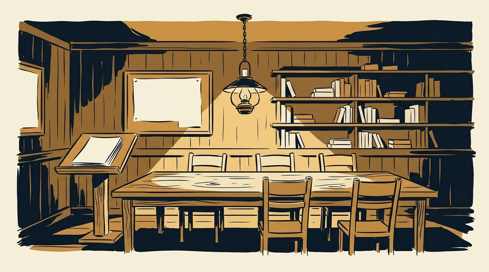
WELCOME TO
The Roman Forum
Bizzing Bee · Nobody Knows All of These1
Nobody Knows All of TheseHow this book works
General, then deep. Then again.
Every general round is followed by a speciality round that goes straight down one narrow hole — Norse gods, obscure rivers, minerals named after people. Nobody knows all of them. That is the point.
1
Rounds come in pairs
A general round to warm up, a speciality round to find out what you actually know.
2
The format keeps moving
Multiple choice, written answers, a crossword, a letter square. Never two the same in a row.
3
The key is at the back
Written answers are graded from the key. No peeking — Vex is guarding it.
4
The footnotes are the prize
Under every answer is the thing worth remembering. Read those even when you got it right.
Bizzing Bee · Nobody Knows All of These2
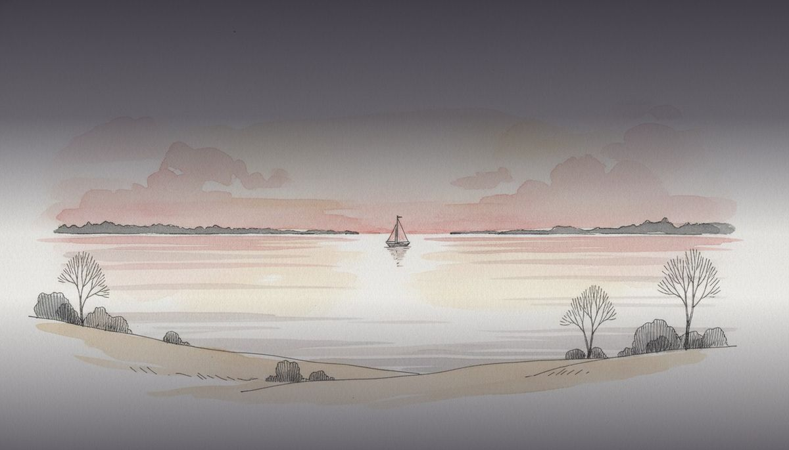
Round 1 · General
india
A general round, drawn from the app’s own bank at its three hardest levels. Warm up here.
36 questions · multiple choice
Bizzing Bee · Nobody Knows All of These3
Nobody Knows All of Theseindia
1. The vast open-air rock relief often called Arjuna's Penance is at which site?
AUndavalliBMahabalipuramCElloraDBadami
2. Which queen of Karnataka resisted British annexation as early as 1824?
AKittur Chennamma
BMangammal
CRudramadevi
DAhilyabai Holkar
3. The soup name mulligatawny comes from Tamil words meaning what?
AHot leavesBMilk brothCMixed riceDPepper water
4. India became a republic in 1950, meaning its head of state is what?
AChosen by lottery
BAppointed for life
CElected, not a monarch
DA prime minister
5. An American geologist's survey, a forest clearing in 1907, and a village called Sakchi launched which Indian venture?
AGodrej
BHindustan Motors
CBharat Heavy Electricals
DTata Steel
6. Gandhi returned to India for good from which country in 1915?
ASouth AfricaBEnglandCBurmaDFiji
7. Which cricketer captained India in Tests and had earlier played Test cricket for England?
ALala Amarnath
BC. K. Nayudu
CIftikhar Ali Khan Pataudi
DVijay Merchant
8. Which 1764 battle led directly to the Company gaining revenue rights over Bengal?
ABuxarBPlasseyCWandiwashDAssaye
9. Which journal did Gandhi edit to spread his ideas in English?
AThe Pioneer
BYoung India
CAmrita Bazar Patrika
DThe Hindu
Bizzing Bee · Nobody Knows All of These4
Nobody Knows All of Theseindia
10. Which tribal leader from the Chhotanagpur region led a movement for land rights in the 1890s?
AKunwar SinghBTirot SingCTantia TopeDBirsa Munda
11. Which Chola king led a daring naval expedition across the sea to Southeast Asia?
ARajaraja IIBAditya ICParantaka IDRajendra I
12. The name Vijayanagara means what?
ACity of rivers
BCity of victory
CCity of light
DCity of temples
13. A ten-character signboard, a bedrock reservoir and a stadium-sized ceremonial ground identify which Harappan city?
ALothalBDholaviraCHarappaDKalibangan
14. Which Indian mathematician stated that dividing a number by zero gives an unbounded quantity?
AVarahamihiraBBhaskara IICAryabhataDSridhara
15. India's Fundamental Rights were inspired largely by the constitution of which country?
AAustraliaBFranceCUnited StatesDJapan
16. A metallurgy scholarship, an unwanted government posting to a small Gujarat town, and a repaired cream separator launched whose career?
AVerghese Kurien
BJ. R. D. Tata
CHomi Bhabha
DM. S. Swaminathan
17. The word sitar comes from a Persian phrase meaning what?
ANight songBLong neckCSweet soundDThree strings
18. Indus Valley houses often had their own bathrooms connected to covered street drains.
AFalseBTrue
Bizzing Bee · Nobody Knows All of These5
Nobody Knows All of Theseindia
19. India's Directive Principles of State Policy were modelled largely on which country's constitution?
ASwitzerlandBJapanCIrelandDCanada
20. Which Gupta-era astronomy text explains planetary positions and shadows?
ARigveda
BAryabhatiya only
CSurya Siddhanta
DArthashastra
21. Ashoka's pillars were quarried mostly from sandstone found near which place?
AJaisalmerBKarauliCChunarDMakrana
22. The Sanskrit word for zero, shunya, literally means what?
ARoundBSmallCEmptyDBeginning
23. Gandhi was nominated for the Nobel Peace Prize several times but never received it.
AFalseBTrue
24. The word mahout, an elephant handler, descends from a Sanskrit title meaning what?
ABeast keeper
BGreat in measure
CRoyal servant
DForest guide
25. The Junagadh inscriptions repeatedly record repairs to what?
AA lake's damBA city gateCA temple roofDA harbour wall
26. Iron-cased rockets, a mechanical tiger now in a London museum, and an arsenal at Woolwich that studied Indian designs point to which ruler?
ARanjit SinghBBajirao IICNana FadnavisDTipu Sultan
27. E. Sreedharan earned the nickname Metro Man for building which system?
AThe Mumbai monorail
BThe Kolkata tram
CThe Delhi Metro
DThe Konkan Railway only
28. The English suffix wallah, as in box-wallah, comes from an Indian ending meaning what?
AOne who travels
BOne who serves
COne who owns
DOne connected with
Bizzing Bee · Nobody Knows All of These6
Nobody Knows All of Theseindia
29. The English word serendipity was coined from an old name for which island?
AJavaBSri LankaCBaliDSocotra
30. Which everyday English word for a small pattern of dots on cloth came from Indian trade?
AHoundstoothBTartanCGinghamDChintz
31. Ashoka's rock edicts mention Greek-speaking kings ruling far to the west of India by name.
AFalseBTrue
32. The English word bungalow's Indian root also names which region's language?
AOdiaBAssameseCMarathiDBengali
33. The word thug in English shifted from meaning a cheat to meaning what?
AA gambler
BA spy
CA beggar
DA violent bully
34. Which Pallava king had the Kailasanathar temple at Kanchipuram built?
ASimhavishnu
BRajasimha
CMahendravarman I
DNandivarman II
35. Which committee of seven members was charged with drafting India's Constitution?
AThe Rules Committee
BThe Drafting Committee
CThe Union Committee
DThe Advisory Committee
36. Which of these was the first Indian-run bank founded during the Swadeshi years and still famous?
AReserve BankBState BankCBank of BengalDBank of India
of 36
Round 1 · your score
Mark it now, while you still remember which ones you guessed. A guess you got right is not a thing you know.
Bizzing Bee · Nobody Knows All of These7
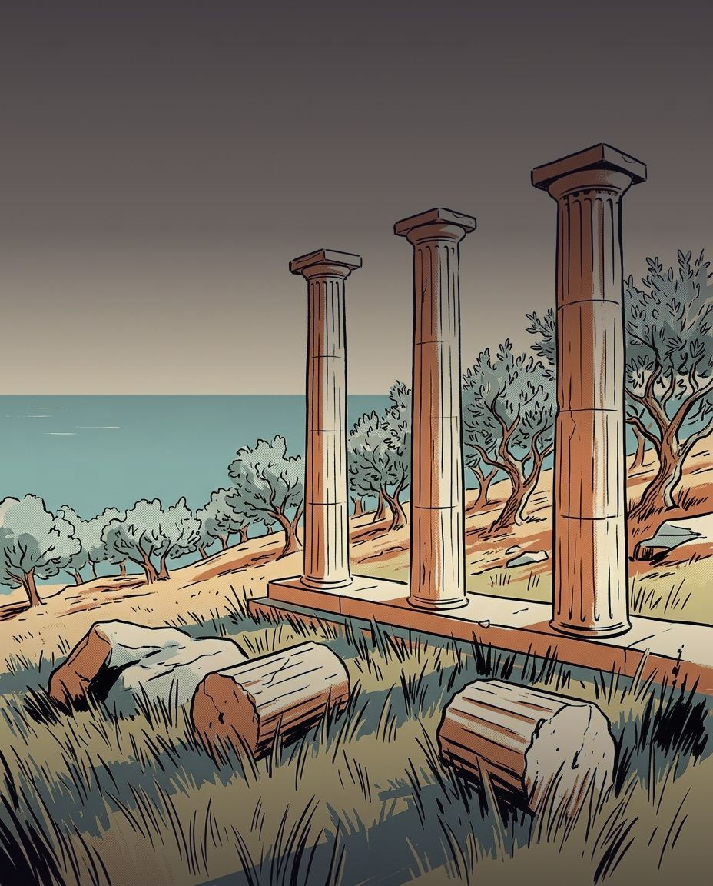
Round 2 · Speciality
The Greek Gods
Twelve on the mountain and a great many more off it. The Romans renamed nearly all of them, which is why half of these words come to us twice.
12 questions · multiple choice
Bizzing Bee · Nobody Knows All of These8
Nobody Knows All of TheseThe Greek Gods
1. Which goddess was born from the sea foam, according to Hesiod?
AAphroditeBDemeterCHestiaDArtemis
2. Hephaestus was the god of the forge. What was unusual about him among the Olympians?
AHe was blindBHe never spokeCHe was mortalDHe was lame
3. Which of the twelve Olympians gave up her seat so that Dionysus could have one?
AHeraBAthenaCHebeDHestia
4. The Muses were nine. Whose daughters were they?
AZeus and Mnemosyne
BPoseidon and Amphitrite
CZeus and Hera
DApollo and Leto
5. What did Hermes carry that is still used as a symbol by some medical bodies, in error?
AThe thyrsusBThe aegisCThe tridentDThe caduceus
6. Which Titan was punished by having an eagle eat his regenerating liver?
ACronusBOceanusCAtlasDPrometheus
7. The word "panic" comes from which god?
APanBPlutoCPhobosDPoseidon
8. Which river of the underworld gave English a word meaning "forgetful"?
AStyxBAcheronCLetheDCocytus
9. Athena sprang fully armed from the head of Zeus. Whom had Zeus swallowed to bring this about?
ALetoBMaiaCMetisDThemis
10. Which goddess did the Romans call Ceres, giving English a word for breakfast?
APersephoneBDemeterCRheaDGaia
11. What was the aegis, carried by Zeus and Athena?
AA shield or breastplate bearing a gorgon’s head
BA cap of invisibility
CA three-pronged spear
DA winged sandal
12. Which nymph faded away until only her voice remained?
AThetisBDaphneCEchoDCalypso
Bizzing Bee · Nobody Knows All of These9
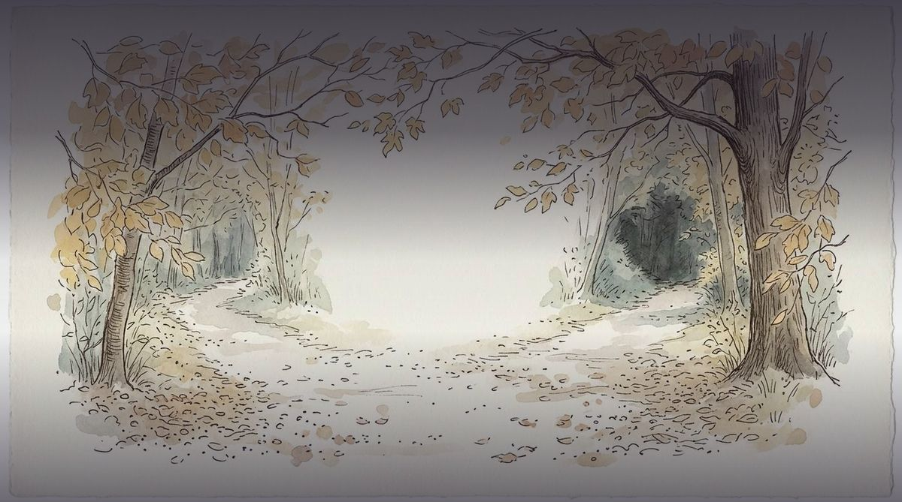
Round 3 · General
explore
A general round, drawn from the app’s own bank at its three hardest levels. Warm up here.
36 questions · written answers
Bizzing Bee · Nobody Knows All of These10
Nobody Knows All of Theseexplore
Write your answers. The key is at the back.
1. Emperor penguins are the only birds that breed through the Antarctic winter.
2. Everest was named in 1865 after George Everest, who held which job?
3. What is the record height of Robert Wadlow, the tallest man ever measured?
4. The Latin root of 'voyage' originally meant what?
5. Which cosmonaut holds the record for the longest single stay in space?
6. Which word describes crossing a river or shallow water on foot?
7. Which projection is used by National Geographic for world maps since 1998?
8. A leaky fuel line, a broken altimeter, and a farmer's field in Northern Ireland ended whose record flight?
9. Lindbergh flew without a radio to save weight for extra fuel.
10. Which Guinness World Records question started the whole book in 1951?
11. Which term means climbing light and fast with no fixed ropes or camps?
12. Which job did Ibn Battuta hold in several of the lands he visited?
13. Which climber's ice axe was found high on Everest in 1933, hinting at the 1924 mystery?
Bizzing Bee · Nobody Knows All of These11
Nobody Knows All of Theseexplore
14. What is a 'graticule' on a map?
15. What is a 'star compass' in Pacific wayfinding?
16. Which word means the science of moving through air, from Greek roots?
17. Which 1507 map was the first to use the name America?
18. Which star does the name Hokulea refer to?
19. Alpine-sized peaks no human eye has seen, radar echoes from four kilometres down, and a Soviet geophysicist's name identify which range?
20. Vanguard 1, launched in 1958, is the oldest human-made object still in orbit.
21. Which map of Britain, from about 1360, is the oldest to show roads and recognisable coastlines?
22. Which fish holds the record for the deepest one ever filmed alive?
23. Which Portuguese prince sponsored the school of navigation that opened the Atlantic?
24. A survey number instead of a name, a Bengali mathematician's calculations, and a British officer's objection all lie behind the naming of what?
25. The word 'bathyscaphe' is built from Greek words meaning what?
Bizzing Bee · Nobody Knows All of These12
Nobody Knows All of Theseexplore
26. Which ship carried Shackleton's crew across 1,300 km of open ocean for rescue?
27. A stratospheric balloon in 1931, a deep-sea float filled with petrol, and a grandson flying non-stop around the world belong to which family?
28. Apollo 8's crew were the first humans to see the far side of the Moon with their own eyes.
29. Which Chinese pilgrim's 5th-century journey to India produced one of the earliest travel books?
30. A slingshot message onto a passing ship's deck, an abandoned certain victory, and a course set for Tahiti describe which sailor?
31. A Nenets word borrowed through Russian, a hood that saved faces from frostbite, and the standard coat of Arctic expeditions point to which garment?
32. Which Arctic explorer's abandoned ship drifted free and was found years later off Greenland?
33. Which aircraft made the first non-stop unrefuelled flight around the world, in 1986?
34. A shipwreck in the Maldives, an appointment as an envoy for Muhammad bin Tughluq, and a book dictated to Ibn Juzayy identify whom?
35. Which vessel first reached the Challenger Deep, and what powered its float?
36. A carpenter's son from Yorkshire, wooden gears that needed no oil, and a sea trial to Jamaica that lost only seconds point to whom?
of 36
Round 3 · your score
Mark it now, while you still remember which ones you guessed. A guess you got right is not a thing you know.
Bizzing Bee · Nobody Knows All of These13
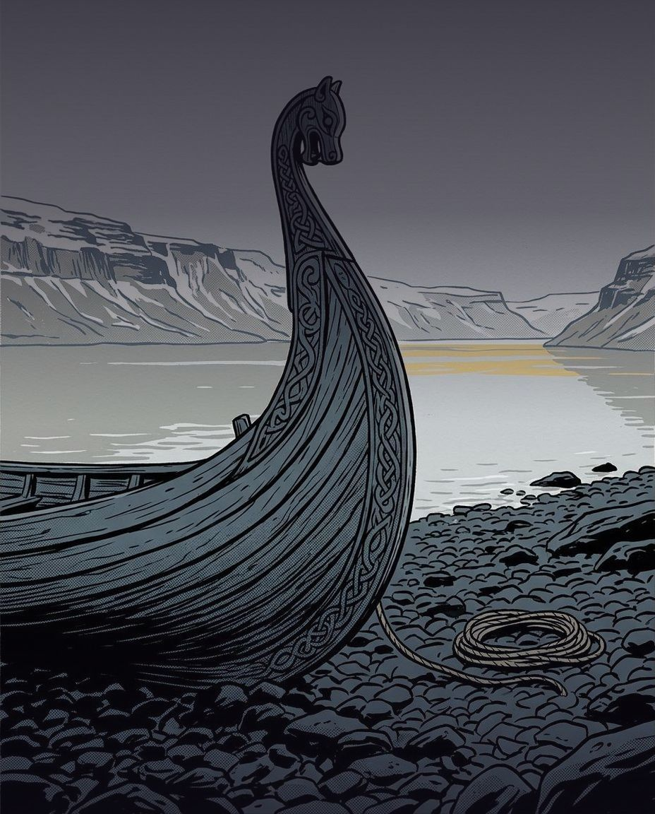
Round 4 · Speciality
Norse Mythology
Four days of the English week are Norse gods. This round is written short — no options, just the answer, and the key is at the back.
12 questions · written answers
Bizzing Bee · Nobody Knows All of These14
Nobody Knows All of TheseNorse Mythology
Write your answers. The key is at the back.
1. Which Norse god gives his name to Wednesday?
2. What is the name of the world tree that holds the nine realms?
3. What did Odin give up in exchange for a drink from Mimir’s well of wisdom?
4. Name Thor’s hammer.
5. What is the Norse word for the doom of the gods — the final battle?
6. Which of Loki’s children is the wolf bound until Ragnarok?
7. What was the hall where Odin gathered half the warriors who died in battle?
8. What is the name of the eight-legged horse ridden by Odin?
9. The rainbow bridge between the realms of gods and men is called what?
10. Which Norse word for a fierce warrior gave English a term for uncontrolled rage?
11. Who is the trickster who brings about the death of Balder?
12. What are the three Norse fates called, collectively?
of 12
Round 4 · your score
Mark it now, while you still remember which ones you guessed. A guess you got right is not a thing you know.
Bizzing Bee · Nobody Knows All of These15
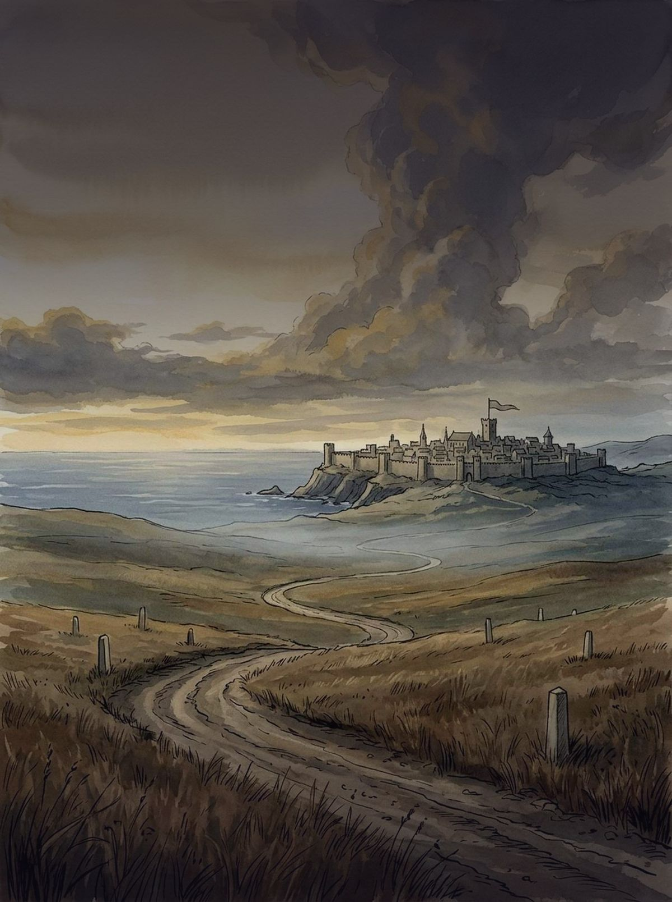
Round 5 · General
myth
A general round, drawn from the app’s own bank at its three hardest levels. Warm up here.
36 questions · multiple choice
Bizzing Bee · Nobody Knows All of These16
Nobody Knows All of Thesemyth
1. The name 'Heracles' is usually explained as meaning what?
ASon of ZeusBStrong handCGlory of HeraDLion tamer
2. Which of these Greek beings is a monster, not a god?
AHeraBApolloCDemeterDThe Minotaur
3. What does the saying “a house divided” mean?
AAn extra skill or option to fall back on
BA group whose inner quarrels will destroy it
CSlap my palm to celebrate or say hello
DYou can't do two incompatible things
4. Which staff, wrongly used as a medical symbol, actually belongs to Hermes and has two snakes?
AThe rod of Asclepius
BThe caduceus
CThe thyrsus
DThe sceptre of Zeus
5. Which element takes its name from the Greek sun god?
ASeleniumBIridiumCHeliumDCerium
6. What is an 'epithet' in epic poetry?
AA chapter title
BA short prayer
CA curse
DA fixed descriptive nickname
7. What does the saying “apple of discord” mean?
AA huge payout promised to a boss who loses their job
BTo take a foolish risk that invites bad luck
CTo avoid becoming close or friendly with someone
DA small thing that starts a big quarrel
8. A grand tomb is called a 'mausoleum' after a ruler buried where?
AThebes
BAlexandria
CPersepolis
DHalicarnassus in Asia Minor
9. How do Chinese dragons differ from European dragons in most legends?
AThey are afraid of water
BThey cannot fly at all
CThey fly without wings
DThey live only in volcanoes
Bizzing Bee · Nobody Knows All of These17
Nobody Knows All of Thesemyth
10. In Japanese folklore, the yuki-onna appears as a woman made of what?
ASnowBMistCWaterDMoonlight
11. In Greek myth, which goddess of the night was so ancient that even Zeus was careful with her?
ANyxBHemeraCHecateDSelene
12. In the Ramayana, which monkey hero helped build a bridge to Lanka?
AAngadaBSugrivaCHanumanDJambavan
13. The Great Sphinx statue in Egypt is longer than a basketball court.
ATrueBFalse
14. Hidden inside 'arctic' is the Greek word for which animal?
AReindeerBEagleCBearDSeal
15. A baby left on a mountain, a giant bird that raises him, and a son who becomes Persia's greatest hero point to whom?
ASohrabBRostamCZalDEsfandiyar
16. In Hindu myth, why did young Krishna lift Mount Govardhan?
ATo shelter villagers from a storm
BTo reach the moon
CTo dam a river
DTo find a lost cow
17. Which Chinese mythical bird, often called the Chinese phoenix, stands for peace and the empress?
AThe jingweiBThe pengCThe zhenniaoDThe fenghuang
18. Unexplained engine faults in the 1920s, crew slang decades before the word reached the cinema, and a creature invented to take the blame converge on which group?
AAir force pilots in the 1920s
BVictorian miners
CMedieval sailors
DRailway engineers
Bizzing Bee · Nobody Knows All of These18
Nobody Knows All of Thesemyth
19. Which mountain is described as the home of Shiva and Parvati?
AMount AbuBMount GirnarCMount KailashDMount Meru
20. A woman conjured out of oak, broom and meadowsweet, a betrayal, and a change into an owl point to whom?
ABranwenBBlodeuweddCRhiannonDArianrhod
21. In Japanese folklore, what did people blame for earthquakes?
AA stamping giant
BA giant catfish under the islands
CA digging mole
DA restless dragon
22. If a computer program hides its true purpose, we call it a Trojan. Why?
AIt means troublesome
BIt recalls the trick of the wooden horse
CIt honours a Greek coder
DIt was written in Troy
23. Greeks who refused to believe humans built Mycenae's walls, a legendary set of one-eyed smiths, and a term archaeologists still use converge on which kind of building?
ARound temple towers
BStone mazes
CWalls of huge unshaped stones
DCarved stone eyes
24. In Slavic folklore, the domovoi is a spirit that looks after what?
AThe harvest
BThe household
CThe village well
DThe forest
25. In Egyptian myth, which green-skinned god rules the peaceful afterlife?
AGebBSetCShuDOsiris
26. The Iliad and the Odyssey are written in a mixed poetic dialect that nobody ever spoke day to day.
AFalseBTrue
Bizzing Bee · Nobody Knows All of These19
Nobody Knows All of Thesemyth
27. Which Irish epic tells of a great cattle raid and a magical brown bull?
AThe Tochmarc
BThe Dindsenchas
CThe Tain
DThe Immram
28. A pair of dice-like lots, three brothers, and a helmet that hid its wearer point to which division of the Greek world?
APast, present and future
BLand, air and fire
CEast, west and north
DSky, sea and underworld
29. The 'aurora' in aurora borealis is the name of the Roman goddess of what?
ASnowBDawnCStarsDWind
30. How did Odysseus's crew survive sailing past the Sirens?
AWax in their ears
BSinging louder
CRowing at night
DCovering their eyes
31. A king who trapped Death in a sack, an unfinished funeral used as an excuse, and a return trip from the underworld point to whom?
AIxionBSisyphusCSalmoneusDTantalus
32. What is a 'foundation myth'?
AA story of how a city or people began
BA story with a moral
CA story about the first god
DA story about the underworld
33. The Norse word 'rune' originally meant what?
AMessage
BCarving
CStraight line
DSecret or mystery
34. A real monk of the 600s, seventeen years of travel to India, and a novel written 900 years later point to whom?
AXuanzangBYijingCJianzhenDFaxian
35. In Hindu myth, which wish-granting cow is the mother of all cattle?
3. The Ob is one of the longest rivers in the world. Into what does it drain?
AThe Caspian Sea
BLake Baikal
CThe Sea of Japan
DThe Arctic Ocean
4. Which African river flows through the Okavango Delta and never reaches the sea?
AThe OrangeBThe LimpopoCThe ZambeziDThe Okavango
5. The Murray is Australia’s longest river. Which is its principal tributary?
AThe DarlingBThe YarraCThe SwanDThe Fitzroy
6. Which European river rises in the Black Forest and reaches the Black Sea?
AThe OderBThe RhineCThe ElbeDThe Danube
7. The Mekong is called the Lancang in which country?
AVietnamBThailandCChinaDMyanmar
8. Which South American river is the largest tributary of the Amazon by volume?
AThe XinguBThe MadeiraCThe TapajosDThe Rio Negro
9. The Indus gives its name to a country it barely touches. Which country does it mainly flow through?
APakistanBIndiaCIranDAfghanistan
10. Which river runs through Baghdad?
AThe EuphratesBThe KarunCThe DiyalaDThe Tigris
11. The Yenisei divides which two halves of a continent?
ANorthern and southern China
BEuropean and Asian Turkey
CWestern and eastern Siberia
DEastern and western Mongolia
12. Which river’s name means "great river" in Spanish, making "Rio Grande River" a repetition?
AThe Rio NegroBThe Rio BravoCThe Rio GrandeDThe Rio Tinto
of 12
Round 6 · your score
Mark it now, while you still remember which ones you guessed. A guess you got right is not a thing you know.
Bizzing Bee · Nobody Knows All of These23
Round 7 · General
lit
A general round, drawn from the app’s own bank at its three hardest levels. Warm up here.
36 questions · crossword
Bizzing Bee · Nobody Knows All of These24
Nobody Knows All of Theselit
The clue is the meaning. The answer is the word.
1
2
3
4
5
6
7
8
9
10
Across
4. A childhood neighbour who became a famous journalist-novelist
7. A Greek phrase meaning 'at the bridal chamber'
8. In a book, the right-hand page is properly called the…?
9. Advertising art for an insecticide
10. The bear that inspired Winnie-the-Pooh was named after which Canadian city?
Down
1. Milton's 'Paradise Lost' is written in unrhymed iambic pentameter.
2. Which 18th-century poem set in a country churchyard ends with an epitaph for its…
3. The word 'essay' comes from a French word meaning…?
5. 'Deafening silence' and 'bittersweet' are examples of which device?
6. Which term describes a plot device that misleads the reader on purpose?
of 10
Round 7 · your score
Mark it now, while you still remember which ones you guessed. A guess you got right is not a thing you know.
Bizzing Bee · Nobody Knows All of These25
Round 8 · Speciality
Capitals of the World — the hard half
Not Paris. The capitals people get wrong, including three countries whose largest city is not their capital at all.
14 questions · written answers
Bizzing Bee · Nobody Knows All of These26
Nobody Knows All of TheseCapitals of the World — the hard half
Write the answer in the box. The key is at the back.
1. What is the capital of Australia?
2. What is the capital of Turkey?
3. What is the capital of Canada?
4. What is the capital of Brazil?
5. What is the capital of Switzerland?
6. What is the capital of New Zealand?
7. What is the capital of Nigeria?
8. What is the capital of Kazakhstan?
9. What is the capital of Bolivia’s judiciary — its constitutional capital?
10. What is the capital of Myanmar?
11. What is the capital of Morocco?
12. What is the capital of Vietnam?
13. What is the capital of Tanzania?
14. What is the capital of Sri Lanka?
of 14
Round 8 · your score
Mark it now, while you still remember which ones you guessed. A guess you got right is not a thing you know.
Bizzing Bee · Nobody Knows All of These27
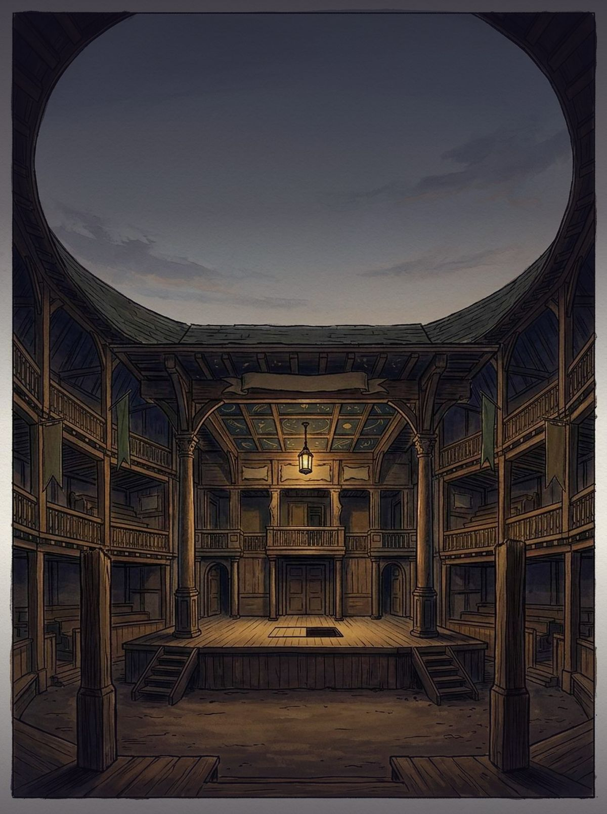
Round 9 · General
eponyms
A general round, drawn from the app’s own bank at its three hardest levels. Warm up here.
36 questions · multiple choice
Bizzing Bee · Nobody Knows All of These28
Nobody Knows All of Theseeponyms
1. Which word meaning "a white wine grape" comes from a village in the Maconnais, Burgundy?
APaulineBNapoleonicCchardonnayDJudaean
2. Which word meaning "unit of energy" comes from an English physicist?
APavlovaBJouleCEarl Grey TeaDCaesar Salad
3. Which word grew out of it?
FirstThere was a Greek name for Pharaoh Ramesses II.
ThenShelley's 1818 sonnet describes his shattered statue boasting in a desert where nothing else remains.
AOort Cloud
BCassini Division
COzymandian
DKuiper Belt
4. "Argonaut" is named after a place.
AFalseBTrue
5. Which name or term grew out of it?
FirstThere was a French astronomer.
ThenCatalog of nebulae, clusters, and galaxies to avoid confusing them with comets.
AZinnia
BWisteria
CPhilodendron
DMessier Objects
6. Which word meaning "the lightest inert gas, used to fill balloons" comes from the Greek sun god?
AheliumBJudaeanCJacobeanDJacobin
7. "alexandrite" is named after a person.
AFalseBTrue
8. Which word grew out of it?
FirstThere was a German physician and botanist.
ThenThe red hot poker plant was named after him.
AApicianBApollinaireanCkniphofiaDAristarchian
9. Which name or term meaning "surgical childbirth" comes from a Roman leader?
ALazarus
BCaesarean Section
CPyrrhic Victory
DAbrahamic
10. Which word grew out of it?
FirstThere was a Greek god of the forge.
ThenLame and cast out of Olympus, he made the finest armour and machines of the gods.
AKerr Black Hole
BHawking Radiation
CPenrose Process
DHephaestean
11. Which word grew out of it?
FirstThere was an American actor.
ThenHe was rarely filmed without a cigarette, and the slang came from his habit of letting it hang from his lip.
AAntigoneanBbogartCAlcibiadeanDVoltaic
12. Which word grew out of it?
FirstThere was a jewish religious sect.
ThenNew Testament portrayal emphasized legalism and hypocrisy.
AlawrenciumBgoethiteCsmithsoniteDPharisaic
Bizzing Bee · Nobody Knows All of These29
Nobody Knows All of Theseeponyms
13. Which word meaning "magnesium sulphate, used dissolved in baths" comes from a town in Surrey, England?
AtorrBepsomChooliganDoersted
14. There was a british surgeon. Introduced antiseptic surgical techniques. Which word grew out of it?
AListerismBehrlichiaCnocardiaDbabesia
15. "Hall–Petch Relationship" is named after a person.
ATrueBFalse
16. Which name or term meaning "movement disorder" comes from an English physician?
AJuliet Balcony
BByzantine
COlympian
DParkinson Disease
17. Which word meaning "keenly observant and deductive" comes from a detective created by Arthur Conan Doyle?
ADahliaBHolmesianCNicotianaDFuchsia
18. What does "ottoman" mean?
AA low padded seat or footstool without a back
BBoldly original and defiant of limits
CDark and infernal
DOf Phoenicia; relating to its traders and alphabet
19. Which word grew out of it?
FirstThere was a German philosopher.
ThenHe argued morality means acting only on rules you could will everyone to follow.
AKantianBAtlas VertebraCEsculapianDHermetic
20. Which word meaning "harsh, impoverished conditions" comes from an English novelist?
AsousaphoneBDickensianCcantaloupeDmach
21. There was a biblical king. Celebrated for wisdom and fair judgment. Which word grew out of it?
ASolomonicBpaulowniaCclarkiaDlewisia
22. Which word meaning "exceptionally handsome man" comes from a beautiful youth loved by Aphrodite?
ACaldwell Catalogue
BRoche Lobe
CAdonis
DRoche Limit
23. Which word grew out of it?
FirstThere was a daughter of Asclepius.
ThenRepresented universal healing in Greek mythology.
AbanksiaBbuddleiaCwillisDPanacea
24. Which word grew out of it?
FirstThere was a French weaver and inventor.
ThenHis loom used punched cards to control the pattern automatically.
AKeynesian
Bjacquard
CRicardian
DNash Equilibrium
Bizzing Bee · Nobody Knows All of These30
Nobody Knows All of Theseeponyms
25. Which word meaning "a mild yellow Dutch cheese" comes from a town in the Netherlands?
ABabelBgoudaCSadduceeDBabylonian
26. There was a cocktail origin debated. One theory traces it to Martinez, California. Which word grew out of it?
AJulian Calendar
BMartini
CBabylonian
DFabian Strategy
27. Which name or term grew out of it?
FirstThere was an Austrian physicist.
ThenHe linked the temperature of matter to the statistics of its moving particles.
AIsmenean
Bboltzmann constant
CHoratian
DIrenic
28. Which word meaning "tobacco alkaloid" comes from a French diplomat?
AStoicBSocraticCNicotineDPlatonic
29. Which word grew out of it?
FirstThere was a british surgeon.
ThenAn American doctor named his antiseptic after the pioneer of antiseptic surgery.
AlisterineBAlcibiadeanCArgus-eyedDAntigonean
30. Which word meaning "holding two contradictory beliefs at the same time" comes from the mental habit demanded by the Party in Nineteen Eighty-Four?
AEvangelicalBDorianCdoublethinkDEuclidian
31. Which word grew out of it?
FirstThere was a Greek god of light, music and prophecy.
ThenHe stood for clarity, proportion and reason.
ARoche LobeBRoche LimitCApollonianDBode's Law
32. Which word meaning "highly analytical" comes from a conan Doyle detective?
AmercedesBchevroletCSherlockianDcadillac
33. Which word grew out of it?
FirstThere was an American engineer.
ThenHis luxurious railway sleeping cars set the standard for comfortable long-distance travel.
AEuclidean Geometry
Bpullman
CSocratic Method
DArchimedean Screw
34. Which word meaning "excessive self-love" comes from a beautiful youth?
ATuring TestBNarcissismCFibonacciDMöbius Strip
35. Which word grew out of it?
FirstThere was an u.S.
ThenPresident.
AndPopular term for supply-side economics pursued during the 1980s.
Ahosta
Bschrodinger equation
CReaganomics
Dborsalino
36. "Irenic" is named after a place.
AFalseBTrue
of 36
Round 9 · your score
Mark it now, while you still remember which ones you guessed. A guess you got right is not a thing you know.
Bizzing Bee · Nobody Knows All of These31
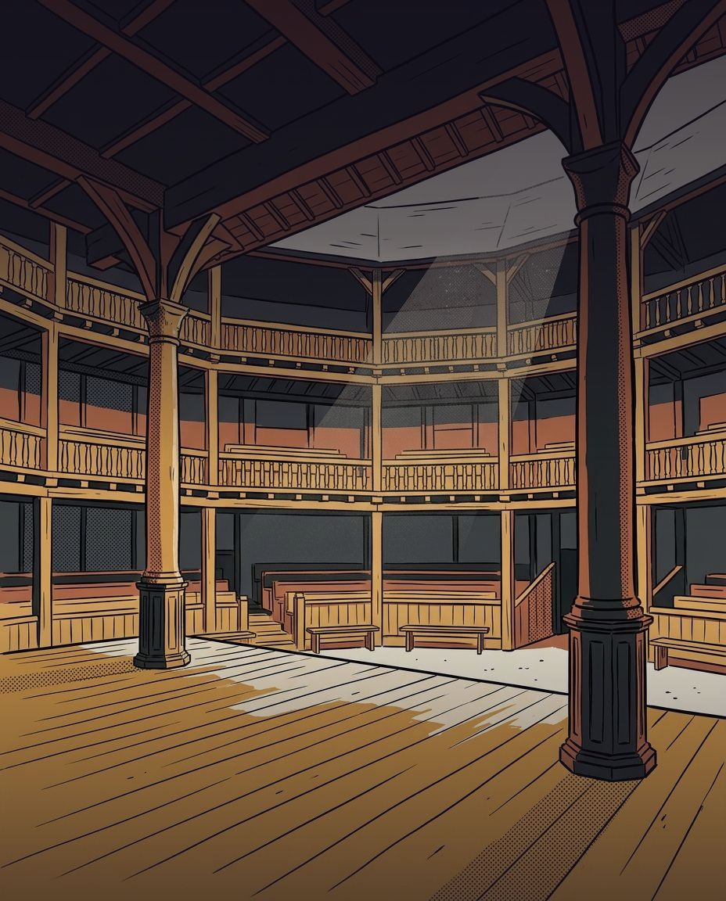
Round 10 · Speciality
Shakespeare’s People
Not the plots — the people in them, including several everybody can quote without being able to name.
12 questions · multiple choice
Bizzing Bee · Nobody Knows All of These32
Nobody Knows All of TheseShakespeare’s People
1. Who says "The first thing we do, let’s kill all the lawyers"?
ADick the Butcher, in Henry VI Part 2
BJaques, in As You Like It
CIago, in Othello
DFalstaff, in Henry IV
2. Which character speaks the "Tomorrow, and tomorrow, and tomorrow" speech?
AHamletBProsperoCMacbethDKing Lear
3. In The Tempest, who is Prospero’s daughter?
APerditaBSycoraxCMirandaDAriel
4. Who is the Queen of the Fairies in A Midsummer Night’s Dream?
AHippolytaBHermiaCTitaniaDHelena
5. Which character in Othello engineers the whole tragedy?
ARoderigoBBrabantioCIagoDCassio
6. In King Lear, which daughter refuses to flatter her father?
AReganBGonerilCCordeliaDOphelia
7. Who is the fat knight who appears in Henry IV and The Merry Wives of Windsor?
ABardolphBPistolCFalstaffDBottom
8. In Julius Caesar, who says "Et tu, Brute?"
ACaesarBMark AntonyCBrutusDCassius
9. Which weaver is given a donkey’s head in A Midsummer Night’s Dream?
AFluteBQuinceCBottomDSnug
10. Who is Hamlet’s university friend, the one left alive to tell the story?
ARosencrantzBOsricCLaertesDHoratio
11. In Twelfth Night, which character is tricked into wearing yellow stockings?
AOrsino
BFeste
CMalvolio
DSir Andrew Aguecheek
12. Which of these is NOT a character in Romeo and Juliet?
ABenvolioBSebastianCMercutioDTybalt
of 12
Round 10 · your score
Mark it now, while you still remember which ones you guessed. A guess you got right is not a thing you know.
Bizzing Bee · Nobody Knows All of These33
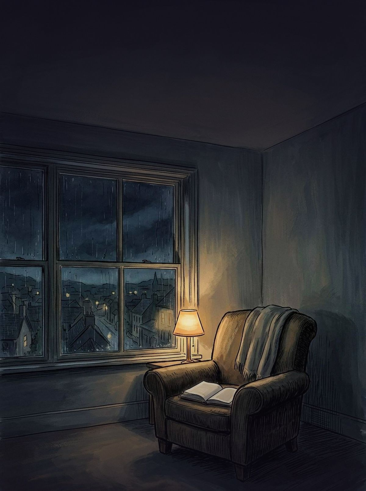
Round 11 · General
body
A general round, drawn from the app’s own bank at its three hardest levels. Warm up here.
36 questions · written answers
Bizzing Bee · Nobody Knows All of These34
Nobody Knows All of Thesebody
Write the answer in the box. The key is at the back.
1. What is the medical term for the sense of your body's position and balance combined?
2. Where inside your body are new blood cells made?
3. Which part of the brainstem controls automatic actions like your heartbeat and breathing?
4. The word 'sebum', your skin's natural oil, comes from a word meaning…?
5. A hormone whose name means 'sweet-making', released when blood sugar dips, and the mirror twin of insulin: which is it?
6. Whose SHADOW is this?
7. The forearm bone called the 'radius' shares its name with which everyday object?
8. A gland named after a bunch of herb flowers, busiest in childhood, and the school where immune T-cells are trained: which is it?
9. Who invented the stethoscope in 1816 after rolling a sheet of paper into a tube?
Bizzing Bee · Nobody Knows All of These35
Nobody Knows All of Thesebody
10. The word part 'phag', as in 'macrophage', means…?
11. What does the saying “tear your hair out” mean?
12. What is the 'blind spot' in your eye?
13. What does the saying “give someone the eye” mean?
14. In the word 'subcutaneous', the prefix 'sub-' tells you the layer is…?
15. Why do people yawn, according to one leading idea?
16. How many bones are packed into each of your feet?
17. A bone that is just a ring with no body, a Titan sentenced to an endless burden, and the reason you can nod 'yes' point to which vertebra?
18. A Spanish histologist who drew nerve cells by hand, a Nobel Prize shared in 1906 with a scientific rival, and proof that neurons are separate units: who was he?
Bizzing Bee · Nobody Knows All of These36
Nobody Knows All of Thesebody
19. What does the saying “to take someone's hair” mean?
20. A word from the Greek for 'falling away', like leaves dropping from a tree, describing cells that die on purpose: what is it?
21. The word 'sternum' comes from a Greek word meaning…?
22. A hormone whose name means 'swift birth', released during a hug, and nicknamed the cuddle chemical: which is it?
23. What are the tubes called that carry blood back to your heart?
24. In the word 'rhinoplasty', the ending '-plasty' means…?
25. A podiatrist is a doctor who takes special care of your…?
26. Which large white blood cell surrounds and swallows germs whole?
27. A term from Latin for the armpit, a hollow crowded with lymph nodes, and the place a doctor checks for swelling: what is it?
Bizzing Bee · Nobody Knows All of These37
Nobody Knows All of Thesebody
28. What are the two main parts of the central nervous system?
29. Which is longer when stretched out, your small or large intestine?
30. The tiniest blood vessels, the 'capillaries', are named from a word meaning…?
31. A person who studies the shape and structure of the body is an…?
32. What is the main job of the small lumps called lymph nodes?
33. A network of arteries at the brain's base, named after a 17th-century English physician, able to reroute blood when one vessel narrows: what is it?
34. Which branch of the nervous system prepares the body for 'fight or flight'?
35. A gap in the retina where no light sensors sit, the exit door of a million nerve fibres, and a hole your brain quietly paints over: what is it?
36. What is the name for a substance that triggers your immune system to react?
of 36
Round 11 · your score
Mark it now, while you still remember which ones you guessed. A guess you got right is not a thing you know.
Bizzing Bee · Nobody Knows All of These38
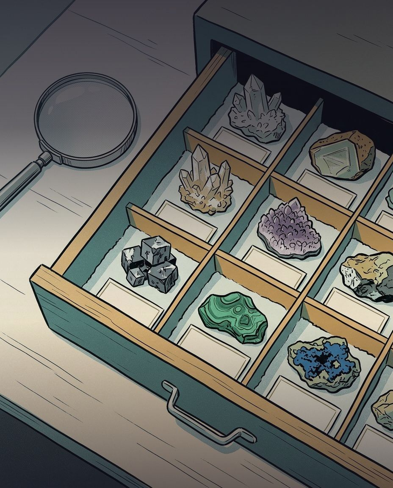
Round 12 · Speciality
Minerals Named After People
A mineral may be named for the person who found it, the person who paid for the expedition, or a person the finder admired. Every one of these is an eponym, which makes them all spelling questions too.
12 questions · multiple choice
Bizzing Bee · Nobody Knows All of These39
Nobody Knows All of TheseMinerals Named After People
1. Goethite, an iron ore, is named after whom?
AJohann Wolfgang von Goethe
BThe Goethe river
CA German village called Goethe
DCarl Goethe, a mine owner
2. Which element and its minerals are named after the woman who discovered polonium?
APoloniumiteBSklodovskiteCCuriumDRadium
3. Dolomite is named after Deodat de Dolomieu, who was what?
AA Spanish miner
BA Swiss mountaineer
CAn Italian duke
DA French geologist
4. Smithsonite, a zinc carbonate, shares its namesake with which institution?
AThe Royal Society
BThe Natural History Museum
CThe Smithsonian Institution
DThe Smith College collection
5. Alexandrite changes colour from green to red. Whom is it named after?
AAlexander von Humboldt
BAlexandre Dumas
CAlexander the Great
DTsar Alexander II of Russia
6. Perovskite, now central to a class of solar cells, honours Lev Perovski, who was what?
AA Ukrainian mine engineer
BA Czech crystallographer
CA Polish chemist
DA Russian mineralogist and statesman
7. Which mineral is named after the chemist who isolated potassium and sodium?
ADavyneBPriestleyiteCBoyleiteDFaradayite
8. Sillimanite is named for Benjamin Silliman, who taught at which university?
AYaleBPrincetonCHarvardDColumbia
9. Gadolinite honours Johan Gadolin. What did he discover?
AThe first synthetic mineral
BThe first radioactive element
CThe first noble gas
DThe first rare-earth element
10. Moissanite, used as a diamond substitute, was first found where?
AIn a South African mine
BOn the sea floor
CIn a meteorite crater
DIn a volcanic vent
11. Which mineral is named after the Scottish chemist who described Brownian motion?
ARobertsonite
BScotite
CNone — Brownian motion is named after a botanist
DBrownite
12. Uraninite is named after a planet, which is itself named after what?
AA Roman emperor
BA German astronomer
CA Greek sky god
DA Latin word for "distant"
of 12
Round 12 · your score
Mark it now, while you still remember which ones you guessed. A guess you got right is not a thing you know.
Bizzing Bee · Nobody Knows All of These40
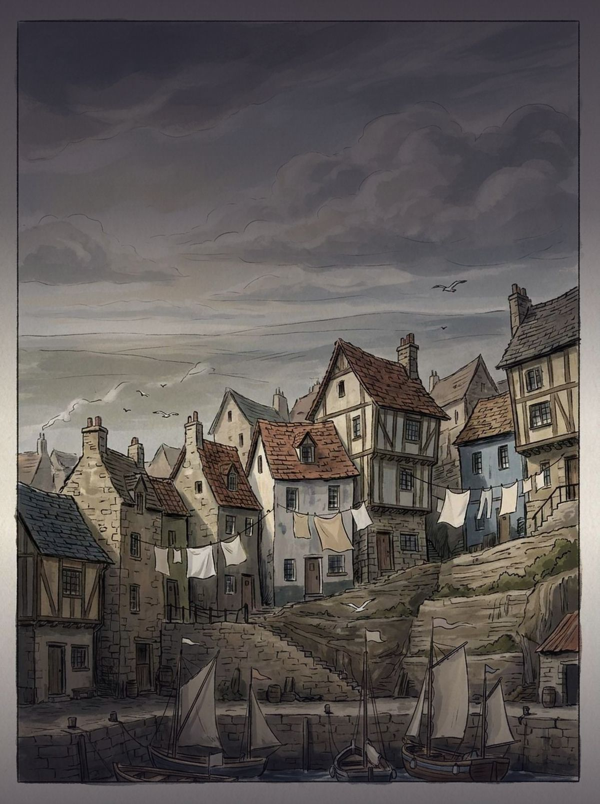
Round 13 · General
code
A general round, drawn from the app’s own bank at its three hardest levels. Warm up here.
36 questions · multiple choice
Bizzing Bee · Nobody Knows All of These41
Nobody Knows All of Thesecode
1. A 'shell' in computing is so called because it…?
AHolds electricity
BComes from the sea
CIs hard and brittle
DWraps around the kernel
2. A broken gadget, a buyer who collected broken ones on purpose, and the first sale on the site that became eBay describe which item?
AWatchBCameraCRadioDLaser pointer
3. A 'queue' data structure works on which principle?
ALargest first
BSmallest first
CLast in, first out
DFirst in, first out
4. 'Scrum', a term used in software teams, is borrowed from which sport?
ACricketBBaseballCRowingDRugby
5. A wager over a beer, a rule about doubling components, and a 1965 magazine article converge on which observation?
AKryder's lawBMoore's lawCBell's lawDMetcalfe's law
6. Grace Hopper's team famously found a real moth stuck inside a computer, helping popularise which term?
ACrashBFreezeCBugDGlitch
7. A cryptographic study of naval Enigma, a silver ingot buried in a wood, and a habit of chaining a mug to a radiator all describe which figure?
AAlan Turing
BGordon Welchman
CBill Tutte
DTommy Flowers
8. The 'Cloud' in cloud computing was chosen because engineers used to draw the network as…?
AA weather map
BA puff of smoke
CA cloud shape on diagrams
DA rain symbol
9. 'Telepresence' robots let a person do what?
ALift heavy weights
BBe present somewhere far away through a machine
CPredict the future
DSpeak many languages
10. The 'algo' spelling in 'algorithm' was reshaped in medieval Europe by confusion with a Greek word meaning…?
ANumberBLetterCMotionDWater
11. Which Italian officer's lecture notes did Ada Lovelace translate before adding her own commentary?
AGuglielmo Marconi
BGalileo Ferraris
CAlessandro Volta
DLuigi Menabrea
12. 'Upper case' and 'lower case' letters got their names from the position of…?
ATrays of metal type in a printing shop
BShelves in a library
CRows on a keyboard
DButtons on a typewriter
Bizzing Bee · Nobody Knows All of These42
Nobody Knows All of Thesecode
13. What does 'ASCII' stand for?
AAmerican Standard Code for Information Interchange
BAutomatic System Coding Index
CApplied Symbol Chart for Input
DAdvanced Serial Communication Interface
14. In his very first game, Mario was not called Mario. What was his name?
AHopperBPipemanCTinymanDJumpman
15. 'Electronic' devices are named after which particle?
AThe electronBThe neutronCThe protonDThe photon
16. Babbage's Difference Engine No. 2 was finally built from his drawings and completed in 2002. Where?
AThe Science Museum in London
BThe Smithsonian in Washington
CThe Louvre in Paris
DThe Deutsches Museum in Munich
17. A software 'update' that fixes a security hole is best installed…?
AOnly in summer
BNever
CA year later
DSoon after it is released
18. 'Nibble', a genuine computing term, refers to how many bits?
ASixteenBFourCSixDTwo
19. What does 'Wi-Fi' let a device do?
ACharge without a plug
BJoin a network without cables
CStore extra files
DPrint without ink
20. A missing manual, a machine that thought 1900 was the same as 2000, and worldwide panic on New Year's Eve describe which problem?
AThe leap-second bug
BThe Pentium bug
CThe Y2K bug
DThe Unix epoch bug
21. The unit 'hertz' is named after a scientist who studied…?
ARadio wavesBGlaciersCBeesDVolcanoes
22. 'Cruft', meaning leftover useless code, is believed to come from a building nickname at which university?
AHarvardBPrincetonCCornellDYale
23. The 'GNU' project's name is a recursive joke meaning…?
AGNU's Not Unix
BGreat New Utility
CGeneral Network Unit
DGrand Numeric Union
24. The word 'wiki' comes from a Hawaiian phrase, 'wiki wiki', that was used for the…?
AAirport shuttle buses
BFishing boats
CVolcano tours
DSurfing lessons
25. A rematch in New York, a puzzling computer move caused by a bug, and a machine dismantled before it could be challenged again describe which contest?
AFritz versus Kramnik
BDeep Blue versus Kasparov
CAlphaGo versus Ke Jie
DWatson on Jeopardy!
Bizzing Bee · Nobody Knows All of These43
Nobody Knows All of Thesecode
26. Early computers like ENIAC used glass 'vacuum tubes' instead of…?
ABatteriesBWiresCScreensDTransistors
27. In computing, 'foo' and 'bar' are traditional placeholder names collectively called…?
ADummy operators
BNull tokens
CBlank pointers
DMetasyntactic variables
28. Colossus, built at Bletchley Park in 1943, is regarded as the world's first…?
APocket calculator
BRobot arm
CMagnetic disk drive
DProgrammable electronic digital computer
29. In Pac-Man, the ghost that chases most directly is nicknamed…?
AInkyBPinkyCClydeDBlinky
30. A name chosen deliberately as one step up from Perl, a Japanese creator seeking programmer happiness, and a colleague's July birthstone point to which language?
AJadeBRubyCOpalDPearl
31. The word 'protocol' comes from Greek roots meaning the…?
ASealed box
BPublic rule
CFirst glued sheet
DWritten promise
32. Two Norwegians modelling ships and queues, the invention of the class in the 1960s, and the language Stroustrup later borrowed from point to which pair?
ADahl and Nygaard
BIverson and Falkoff
CBackus and Naur
DWirth and Hoare
33. A rattling wooden cabinet in a California bar, a coin box stuffed too full, and two paddles with a square ball describe which machine?
AAsteroidsBPongCPinballDComputer Space
34. A 1971 paper by Stephen Cook, the first problem shown to be as hard as any in its class, and a puzzle about making a logic formula come out true describe which problem?
AGraph colouring
BSubset sum
CBoolean satisfiability
DThe travelling salesman problem
35. Grace Hopper's colleague Jean Sammet co-designed COBOL and wrote which influential 1969 survey?
AFoundations of Coding
BModern Data Processing
CProgramming Languages: History and Fundamentals
DThe Compiler Handbook
36. In web colour codes, what do the three pairs of digits stand for?
ALight, medium, dark
BTop, middle, bottom
CHeight, width, depth
DRed, green, and blue
of 36
Round 13 · your score
Mark it now, while you still remember which ones you guessed. A guess you got right is not a thing you know.
Bizzing Bee · Nobody Knows All of These44
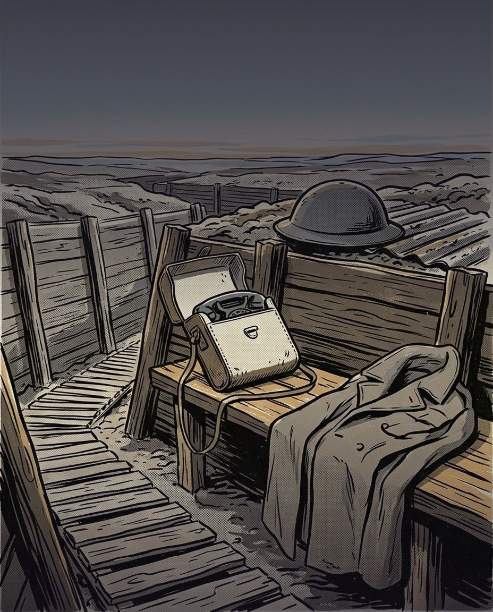
Round 14 · Speciality
Words the Wars Left Behind
War is one of the fastest word factories in any language. These are ordinary English words that entered the language, or changed meaning entirely, on a battlefield.
14 questions · written answers
Bizzing Bee · Nobody Knows All of These45
Nobody Knows All of TheseWords the Wars Left Behind
Write the answer in the box. The key is at the back.
1. Which word for a period of quiet in a battle now means a truce of any kind?
2. What word for a soldier’s temporary shelter comes from the French for "to make a noise"?
3. Which word, from the Hindi for "dusty", named a uniform colour?
4. What term for concealing equipment comes from the French for "to disguise"?
5. Which word for a sudden attack from cover comes from Old French for "to lie in wait in a wood"?
6. What word for an all-out bombardment comes from the German for "lightning war"?
7. Which word for the ground between opposing trenches is now used for any unclaimed territory?
8. What word for a small mobile group of soldiers now names a group of anything?
9. Which word for the total surrender of a position comes from Latin for "chapter"?
Bizzing Bee · Nobody Knows All of These46
Nobody Knows All of TheseWords the Wars Left Behind
10. What word for a soldier’s food ration gave English a term for strict limiting of anything?
11. Which word meaning "to destroy one in ten" is now used to mean "to destroy almost all"?
12. What term for a soldier who has served long and hard now means an expert in any field?
13. Which word for the sudden noise and shock of shelling gave English a term for lasting distress?
14. What word for a defensive ditch and mound gave English a verb meaning "to dig in and refuse to move"?
of 14
Round 14 · your score
Mark it now, while you still remember which ones you guessed. A guess you got right is not a thing you know.
Bizzing Bee · Nobody Knows All of These47
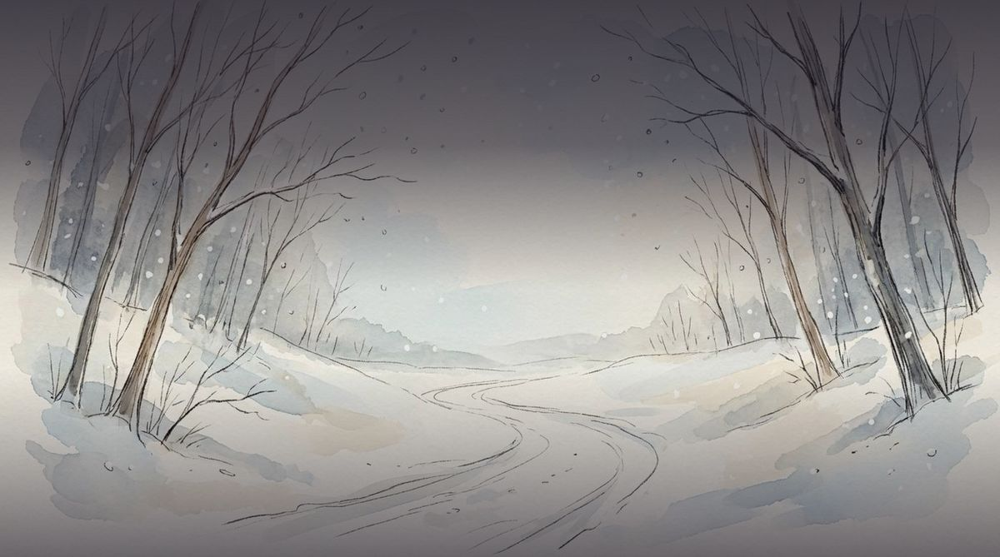
Round 15 · General
weather
A general round, drawn from the app’s own bank at its three hardest levels. Warm up here.
36 questions · letter square
Bizzing Bee · Nobody Knows All of These48
Nobody Knows All of Theseweather
Answer each clue, then find the answer in the square.
1. When forecasters say a shower will 'dissipate', they mean it will do what?
2. If you 'take a rain check' on a picnic, what are you doing?
3. Sunday and Monday are named after which two things?
4. The scale rating tornado strength was upgraded in 2007 to judge damage more carefully.
5. Raindrops are shaped like round blobs, not pointy teardrops.
6. What is a 'squall line'?
7. The number of sunspots freckling the Sun rises and falls in a cycle of roughly how many…
8. Which planet has the Great Red Spot, a storm bigger than Earth?
9. Tornadoes have been recorded on every continent except Antarctica.
10. On tropical mountains
11. Hail can fall even during warm summer weather.
12. What is the difference between 'weathering' and 'erosion'?
of 10
Round 15 · your score
Mark it now, while you still remember which ones you guessed. A guess you got right is not a thing you know.
Bizzing Bee · Nobody Knows All of These49
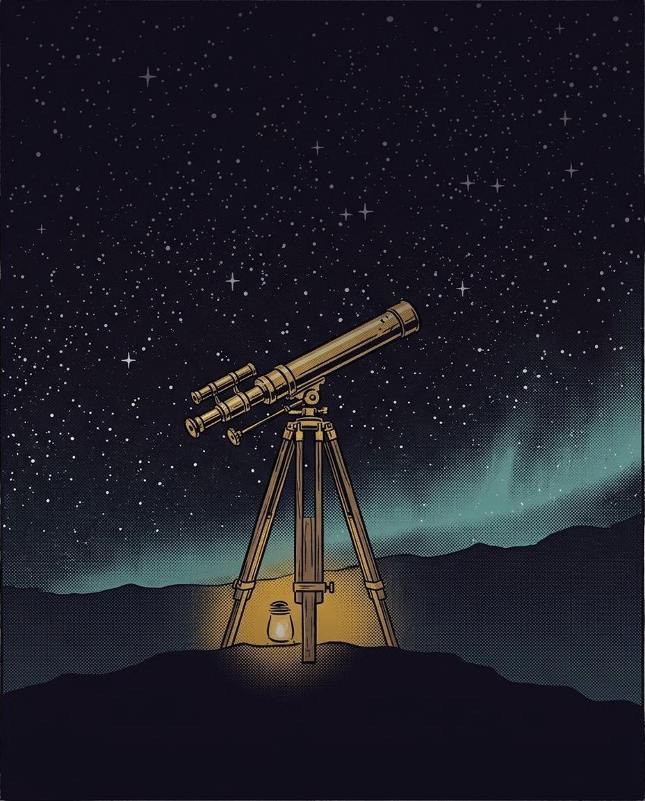
Round 16 · Speciality
Constellations and Their Stories
Eighty-eight official constellations, and almost all the northern ones are Greek myths written on the sky.
12 questions · multiple choice
Bizzing Bee · Nobody Knows All of These50
Nobody Knows All of TheseConstellations and Their Stories
1. Which constellation is the hunter, with a belt of three bright stars?
AHerculesBOrionCBootesDPerseus
2. Cassiopeia is recognisable as which shape?
AA triangleBA hookCA crossDA W or M
3. Which constellation contains the star Polaris?
ACepheusBUrsa MinorCDracoDUrsa Major
4. The Southern Cross appears on several national flags. What is its Latin name?
AVelaBCarinaCCruxDCentaurus
5. Which constellation is named for a lyre and contains Vega?
ALyraBAquilaCDelphinusDCygnus
6. Andromeda was chained to a rock as a sacrifice to which sea monster?
ACetusBHydraCScorpiusDDraco
7. Which constellation was the ship Argo, before astronomers broke it into three?
AAurigaBArgo NavisCColumbaDPegasus
8. Scorpius chased which hunter across the sky, so that the two are never visible at once?
APerseusBBootesCSagittariusDOrion
9. What does the name of the star Betelgeuse most likely mean in Arabic?
AThe tail of the fish
BThe hand of the giant
CThe eye of the bull
DThe heart of the lion
10. Which zodiac constellation is the only one representing an inanimate object?
ASagittariusBAquariusCVirgoDLibra
11. The Pleiades sit in which constellation?
AGeminiBTaurusCAriesDCancer
12. Which constellation’s name is Latin for "the swan", and flies down the Milky Way?
ACygnusBPavoCGrusDPhoenix
of 12
Round 16 · your score
Mark it now, while you still remember which ones you guessed. A guess you got right is not a thing you know.
Bizzing Bee · Nobody Knows All of These51
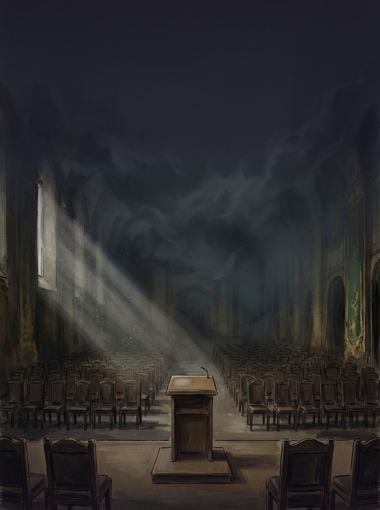
Round 17 · General
quotes
A general round, drawn from the app’s own bank at its three hardest levels. Warm up here.
36 questions · multiple choice
Bizzing Bee · Nobody Knows All of These52
Nobody Knows All of Thesequotes
1. A synesthete who reportedly heard sounds on seeing colours, a Bauhaus teaching post, and 'Color is a power which directly influences the soul' name whom?
AWassily Kandinsky
BPaul Klee
CPiet Mondrian
DFranz Marc
2. Huxley advised: 'Sit down before fact as a little child, and be prepared to give up every ___ notion.'
ApreconceivedBcomfortingCpublishedDinherited
3. Which Russian author said: 'Music is the shorthand of emotion'?
AFyodor Dostoevsky
BIvan Goncharov
CAnton Chekhov
DLeo Tolstoy
4. In Yeats's Innisfree, he plans to live 'in the bee-loud ___.'
AgardenBgladeCmeadowDvalley
5. MLK said: 'The ultimate measure of a person is where they stand in times of challenge.' Meaning?
AHard times reveal true character
BTall people lead best
CMeasure twice, cut once
DChallenges should be avoided
6. Over 500 books, a coined word for the study of robots, and 'That's funny...' as science's most exciting phrase name whom?
ARobert Heinlein
BIsaac Asimov
CFrederik Pohl
DArthur C. Clarke
7. 'Ring out, wild bells, to the wild sky, The flying cloud, the frosty light.' Which poem is this from?
AIn Memoriam
BThe Charge of the Light Brigade
CUlysses
DThe Lady of Shalott
8. A 51-volume home-study set called the Five-Foot Shelf, a 40-year university presidency, and 'the quietest and most constant of friends' name whom?
ACharles W. Eliot
BNicholas Murray Butler
CDerek Bok
DJames Conant
9. Which blues musician said: 'The beautiful thing about learning is that nobody can take it away from you'?
AJohn Lee Hooker
BMuddy Waters
CB. B. King
DHowlin' Wolf
10. A campaign tent on the Danube frontier, a private Greek notebook never meant for publication, and gratitude for 'the chief of the blessings you do possess' name whom?
AAntoninus Pius
BHadrian
CMarcus Aurelius
DJulian
11. Which British astronomer said: 'The stars are the land-marks of the universe'?
AJohn Frederick William Herschel
BJames Bradley
CEdmond Halley
DWilliam Herschel
12. Educator Mary McLeod Bethune said: 'The whole world opened up to me when I learned to ___.'
AflyBreadCtravelDteach
Bizzing Bee · Nobody Knows All of These53
Nobody Knows All of Thesequotes
13. A pulse used as a stopwatch, an inclined plane rolled with bronze balls, and 'Measure what is measurable' point to whom?
AChristiaan Huygens
BGalileo Galilei
CIsaac Newton
DRobert Hooke
14. 'Examine what is said, not who speaks.' What does this Arabic proverb teach?
AFamous people speak best
BJudge ideas by their merit, not the speaker's fame
CExamine speeches for errors
DNever listen to strangers
15. An 1885 Paris funeral of two million mourners, a Guernsey exile, and 'To learn to read is to light a fire' point to whom?
AEmile Zola
BAlexandre Dumas
CHonore de Balzac
DVictor Hugo
16. Which Nobel chemist said: 'The best way to have a good idea is to have lots of ideas'?
AGlenn Seaborg
BRobert Woodward
CLinus Pauling
DHarold Urey
17. A tutor to a young emperor, an essay collection called On Benefits, and 'Luck is what happens when preparation meets opportunity' identify whom?
ACiceroBEpictetusCQuintilianDSeneca
18. Who said: 'Nature uses as little as possible of anything'?
AJohannes Kepler
BNicolaus Copernicus
CTycho Brahe
DGalileo Galilei
19. Which Argentine writer said: 'I have always imagined that Paradise will be a kind of library'?
AJorge Luis Borges
BJulio Cortazar
CErnesto Sabato
DAdolfo Bioy Casares
20. Which American horticulturist said: 'A garden requires patient labor and attention'?
AJohn Bartram
BLiberty Hyde Bailey
CLuther Burbank
DAsa Gray
21. Ray Bradbury also wrote: 'Jump off the cliff and build your wings on the way down.'
AFalseBTrue
22. A basement typewriter rented at ten cents per half hour, a title naming a paper's ignition point, and a warning about people simply stopping reading name whom?
ARobert Heinlein
BIsaac Asimov
CRay Bradbury
DKurt Vonnegut
23. Which American entrepreneur said: 'If you're not making mistakes, then you're not making decisions'?
ASara Blakely
BArianna Huffington
CCatherine Cook
DSheryl Sandberg
24. Mark Twain responded to a false rumor with the line: 'The reports of my death are greatly exaggerated.'
ATrueBFalse
Bizzing Bee · Nobody Knows All of These54
Nobody Knows All of Thesequotes
25. Which Russian novelist said: 'Everyone thinks of changing the world, but no one thinks of changing himself'?
ALeo Tolstoy
BFyodor Dostoevsky
CAnton Chekhov
DIvan Turgenev
26. Who said: 'Whatever you can do, or dream you can, begin it. Boldness has genius, power and magic in it'?
AImmanuel Kant
BJohann Wolfgang von Goethe
CHeinrich Heine
DFriedrich Schiller
27. Which artist said: 'Every good painter paints what he is'?
AFranz Kline
BWillem de Kooning
CJackson Pollock
DMark Rothko
28. What does the Persian proverb 'The man who speaks the truth is always at ease' mean?
AEase comes from silence
BComfort makes people honest
CHonesty frees you from worry
DTruth-tellers speak slowly
29. Tesla said: 'If you want to find the secrets of the universe, think in terms of energy, frequency and ___.'
AlightBgravityCvibrationDnumbers
30. In Shakespeare's 'Our doubts are traitors, and make us lose the good we oft might win,' 'oft' means...?
AopenlyBalmostConceDoften
31. An editor who published Angela Davis, a Nobel Prize in 1993, and 'you must write it' if the book does not exist name whom?
Mark it now, while you still remember which ones you guessed. A guess you got right is not a thing you know.
Bizzing Bee · Nobody Knows All of These55
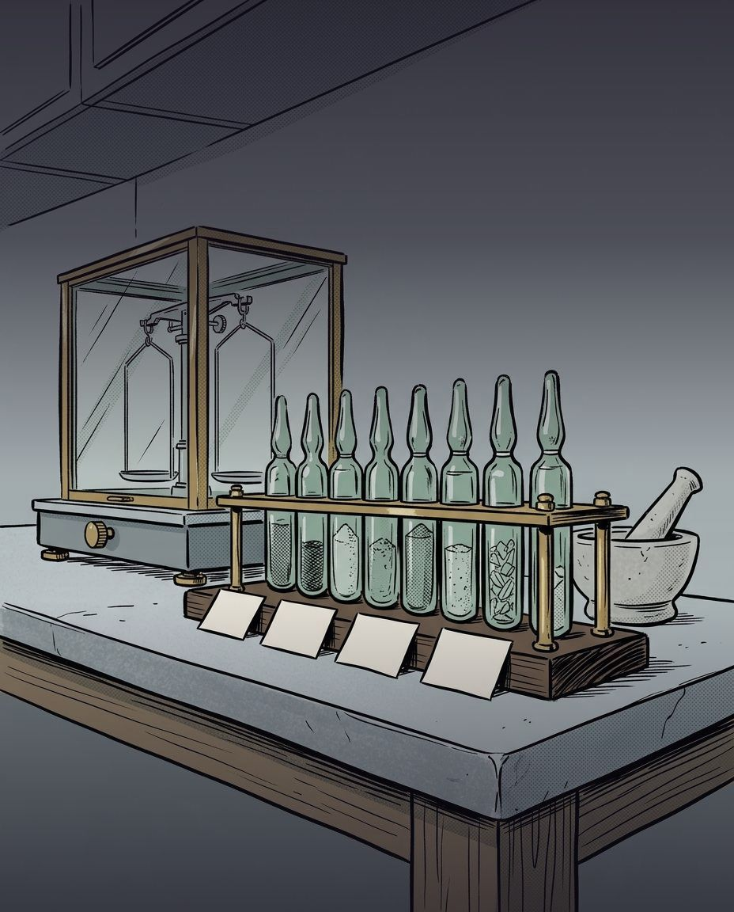
Round 18 · Speciality
The Periodic Table’s Namesakes
Places, planets, people and one Scandinavian village that got four elements to itself.
12 questions · multiple choice
Bizzing Bee · Nobody Knows All of These56
Nobody Knows All of TheseThe Periodic Table’s Namesakes
1. Four elements are named after a single village in Sweden. Which village?
AYtterbyBFalunCKirunaDUppsala
2. Which element is named after the Greek word for "lazy" or "inactive"?
AKryptonBNeonCArgonDXenon
3. Einsteinium and fermium were both discovered in the debris of what?
AA uranium mine
BA hydrogen bomb test
CA meteorite
DA particle accelerator
4. Which element is named after the Greek for "hidden"?
ALanthanumBKryptonCSeleniumDIridium
5. Iridium takes its name from Iris. What was she goddess of?
AThe rainbowBThe dawnCThe seaDMemory
6. Which element is named after the Latin for "heavy stone"?
ABarium
BStibium (antimony)
CPlumbum (lead)
DWolfram (tungsten)
7. Cobalt is named after a creature from German folklore. What kind?
AA giantBA goblinCA water spiritDA dragon
8. Which element is named after the Greek titan who stole fire?
ATantalumBUraniumCPromethiumDTitanium
9. Tantalum is named after Tantalus, who was punished how?
ABy being turned to stone
BBy being chained to a rock
CBy pushing a boulder uphill forever
DWith food and water always just out of reach
10. Which element honours the woman who won Nobel Prizes in two different sciences?
AMeitneriumBCuriumCRoentgeniumDNobelium
11. Gallium is named after a place. Which one?
AGalicia in Spain
BFrance (Gallia)
CWales
DGalilee
12. Which element is named after the smallest planet, and was discovered by studying the Sun?
AMercuryBSeleniumCHeliumDTellurium
Bizzing Bee · Nobody Knows All of These57
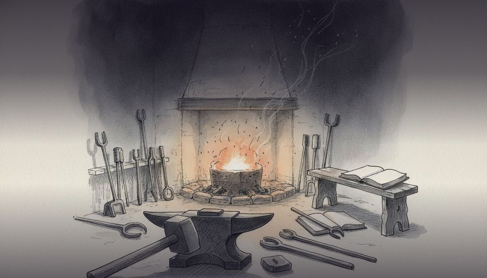
Round 19 · General
food
A general round, drawn from the app’s own bank at its three hardest levels. Warm up here.
36 questions · written answers
Bizzing Bee · Nobody Knows All of These58
Nobody Knows All of Thesefood
Write your answers. The key is at the back.
1. The 'muscat' grape and 'muscatel' wine take their name from a word for…?
2. A dense black rye baked up to a day at low heat, a dark color from slow browning rather than cocoa, and a blunt old German name point to which bread?
3. The sauce 'mayonnaise' is popularly linked to the port of Mahon on which island?
4. An Austrian city on the Danube, a lattice-topped tart of nuts and jam, and a claim to be the oldest cake known by name point to which dessert?
5. In a baked Alaska, ice cream survives the hot oven because its meringue coat is packed with…?
6. The wasabi served in most sushi restaurants is often dyed horseradish, not real wasabi.
7. Salting sliced aubergine draws out water by osmosis.
8. Which of these fruits is NOT a citrus fruit?
9. The restaurant title 'maitre d'hotel' literally means…?
10. Which acid gives vinegar its sharp, sour smell and taste?
11. Which of these foods is a fungus, not a plant?
12. A food 'connoisseur' is a person with…?
Bizzing Bee · Nobody Knows All of These59
Nobody Knows All of Thesefood
13. What does the saying “a different kettle of fish” mean?
14. What turns toast golden brown?
15. The root 'frig' in 'refrigerate' means…?
16. On an Italian menu, 'scampi' are a kind of…?
17. The Middle Eastern sweet 'halva' is most often made from sesame paste and…?
18. The pasta name 'spaghetti' means little…?
19. A 'macedoine' of diced fruit or vegetables is named after which ancient realm's mix of peoples?
20. What does the saying “to make a whole cheese of it” mean?
21. Which common fruit carries its seeds on the outside rather than hidden inside?
22. The word 'mustard' comes from 'must', or grape juice, plus a word meaning…?
23. A 'savory' flavor is one that is…?
24. The word 'wagyu', for the prized Japanese beef, literally means…?
25. Words like 'sandwich' and 'graham cracker', named after people, are called…?
Bizzing Bee · Nobody Knows All of These60
Nobody Knows All of Thesefood
26. A bitter alkaloid a plant makes to poison insects, the world's most used stimulant, and a shared ingredient of coffee, tea, and cacao point to which compound?
27. The word 'cookie' comes from a Dutch word 'koekje' meaning…?
28. The word 'yeast' comes from an ancient root meaning to…?
29. The juice of which fruit can be used as invisible ink that browns when heated?
30. In nature, 'nectar' is the sweet liquid that bees collect from…?
31. What living ingredient makes bread dough puff up?
32. A red-orange dye from the seeds of the achiote tree, the reason many cheddars look orange, and a colorant in lipstick point to which additive?
33. The stretching-and-stacking step named 'cheddaring' is used to make which cheese?
34. Spicy 'Buffalo wings' are named after a city in which US state?
35. A 'sommelier' in a fine restaurant is an expert on…?
36. The 'glycemic index' of a food measures how quickly it raises your…?
of 36
Round 19 · your score
Mark it now, while you still remember which ones you guessed. A guess you got right is not a thing you know.
Bizzing Bee · Nobody Knows All of These61
Round 20 · Speciality
Roots Hidden in Plain Sight
A crossword built from words whose meaning is sitting inside them, if you know the root. Solve the grid; the clue is the meaning of the parts.
12 questions · crossword
Bizzing Bee · Nobody Knows All of These62
Nobody Knows All of TheseRoots Hidden in Plain Sight
The clue is the meaning. The answer is the word.
1
2
3
4
5
6
7
8
Across
1. Speaking many languages — poly + glotta, "tongue"
4. A remedy against all poisons — pan + akos, "cure"
7. Under the earth — sub + terra
8. A creature that eats everything — omni + vorare, "to devour"
Down
2. A word meaning "all-powerful" — omni + potens
3. Writing in beautiful hand — kallos, "beauty", plus graphein
5. Coming before in time — ante + cedere, "to go"
6. One who studies the stars — astron plus nomos, "law"
of 8
Round 20 · your score
Mark it now, while you still remember which ones you guessed. A guess you got right is not a thing you know.
Bizzing Bee · Nobody Knows All of These63
Round 21 · General
langs
A general round, drawn from the app’s own bank at its three hardest levels. Warm up here.
36 questions · multiple choice
Bizzing Bee · Nobody Knows All of These64
Nobody Knows All of Theselangs
1. The word "cynic" comes from a Greek word meaning...?
ADog-likeBSun-burntCDoubtingDSharp-tongued
2. A Polish eye doctor, a pen name meaning "one who hopes," and nouns that all end in O describe which language?
AInterlinguaBIdoCEsperantoDVolapuk
3. Turkish, Finnish and Hungarian all use a rule called vowel...?
AShiftBReductionCHarmonyDDoubling
4. The word "sinister" comes from a Latin word meaning...?
ACrookedBLeftCSilentDDark
5. The name "OK" is most often traced to a joking abbreviation of...?
AOld Kentucky
BOn Course
COrder Kept
DAll correct, misspelled
6. The German letter that looks like a B and represents a double s is called...?
AYoghBEszettCUmlautDThorn
7. When two letters are joined into one shape, like the ae in some fonts, it is called a...?
ALinkageBLigamentCLigatureDLayer
8. Manuscripts in a Chinese desert cave, a clay tablet about drinking water, and a judge's 1786 lecture in Calcutta all expanded knowledge of which family?
AUralicBSemiticCAustronesianDIndo-European
9. "Kowtow" comes from a Chinese expression meaning to...?
AKnock the headBFold the handsCLower the eyesDBend the knee
10. "Sanguine," meaning cheerfully optimistic, comes from a word for...?
ABloodBSongCSunDWine
Bizzing Bee · Nobody Knows All of These65
Nobody Knows All of Theselangs
11. Basque marks the doer of an action with a special ending — a grammatical feature called...?
AVowel harmonyBErgativityCTonalityDClusivity
12. A "sycophant" in ancient Greek literally meant a...?
AFast talkerBFake friendCFig showerDFoot follower
13. Tok Pisin, an official language of Papua New Guinea, is a creole based mainly on...?
AEnglishBPortugueseCGermanDMalay
14. "Coconut" comes from a Portuguese word for a...?
AHard shellBSea gourdCRound stoneDGrinning face
15. The root "greg" in "gregarious" and "segregate" means...?
AGrowBGroundCFlock or herdDGrasp
16. A French teacher of English, an association founded in 1886, and about a hundred symbols able to write any human sound produced whose creation?
17. A group in Utah in the 1850s, a schoolbook printed in strange letters, and a 38-character alphabet describe which failed reform?
AUnifon
BQuikscript
CThe Deseret alphabet
DThe Shavian alphabet
18. "Check," "chess" and "exchequer" all descend from a Persian word for a...?
ATableBCoinCBoardDKing
19. Which language is written in a script created for it in the 5th century and used only there?
APortugueseBVietnameseCTurkishDArmenian
20. Thomas More built the word "utopia" from Greek parts meaning...?
AFar islandBNo placeCNew worldDGood place
Bizzing Bee · Nobody Knows All of These66
Nobody Knows All of Theselangs
21. The word "lexicon" means a...?
AVocabulary or word-stock
BSentence pattern
CType of accent
DWriting tool
22. The old letter "wynn" was replaced in English by which modern letter?
AWBYCUDV
23. The English word "knight" once meant simply a...?
ASword makerBBoy or servantCLandownerDHorse rider
24. "Leotard" is named after a 19th-century French...?
AAcrobat
BTailor
CDancer's teacher
DChemist
25. The Phoenician letter behind our M was named after which natural thing?
AMouthBMoonCMountainDWater
26. Words like "knight" and "gnome" keep silent letters because those letters were once...?
AActually pronounced
BDecorations
CPrinting mistakes
DNumbers
27. The word "quintessence" originally meant the fifth...?
ANoteBDirectionCElementDSeason
28. An ending that shows whether you saw something yourself, two different words for "we," and fifteen noun classes are all grammatical features...?
AInvented by linguists
BUnique to Europe
CFound only in writing
DMissing from English
29. Which ancient script was pressed into clay with a wedge-shaped reed?
ALinear BBCuneiformCHieraticDBrahmi
30. Which letter did the Romans borrow from Greek but keep only for Greek loanwords?
AJBKCYDQ
Bizzing Bee · Nobody Knows All of These67
Nobody Knows All of Theselangs
31. Pirahã, an Amazonian language, became famous for linguists' claims that it lacks...?
AExact number words
BVerbs
CAny vowels
DConsonants
32. The word "sheriff" is a squashed form of an Old English title meaning...?
AShield holderBSea guardCSword bearerDShire official
33. The word "gas" was coined in the 1600s by which Flemish chemist?
ARobert Boyle
BAntoine Lavoisier
CJan Baptist van Helmont
DJoseph Priestley
34. Noah Webster changed American spellings such as "centre" to...?
ACentereBSentreCCenterDCentar
35. A murderer in Broadmoor, slips of paper by the thousand, and seventy years of editing produced which reference work's first edition?
AWebster's Third
BChambers Dictionary
CRoget's Thesaurus
DThe Oxford English Dictionary
36. The extra emotional colour a word carries is its...?
AConnotationBDeclensionCDenotationDDerivation
of 36
Round 21 · your score
Mark it now, while you still remember which ones you guessed. A guess you got right is not a thing you know.
Bizzing Bee · Nobody Knows All of These68
Round 22 · Speciality
Dynasties and Empires
The families that ran things, and how long they managed it.
12 questions · written answers
Bizzing Bee · Nobody Knows All of These69
Nobody Knows All of TheseDynasties and Empires
Write your answers. The key is at the back.
1. Which Chinese dynasty built most of the Great Wall as it stands today?
2. Which dynasty ruled Russia from 1613 until 1917?
3. Ashoka belonged to which Indian dynasty?
4. Which family ruled Florence and produced four popes?
5. Which dynasty ruled Egypt from Alexander’s general to Cleopatra?
6. Which European royal house is associated with the "Habsburg jaw"?
7. Which dynasty founded by Osman I lasted from about 1299 to 1922?
8. The Tokugawa shogunate ruled Japan from which city?
9. Which Persian dynasty was defeated by Alexander the Great?
10. Which West African empire was ruled by Mansa Musa?
11. Which dynasty ruled England from 1485 to 1603?
12. Which South American empire had its capital at Cusco?
of 12
Round 22 · your score
Mark it now, while you still remember which ones you guessed. A guess you got right is not a thing you know.
Bizzing Bee · Nobody Knows All of These70
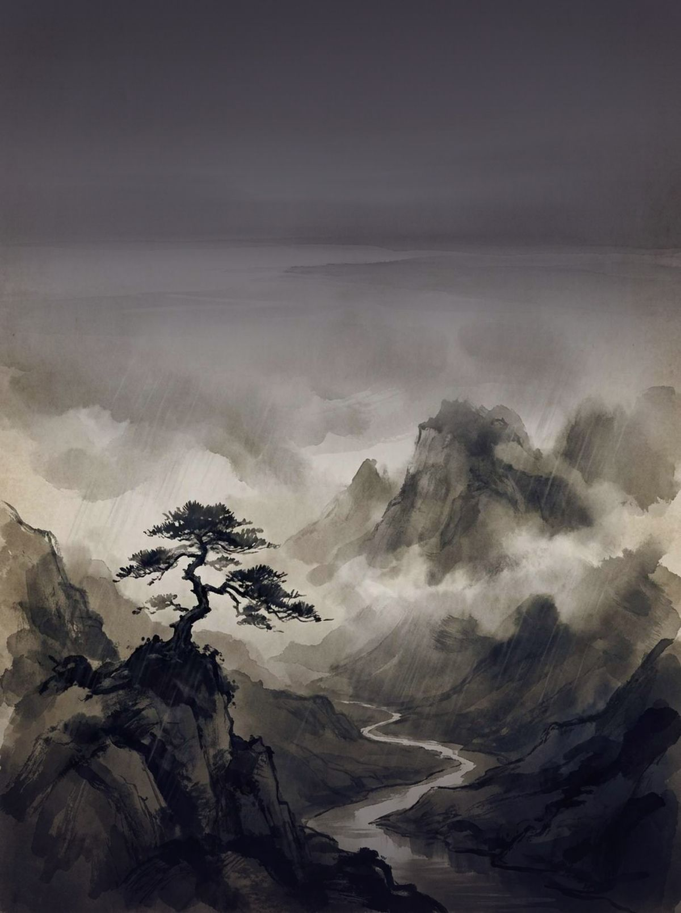
Round 23 · General
story
A general round, drawn from the app’s own bank at its three hardest levels. Warm up here.
36 questions · crossword
Bizzing Bee · Nobody Knows All of These71
Nobody Knows All of Thesestory
The clue is the meaning. The answer is the word.
1
2
3
4
5
6
7
8
9
10
Across
2. A Venetian printer around 1500
4. 'Listen, my children, and you shall hear of the midnight ride of ___.'
7. When a story's ending is left unresolved to make you wait, it is called a what?
9. Jean de La Fontaine
10. Miguel de Cervantes wrote Don Quixote in which language?
Down
1. E.B. White's small hero Stuart Little is what kind of creature?
3. Elias Lonnrot stitched together folk songs into which national epic?
5. When a story jumps back in time to show something that happened earlier
6. A pen name meaning 'two fathoms deep'
8. Aesop's fable collection includes stories that also appear in India's Jataka tales.
of 10
Round 23 · your score
Mark it now, while you still remember which ones you guessed. A guess you got right is not a thing you know.
Bizzing Bee · Nobody Knows All of These72
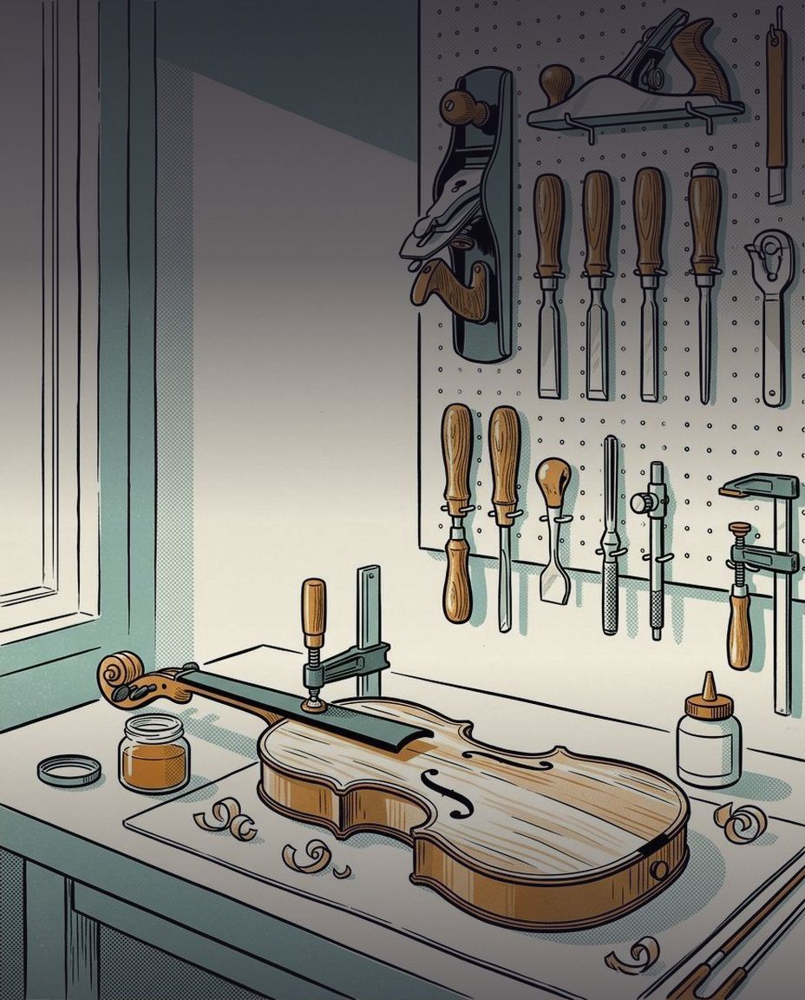
Round 24 · Speciality
Instruments and the People Who Made Them
Half the orchestra is named after somebody, a place, or a noise.
12 questions · multiple choice
Bizzing Bee · Nobody Knows All of These73
Nobody Knows All of TheseInstruments and the People Who Made Them
1. The saxophone is named after Adolphe Sax, who was what nationality?
AGermanBBelgianCFrenchDAustrian
2. The sousaphone is named after a composer famous for what?
ASymphoniesBOperasCWaltzesDMarches
3. Stradivarius violins are named after a maker from which Italian city?
AVeniceBCremonaCNaplesDFlorence
4. The word "piano" is short for what?
APianolaBPianoforteCPianissimoDPianetta
5. The theremin is played how?
AWithout being touched
BWith the feet
CBy striking glass
DBy blowing across strings
6. Which brass instrument’s name is Italian for "large trumpet"?
ACornetBTromboneCEuphoniumDTuba
7. The sitar’s name comes from a Persian word meaning what?
ALong neckBGourd bodyCSweet voiceDThree strings
8. What is a glockenspiel, literally?
AA wood songBA hand drumCA metal boxDA bell play
9. The harmonica is also known by which name, from a common use?
AReed pipeBWind boxCBreath hornDMouth organ
10. The banjo most likely descends from instruments brought from where?
AThe CaribbeanBWest AfricaCPortugalDIreland
11. Which keyboard instrument’s name means "key-board" in its own language?
ACelestaBOrganCSpinetDClavier
12. A "cor anglais" is neither a horn nor English. What is it?
AA bass flute
BA small trumpet
CA wooden clarinet
DA large oboe
of 12
Round 24 · your score
Mark it now, while you still remember which ones you guessed. A guess you got right is not a thing you know.
Bizzing Bee · Nobody Knows All of These74
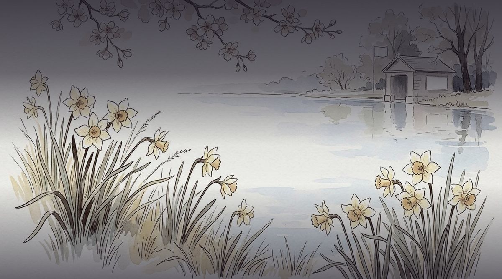
Round 25 · General
bugs
A general round, drawn from the app’s own bank at its three hardest levels. Warm up here.
36 questions · multiple choice
Bizzing Bee · Nobody Knows All of These75
Nobody Knows All of Thesebugs
1. What is this creepy-crawly?
ACaterpillarBSnakeCSlugDWorm
2. The prefix 'antho', as in 'anthophilous' insects, means…?
ASweetBFlowerCColourDBee
3. Which moths answer a bat's hunting calls with rapid clicks of their own?
AClothes mothsBSilk mothsCTiger mothsDAtlas moths
4. A Latin word for the palm of a hand, skin stretched between three toes, and a paddle that folds on the forward stroke converge on which foot type?
ALobateBZygodactylCPalmateDRaptorial
5. Relative to the size of its body, which bird lays the largest egg?
AOstrichBKiwiCSwanDHummingbird
6. American settlers held 'quilting' and 'husking' gatherings; the same word now names which kind of contest?
AA duck raceBA hen nightCA spelling beeDA crow call
7. A millipede is not an insect.
ATrueBFalse
8. Some birds deliberately rub ants through their feathers, a behaviour called…?
AMoultingBAntingCPreeningDCaching
9. A word borrowed from shipbuilding, a ridge missing entirely in the ostrich, and the anchor for the muscles that power a wingbeat converge on which structure?
AKeelBHalluxCCulmenDFurcula
10. Which bird's beak works like a pair of tweezers for picking insects off leaves?
ADuckBWarblerCPelicanDEagle
Bizzing Bee · Nobody Knows All of These76
Nobody Knows All of Thesebugs
11. The royal buildings where hawks were kept while moulting gave which name to narrow London back streets?
AMewsBRowsCWyndsDCloses
12. A cave-nesting South American bird that clicks to fly in the dark, whose oil-rich chicks were once boiled for lamp fuel, is the…?
AOilbirdBFrogmouthCNightjarDPotoo
13. How can a fly walk upside down on a ceiling?
APowerful magnets
BSuction cups only
CSticky pads and tiny claws on its feet
DGlue it squirts
14. The 'gena' and 'clypeus' are parts of an insect's…?
AAbdomenBHeadCLegDWing
15. Why can't an ostrich fly, even though it has wings?
AIt has no legs
BIt has no feathers
CIt cannot see
DIt is heavy with small wings
16. An African grassland bird that walks far more than it flies, a male reaching about 20 kg, and a display that inflates a great white throat converge on which species?
AKori bustardBMute swanCAndean condorDAlbatross
17. A frontier artist who painted birds life-size in a 'double elephant folio' lends his name to which American society?
ASmithsonianBCornellCAudubonDSierra
18. What is the collective noun for a group of ravens?
AColonyBUnkindnessCPodDKaleidoscope
19. A V-2 rocket launched from White Sands in 1947 carried which creatures to become the first animals in space?
ADogsBFruit fliesCMiceDMonkeys
Bizzing Bee · Nobody Knows All of These77
Nobody Knows All of Thesebugs
20. A baby pigeon is called a…?
ACygnetBPoultCSquabDEyas
21. Which beetle can spray a boiling-hot, foul chemical to defend itself?
ALadybird
BBombardier beetle
CDung beetle
DStag beetle
22. What do we call the flap of skin or feathers over a bird's ear opening?
ACrestBEar covertCCereDWattle
23. A World War II aircraft built largely of plywood and nicknamed the 'Wooden Wonder' was named after which insect?
AHornetBMosquitoCCricketDBeetle
24. Wing scales shaped like microscopic Christmas trees, scattering light rather than holding pigment, give which butterfly its flash of blue?
AMonarchBSwallowtailCBlue morphoDGlasswing
25. Which bird, now extinct, was a large flightless pigeon relative from Mauritius?
AKiwiBDodoCEmuDKakapo
26. The 'gallus' root, seen in 'gallinaceous', refers to which farm bird?
ATurkeyBDuckCChickenDGoose
27. Which seabird is famous for chasing other birds to make them drop their catch?
ASkuaBHeronCPuffinDSwan
28. A queen honeybee mates during a single flight period and stores sperm for years.
ATrueBFalse
29. The root 'migr' in 'migration' means…?
ATo gather
BTo return
CTo move from place to place
DTo fly high
Bizzing Bee · Nobody Knows All of These78
Nobody Knows All of Thesebugs
30. The 'ova' in 'oval' and 'ovary' means…?
AShellBRoundCSmallDEgg
31. True or False: Some cicadas stay underground for 17 years before coming out.
ATrueBFalse
32. Bees, wasps and ants form the order Hymenoptera; the root 'hymen' means…?
AStingBHoneyCSixDMembrane
33. Which of these insects does NOT sting?
AHornetBButterflyCWaspDBee
34. A Paris market of second-hand goods, known as the 'marche aux puces', gave English which phrase?
AFlea marketBBird fairCBee's kneesDFly by night
35. How many wings does a dragonfly have?
AFourBSixCEightDTwo
36. The word 'apterous', used for some insects, is the opposite of…?
AHornedBWingedCLeggedDEyed
of 36
Round 25 · your score
Mark it now, while you still remember which ones you guessed. A guess you got right is not a thing you know.
Bizzing Bee · Nobody Knows All of These79
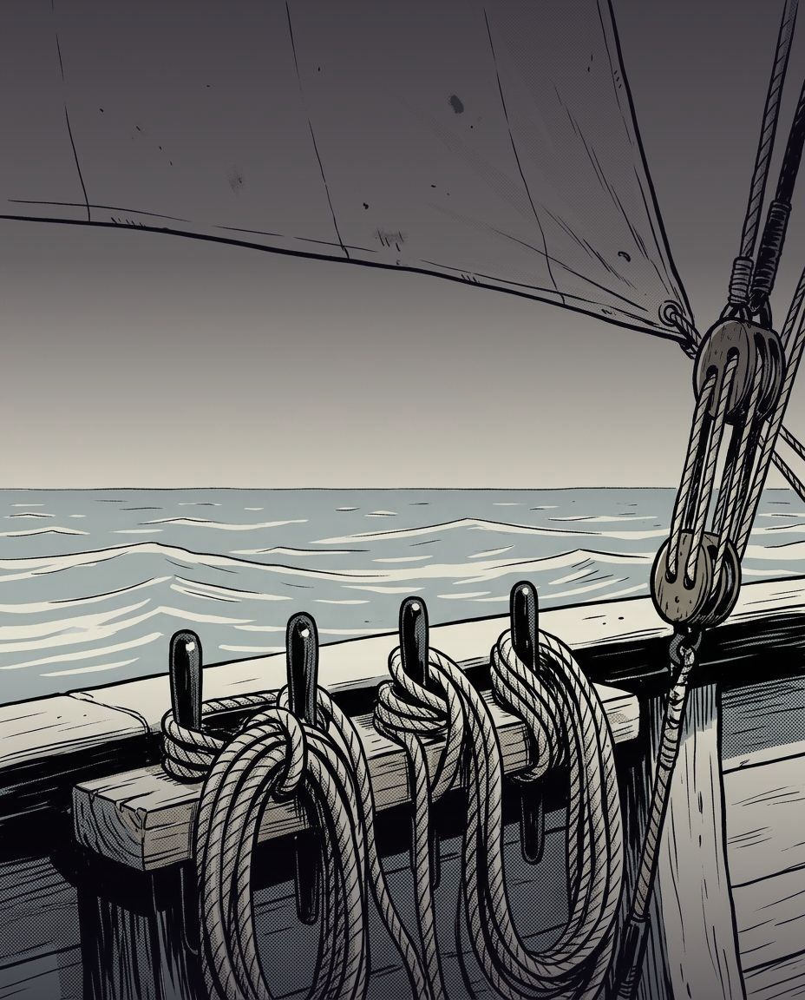
Round 26 · Speciality
Knots, Sails and the Sea
The sea gave English more idioms than any other trade. Find the words hidden in the square; every one of them came off a ship.
12 questions · letter square
Bizzing Bee · Nobody Knows All of These80
Nobody Knows All of TheseKnots, Sails and the Sea
Answer each clue, then find the answer in the square.
1. The lowest sail on a mast — also a standard of comparison
2. To reduce the area of a sail in strong wind
3. The right-hand side of a ship, looking forward
4. The left-hand side of a ship, looking forward
5. A ship’s kitchen
6. The rear of a vessel
7. The front of a vessel
8. A rope’s free end, or a person with no responsibilities
9. To lower a flag or sail suddenly
10. The depth of water a vessel needs to float
11. Wreckage found floating on the sea
12. Goods thrown overboard deliberately and washed ashore
of 10
Round 26 · your score
Mark it now, while you still remember which ones you guessed. A guess you got right is not a thing you know.
Bizzing Bee · Nobody Knows All of These81
Round 27 · General
words
A general round, drawn from the app’s own bank at its three hardest levels. Warm up here.
36 questions · written answers
Bizzing Bee · Nobody Knows All of These82
Nobody Knows All of Thesewords
Write your answers. The key is at the back.
1. A humorist's joke dust jacket of 1907, an invented young lady pictured shouting praise, and the puff of praise on every book cover point to which word?
2. A phrase so overused it has lost its power, like 'as old as time,' is a...?
3. The root 'dent' in 'dentist' means...?
4. A 1604 book called A Table Alphabeticall, about 2,500 hard words explained for 'ladies and gentlewomen', and English's earliest such work point to whose dictionary?
5. The Greek root 'tele' in 'telephone' means...?
6. The '-holic' in 'chocoholic' and the '-gate' in political scandals are both examples of...?
7. 'Tarantula' is named after Taranto, a town in Italy known for...?
8. The root 'equi' in 'equilateral' means...?
9. A very small change that copies a whole shape is 'fractal.' The root 'frac' means...?
10. The root 'ambul' in 'ambulance' means...?
11. The prefix 'peri-' in 'perimeter' means...?
12. The catch in the middle of 'uh-oh', a consonant made by snapping the vocal folds shut, and the sound many accents use instead of the T in 'butter' point to which term?
Bizzing Bee · Nobody Knows All of These83
Nobody Knows All of Thesewords
13. Two centuries ago, 'terrific' meant...?
14. A 17th-century London linen draper, a cheap woollen cloth sold under his name, and the lace mat under a cake point to which word?
15. What does “nostalgia” mean?
16. Wool dyed a deep red, the Latin word for 'little worm,' and a royal robe converge on which colour word?
17. Which collective noun traditionally belongs to a group of apes?
18. The vowel sound in 'coin' or 'loud', which glides from one position to another, is a...?
19. The root 'ver' in 'verify' means...?
20. What is a word like 'flock' or 'team,' naming a group as one unit, called?
21. The root 'micro' in 'microscope' means...?
22. To 'apprise' someone means to...?
23. The word 'museum' originally meant a place dedicated to...?
24. What was the '&' symbol, the ampersand, once treated as?
Bizzing Bee · Nobody Knows All of These84
Nobody Knows All of Thesewords
25. A 'laconic' reply is one that is...?
26. The single difference between 'pat' and 'bat', a unit smaller than a syllable, and what linguists call a minimal pair converge on which term?
27. The 'gl-' shared by glitter, gleam, glow and glisten is an example of a...?
28. A Latin word for hearth, an optical point where rays converge, and the centre of attention all point to which word?
29. The Latin roots of 'trivia' literally mean...?
30. Which word means to draw out a response?
31. A Hungarian village called Kocs, a 15th-century carriage design, and the person who trains a football team converge on which word?
32. “perfumers” (a person who makes (and sells) perfumes) came to English from which language?
33. The word 'marathon' comes from a long run carrying news of a...?
34. The word 'bookkeeper' has three sets of double letters in a row.
35. “agriculture” (a large-scale farming enterprise) came to English from which language?
36. What does “allophone” mean?
of 36
Round 27 · your score
Mark it now, while you still remember which ones you guessed. A guess you got right is not a thing you know.
Bizzing Bee · Nobody Knows All of These85
Round 28 · Speciality
Deserts, Peaks and Deeps
The extremes of the map — the driest, the highest, the deepest and the coldest, and what they are actually called.
12 questions · multiple choice
Bizzing Bee · Nobody Knows All of These86
Nobody Knows All of TheseDeserts, Peaks and Deeps
1. Which is the driest non-polar desert on Earth?
AThe NamibBThe GobiCThe AtacamaDThe Sahara
2. What is the largest desert in the world, by the proper definition?
AThe ArabianBAntarcticaCThe SaharaDThe Gobi
3. Which is the deepest known point in any ocean?
AThe Tonga Trench
BThe Challenger Deep
CThe Java Trench
DThe Puerto Rico Trench
4. Measured from its own base on the sea floor, which mountain is the tallest?
ADenaliBEverestCMauna KeaDAconcagua
5. Which peak is the farthest point from the centre of the Earth?
AKilimanjaroBEverestCChimborazoDElbrus
6. What is the lowest exposed land on Earth?
ADeath Valley
BThe Turfan Depression
CThe Qattara Depression
DThe shore of the Dead Sea
7. The Gobi Desert lies mainly in which two countries?
AChina and Kyrgyzstan
BChina and Kazakhstan
CMongolia and Russia
DMongolia and China
8. Which desert is famous for fog that supports life where rain does not fall?
AThe KalahariBThe SonoranCThe TharDThe Namib
9. What is the coldest permanently inhabited place on Earth generally said to be?
3. Which method regenerates whole plants from small pieces of tissue in sterile jars?
Acoppicing
Bgrafting
Clayering
Dmicropropagation
4. Acacias in Africa can summon which insects to attack browsing animals?
AmothsBbeesCantsDbeetles
5. Complete the saying: “life is not a bed of ____”
AChildBGateCMinuteDRoses
6. Gymnosperms bear their seeds on cones rather than inside fruits.
AFalseBTrue
7. Fungal threads branching into bushy tufts inside a root cell, a partnership traceable back over 400 million years, and a name meaning little tree describe what?
Aa lichen
Barbuscular mycorrhiza
Ca root nodule
Dectomycorrhiza
8. What is the name for the leaf mosaic arrangement that minimises shading between a plant’s own leaves?
Aan umbelBa rosetteCa leaf mosaicDa whorl
9. Which blue dye, long extracted from a plant, gives denim its traditional colour?
AmadderBwoad onlyCindigoDsaffron
10. A short-tongued bumblebee at a long-tubed flower, a hole chewed near the base, and a reward taken with no pollen moved describe what?
Aherbivory
Bbuzz pollination
Cnectar robbing
Dmutualism
Bizzing Bee · Nobody Knows All of These89
Nobody Knows All of Theseplants
11. What do we call the chemical warfare where one plant releases toxins to stop rivals?
12. A honeybee's waggle dance tells other bees what?
AHow to fly
BWhere flowers are
CWho is queen
DWhen to sleep
13. The word "flora" for regional plant life comes from the name of a Roman...?
Agod of war
Bgoddess of the sea
Cgod of the sky
Dgoddess of flowers
14. A gardener pinching out a tip to get a bushier plant, side buds held in check by the leader, and a hormone flowing downward describe what?
Agravitropism
Bcrown shyness
Cetiolation
Dapical dominance
15. Every fig species is pollinated by its own particular species of wasp.
ATrueBFalse
16. Which vine, shown at the 1876 Philadelphia exposition and later planted to stop erosion, became known as the vine that ate the South?
AivyBbindweedCkudzuDhoneysuckle
17. A West African berry contains miraculin, a protein that briefly makes sour foods taste...?
AbitterBsaltyCspicyDsweet
18. The word "cabbage" traces back to a Latin word meaning...?
AgreenBgardenCleafDhead
19. Why do flowers have bright colors and sweet scents?
ATo attract pollinators
BTo grow faster
CTo stay cool
DTo scare rain away
20. Which term names the whole above-ground leafy structure of a tree?
Athe cambiumBthe taprootCthe rhizomeDthe crown
Bizzing Bee · Nobody Knows All of These90
Nobody Knows All of Theseplants
21. Which rootstock choice mainly determines a modern orchard apple tree’s final...?
AflavourBsizeCcolourDseed count
22. Mistletoe tapping an apple branch, leaves still green and working, and a prefix meaning half describe which kind of plant?
Aa hemiparasiteBan epiphyteCa saprophyteDa holoparasite
23. What do we call all of a region’s plant life taken together?
AaromaBfloraCfaunaDstrata
24. Which seeds often spread after animals eat the fruit?
ABerriesBDandelionsCCoconutsDMaple keys
25. The word "greenhouse gas" borrows its name from a glasshouse because both...?
Ahold waterBgrow plantsCblock lightDtrap heat
26. The Greek root "hydor" links "hydrophyte" and "hydrant" to...?
AfireBwaterCearthDair
27. Which plant grows the biggest seed in the world?
AOakBPineCAppleDCoco de mer
28. Listen to Bizzy's riddle!
ABamboo
BVenus flytrap
CSunflower
DMimosa, the sensitive plant
29. The gas ethylene helps fruit ripen and can spread from fruit to fruit.
ATrueBFalse
30. What do we call the waxy, waterproof layer coating many leaves?
AcortexBcotyledonCcuticleDcambium
31. The root "sylva" in "silviculture" and "Pennsylvania" means...?
AmountainBriverCforest or woodDfield
Bizzing Bee · Nobody Knows All of These91
Nobody Knows All of Theseplants
32. Which shrub genus is named for Joseph Banks, the botanist aboard the Endeavour?
ABanksiaBBegoniaCBignoniaDBauhinia
33. A fatty parcel glued to a seed, a trail of ants hauling it underground, and a Greek word for ant name which dispersal method?
AhydrochoryBanemochoryCmyrmecochoryDbarochory
34. What do we call moving pollen from one flower to another?
AMigrationBEvaporationCPollinationDGermination
35. Which staple crop, first domesticated in the Andes, comes in thousands of varieties?
AbananaBriceCwheatDpotato
36. Sixty million hectares of Australian cactus, a caterpillar imported from Argentina, and one of history’s great biological-control victories involve which agent?
Aa beetleBa fungusCa goatDa moth
of 36
Round 29 · your score
Mark it now, while you still remember which ones you guessed. A guess you got right is not a thing you know.
Bizzing Bee · Nobody Knows All of These92
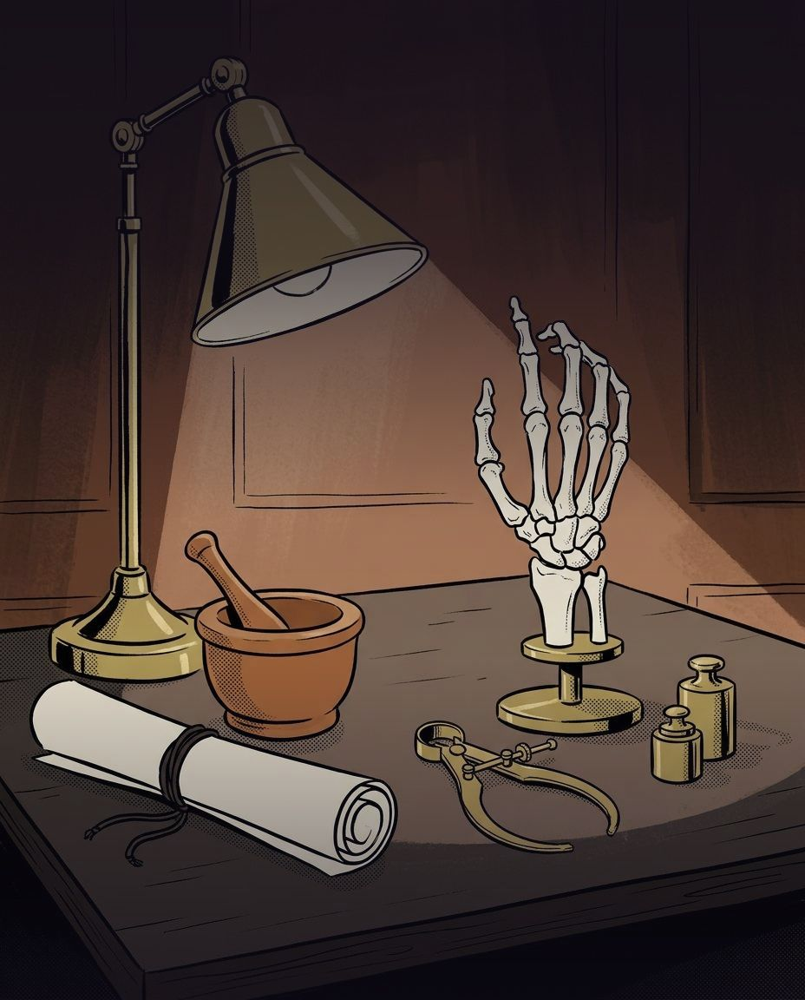
Round 30 · Speciality
The Body in Latin and Greek
Medicine kept its old vocabulary, which means a good speller can very often work out what a word means without ever having been taught it.
14 questions · written answers
Bizzing Bee · Nobody Knows All of These93
Nobody Knows All of TheseThe Body in Latin and Greek
Write your answers. The key is at the back.
1. What does the prefix "cardi-" refer to?
2. What does "derm-" refer to?
3. What does the suffix "-itis" mean?
4. What does "hepat-" refer to?
5. What does the root "oss-" or "osteo-" refer to?
6. What does "-ectomy" mean at the end of a word?
7. What does "neur-" refer to?
8. What does "pulmon-" refer to?
9. What does "-algia" mean?
10. What does "gastro-" refer to?
11. What does "ren-" or "nephro-" refer to?
12. What does "-osis" usually indicate?
13. What does "ocul-" or "ophthalm-" refer to?
Bizzing Bee · Nobody Knows All of These94
Nobody Knows All of TheseThe Body in Latin and Greek
14. What does "my-" or "myo-" refer to?
of 14
Round 30 · your score
Mark it now, while you still remember which ones you guessed. A guess you got right is not a thing you know.
Bizzing Bee · Nobody Knows All of These95
Round 31 · General
numbers
A general round, drawn from the app’s own bank at its three hardest levels. Warm up here.
36 questions · letter square
Bizzing Bee · Nobody Knows All of These96
Nobody Knows All of Thesenumbers
Answer each clue, then find the answer in the square.
18. The study of bells and bell-ringing is known as…?
AChimologyBCampanologyCTintinnologyDCarillonics
19. How does an echo happen?
AAir disappears
BLight reflects
CSound bounces off a surface
DSound speeds up
Bizzing Bee · Nobody Knows All of These102
Nobody Knows All of Thesemusic
20. What is a 'busker'?
AA backstage guard
BA ticket collector
CA musician who performs on the street for tips
DA drum repairer
21. What is the lowest male singing voice called?
AAltoBBassCTenorDSoprano
22. In film and opera music, a 'leitmotif' is…?
AA song sung offstage
BThe final chord of a scene
CAn orchestra's warm-up scale
DA theme that returns with a certain character or idea
23. What does the saying “with bells on” mean?
APursuing a mistaken idea or the wrong person
BOverwhelmed with too much work
CLuck imagined as a woman who helps or abandons you
DEagerly and with great enthusiasm
24. The Doppler effect explains why a passing ambulance siren seems to…?
AChange key upward
BGet louder forever
CEcho twice
DDrop in pitch as it goes by
25. Six symphonic poems about a homeland, the opening of Prague's National Theatre, and total deafness in his last years describe which composer?
AZoltán Kodály
BAntonín Dvořák
CBedřich Smetana
DLeoš Janáček
26. Twenty-four fiendish violin caprices, a fine second career on the guitar, and a legend about playing on a single string point to whom?
ANiccolò Paganini
BAntonio Lolli
CGiovanni Viotti
DPietro Locatelli
27. Which giant instrument is built into churches, called the king of instruments?
AHarpBTubaCOrganDPiano
Bizzing Bee · Nobody Knows All of These103
Nobody Knows All of Thesemusic
28. The didgeridoo is played using a trick called circular breathing.
ATrueBFalse
29. Healthy young humans can hear frequencies in roughly what range?
A20 to 20,000 hertz
B1 to 100 hertz
C500 to 5 million hertz
DAny frequency, if loud enough
30. Rapping is speaking rhyming words in rhythm over a musical beat.
AFalseBTrue
31. Which music word contains no A, E, I, O, or U—getting by with only a Y?
ATempoBRhythmCChorusDMelody
32. Moscow's world-famous Bolshoi Ballet takes its name from a Russian word meaning…?
ABig or grandBRoyalCBeautifulDGolden
33. Which of these instruments is NOT played with a bow?
AThe double bass
BThe harp
CThe cello
DThe violin
34. A musician who plays a tower of bells from a keyboard of heavy wooden batons is called a…?
ATintinnistBCampanistCCarillonneurDBellwright
35. About how fast does sound travel through air?
AAround 1 million kilometers per hour
BAround 12 kilometers per hour
CAround 120 kilometers per hour
DAround 1,200 kilometers per hour
36. A singer whose recordings for Indian cinema spanned some seven decades and dozens of languages was who?
AM. S. Subbulakshmi
BShreya Ghoshal
CLata Mangeshkar
DAsha Bhosle
of 36
Round 33 · your score
Mark it now, while you still remember which ones you guessed. A guess you got right is not a thing you know.
Bizzing Bee · Nobody Knows All of These104
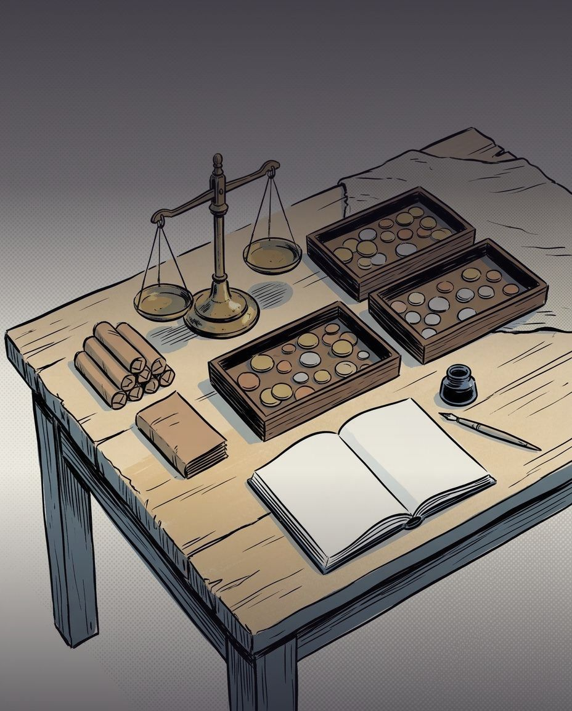
Round 34 · Speciality
The Money of the World
Currencies are mostly named after weights, kings, or the word for "round".
12 questions · written answers
Bizzing Bee · Nobody Knows All of These105
Nobody Knows All of TheseThe Money of the World
Write your answers. The key is at the back.
1. What is the currency of Japan?
2. What is the currency of Poland?
3. What is the currency of Turkey?
4. What is the currency of South Africa?
5. What is the currency of Thailand?
6. What is the currency of Sweden?
7. What is the currency of India?
8. What is the currency of Israel?
9. What is the currency of Vietnam?
10. What is the currency of Peru?
11. What is the currency of Ethiopia?
12. What is the currency of Ghana?
of 12
Round 34 · your score
Mark it now, while you still remember which ones you guessed. A guess you got right is not a thing you know.
Bizzing Bee · Nobody Knows All of These106
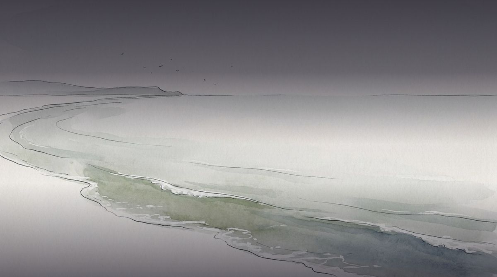
Round 35 · General
ocean
A general round, drawn from the app’s own bank at its three hardest levels. Warm up here.
36 questions · written answers
Bizzing Bee · Nobody Knows All of These107
Nobody Knows All of Theseocean
Write the answer in the box. The key is at the back.
1. The sinking of cold, salty water helps drive a slow global 'conveyor belt' of ocean currents. What is this circulation called?
2. The suffix '-logy', as in 'biology' and 'oceanology', means the...?
3. A jelly made from fish swim bladders, centuries of use in clearing cloudy beer, and the reason some beers are not vegan converge on which substance?
4. The class name uniting sharks, rays, and chimaeras is built from roots meaning 'cartilage' plus...?
5. A 'regatta' is a...?
6. Nearly all of the ocean floor has been mapped in the same fine detail as the surface of Mars.
7. Baleen whales are also called 'mysticetes', a name hinting they are 'moustached...'?
8. Why is a sponge from the sea good for washing?
9. The word 'anchor' traces back to a Greek word meaning...?
Bizzing Bee · Nobody Knows All of These108
Nobody Knows All of Theseocean
10. How does an anglerfish attract prey in the pitch-black deep?
11. A Norwegian tidal current off Lofoten, an Edgar Allan Poe tale about a descent into it, and the word Jules Verne borrowed for a giant vortex converge on which whirlpool?
12. Orkney and Shetland folklore, seals that shed their skins to walk as humans, and a hidden sealskin that traps a bride converge on which creature?
13. A 'fjord' is a deep, narrow sea inlet that was carved out by...?
14. The term 'thalassocracy' describes a state whose power rests on its...?
15. Which navigational instrument measures the angle between a star and the horizon?
16. The Portuguese man o' war is a 'siphonophore'; the root 'siphon' refers to a...?
17. How does an albatross fly thousands of kilometres while barely flapping its wings?
18. The dark seaweed sheet wrapped around sushi rolls is called...?
Bizzing Bee · Nobody Knows All of These109
Nobody Knows All of Theseocean
19. Something 'littoral' has to do with the...?
20. A ship's 'tonnage' originally measured how many of what it could carry?
21. The 'abyssopelagic' zone, from roots meaning 'bottomless open sea', spans roughly which depth?
22. An 'archipelago' is a...?
23. Which animal makes the loudest sound of any creature on Earth?
24. To 'careen' a ship meant to...?
25. A comb jelly is a 'ctenophore', a name meaning '...-bearer'?
26. A unit equal to a million cubic metres of water per second, a scale for measuring whole currents, and a Norwegian-American oceanographer converge on which unit?
27. A remora rides on a shark, eating scraps without harming it. What is this one-sided relationship called?
Bizzing Bee · Nobody Knows All of These110
Nobody Knows All of Theseocean
28. What does the saying “go belly up” mean?
29. Why must whales keep returning to the surface?
30. Between the shallow shelf and the deep abyss, the seabed drops away down the continental...?
31. Sailors call the calm belt near the equator, where winds often die, the...?
32. The word 'plankton' comes from a root meaning...?
33. Which cooler ocean pattern is the opposite of El Nino, bringing colder eastern Pacific water?
34. What does the saying “a shot across the bow” mean?
35. How can you tell a dugong from its cousin the manatee?
36. How do many fish stay at the right depth without sinking?
of 36
Round 35 · your score
Mark it now, while you still remember which ones you guessed. A guess you got right is not a thing you know.
Bizzing Bee · Nobody Knows All of These111
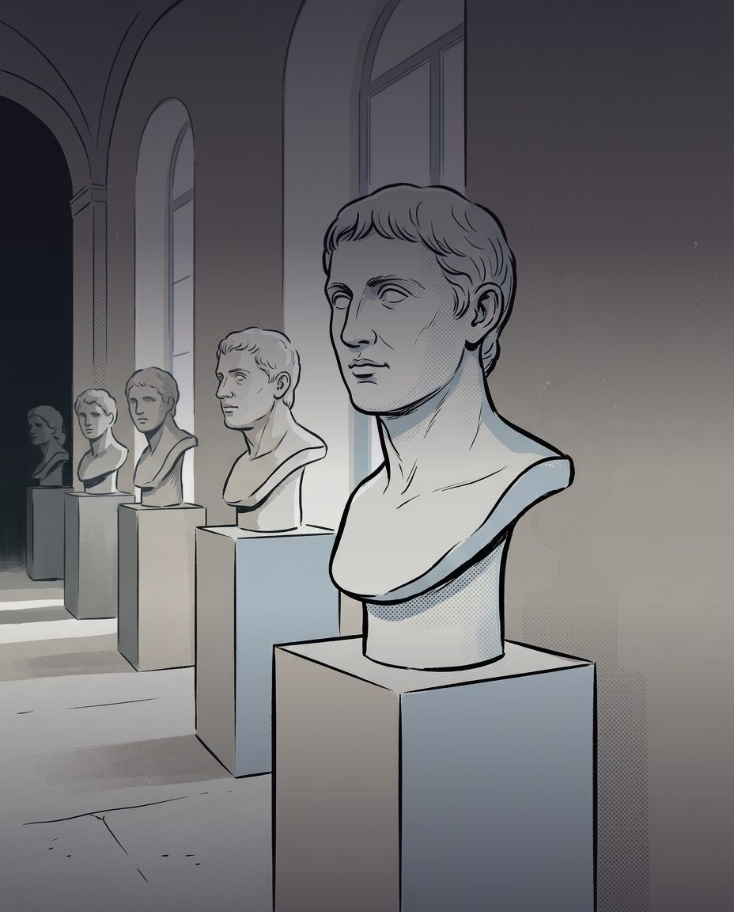
Round 36 · Speciality
The Roman Emperors
Some of them for decades, some of them for weeks. In one year there were four.
12 questions · multiple choice
Bizzing Bee · Nobody Knows All of These112
Nobody Knows All of TheseThe Roman Emperors
1. Who was the first Roman emperor?
AAugustusBNeroCTiberiusDJulius Caesar
2. Which emperor built a wall across northern Britain?
ATrajan
BHadrian
CSeptimius Severus
DClaudius
3. Which emperor wrote the Meditations, a book of Stoic philosophy?
AHadrian
BAntoninus Pius
CVespasian
DMarcus Aurelius
4. Under which emperor did the Roman Empire reach its greatest extent?
ATrajanBHadrianCAugustusDDiocletian
5. Which emperor made Christianity legal across the empire?
ANeroBTheodosiusCConstantineDJulian
6. Which emperor divided the empire into four parts to be ruled together?
AConstantineBValensCHonoriusDDiocletian
7. Which emperor is said to have made his horse a consul?
ANeroBCommodusCElagabalusDCaligula
8. Which emperor began the Colosseum?
ATitusBNeroCDomitianDVespasian
9. What was the "Year of the Four Emperors"?
A235 ADB193 ADC96 ADD69 AD
10. Which emperor was the last to rule a united empire?
AJustinian
BTheodosius I
CRomulus Augustulus
DConstantine
11. The word "palace" comes from which Roman hill?
12. Which emperor’s name became the German and Russian words for emperor?
AConstantineBJustinianCAugustusDCaesar
of 12
Round 36 · your score
Mark it now, while you still remember which ones you guessed. A guess you got right is not a thing you know.
Bizzing Bee · Nobody Knows All of These113
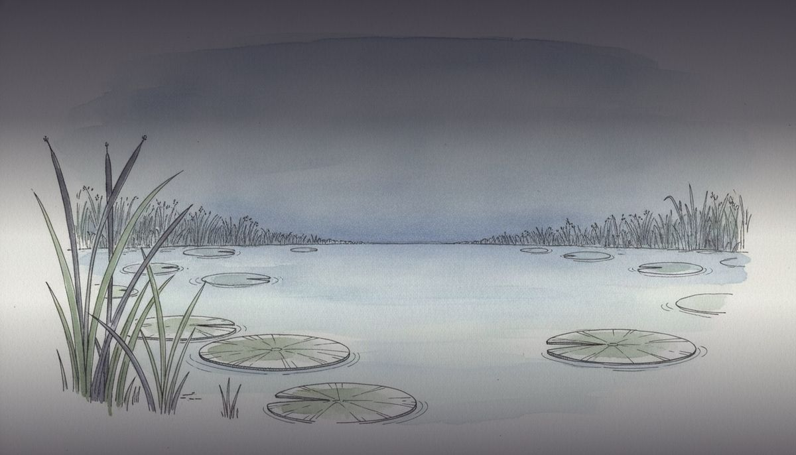
Round 37 · General
science
A general round, drawn from the app’s own bank at its three hardest levels. Warm up here.
36 questions · multiple choice
Bizzing Bee · Nobody Knows All of These114
Nobody Knows All of Thesescience
1. Why does popcorn pop?
ATiny springs uncoil
BThe salt explodes
CSteam builds up inside the kernel
DAir leaks through cracks
2. Which unit measures the frequency of a wave?
AThe newtonBThe jouleCThe ohmDThe hertz
3. Glass is a better conductor of heat than metal.
AFalseBTrue
4. What is the term for the angle above which light undergoes total internal reflection?
AThe critical angle
BThe angle of incidence
CThe refraction angle
DThe Brewster angle
5. Which scientist discovered that white light is made of many colours?
AAlbert Einstein
BNikola Tesla
CMarie Curie
DIsaac Newton
6. Which of these is NOT a state of matter?
ASolidBShadowCGasDLiquid
7. Tobacco leaves with mottled patterns, a porcelain filter that held back every bacterium yet still passed the disease, and a Latin word for poison converge on the discovery of what?
AVirusesBPrionsCBacteriaDAntibodies
8. What is the study of heredity and genes called?
AAnatomyBZoologyCEcologyDGenetics
9. A 1925 doctoral thesis once called the most brilliant in astronomy, and the then-shocking claim that stars are overwhelmingly hydrogen, converge on whom?
AAnnie Jump Cannon
BHenrietta Leavitt
CCecilia Payne-Gaposchkin
DVera Rubin
Bizzing Bee · Nobody Knows All of These115
Nobody Knows All of Thesescience
10. Which of these is NOT a source of energy?
AWindBCoalCThe SunDA shadow
11. The 'osteo' in 'osteology' and 'osteoporosis' refers to...?
AMuscleBBloodCSkinDBone
12. What is the name of the pigment that makes human skin, hair, and eyes darker?
AKeratinBMelaninCHaemoglobinDChlorophyll
13. The prefix 'homeo' in 'homeostasis' means...?
AHuman
BBody
CSimilar or same
DWhole
14. An 1887 interferometer floating on a bath of mercury, the hunt for a headwind of 'ether', and a famous null result converge on which experiment?
AThe Stern-Gerlach experiment
BThe Michelson-Morley experiment
CThe Cavendish experiment
DThe Fizeau experiment
15. Which two ingredients make a water molecule?
AHelium and carbon
BHydrogen and oxygen
CSalt and sugar
DNitrogen and iron
16. Which scientist is famous for the theory of evolution by natural selection?
AGalileo Galilei
BLouis Pasteur
CIsaac Newton
DCharles Darwin
17. Which blood cells help the blood to clot when you get a cut?
ARed blood cells
BPlatelets
CWhite blood cells
DPlasma cells
18. What do we call the change of a gas directly into a solid, without becoming liquid?
AFreezingBDepositionCBoilingDMelting
19. Materials that let electricity flow through them are called what?
AMagnetsBPrismsCInsulatorsDConductors
Bizzing Bee · Nobody Knows All of These116
Nobody Knows All of Thesescience
20. What is the purpose of a control in an experiment?
ATo heat the sample
BTo give something unchanged to compare against
CTo make the test faster
DTo record the data
21. Nuclear fusion is the process that powers the Sun.
ATrueBFalse
22. The particle class 'hadron' takes its name from a Greek word meaning...?
ABound togetherBStrongly heldCThick or bulkyDHeavy core
23. What forms when iron is left in water and air for a long time?
AChalkBGoldCGlassDRust
24. An unpublished Dutch manuscript of 1621, a constant ratio of two sines, and a spoon that looks broken in a glass of water converge on whose law?
AWillebrord Snell
BRene Descartes
CChristiaan Huygens
DIbn Sahl
25. A scientist who studies the structure and evolution of the universe as a whole is a...?
28. A gas Priestley made from ashes, the second most common element in the crust, and computer chips converge on which element?
AGermaniumBSiliconCAluminiumDCarbon
Bizzing Bee · Nobody Knows All of These117
Nobody Knows All of Thesescience
29. A word for the study of the origin and structure of the universe is...?
AChronologyBCosmologyCCosmetologyDCryology
30. A Greek word meaning 'hidden', a gas found in leftover liquid air in 1898, and element 36 converge on which noble gas?
AArgonBXenonCRadonDKrypton
31. Sticky tape peeled across graphite, Friday-evening side projects in Manchester, and a sheet one atom thick converge on which material?
AGrapheneBSiliconeCKevlarDAerogel
32. The root 'audi' in 'audible' and 'auditory' means...?
ATo speakBTo moveCTo hearDTo see
33. A catalyst changes the products of a chemical reaction.
AFalseBTrue
34. The word part 'cryo' in 'cryogenics' means...?
APressureBHiddenCCrystalDIcy cold
35. What do we call animals with a backbone?
AMammalsBPredatorsCVertebratesDInvertebrates
36. What is the name for a reaction that releases heat energy to the surroundings?
ACatalyticBIsothermalCExothermicDEndothermic
of 36
Round 37 · your score
Mark it now, while you still remember which ones you guessed. A guess you got right is not a thing you know.
Bizzing Bee · Nobody Knows All of These118
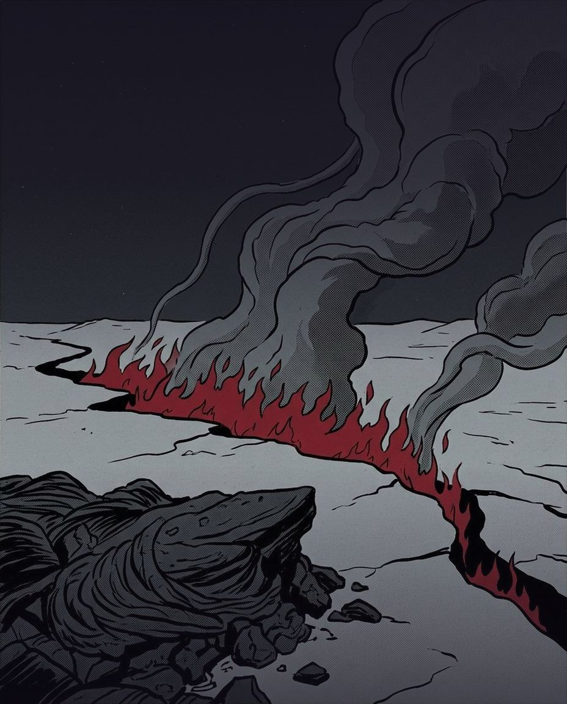
Round 38 · Speciality
Volcanoes, Faults and Deep Time
Geology has the best vocabulary of any science, and most of it is Latin for something obvious.
12 questions · multiple choice
Bizzing Bee · Nobody Knows All of These119
Nobody Knows All of TheseVolcanoes, Faults and Deep Time
1. What is molten rock called while it is still underground?
APumiceBMagmaCTephraDLava
2. The 1883 eruption of Krakatoa was heard how far away?
AAbout 500 kmBAbout 4,800 kmCAbout 200 kmDAbout 1,200 km
3. Which volcano destroyed Pompeii?
AVesuviusBVulcanoCEtnaDStromboli
4. What is the hardest mineral on the Mohs scale?
AQuartzBTopazCDiamondDCorundum
5. What is the ring of volcanoes and faults around the Pacific called?
AThe Pacific Arc
BThe Ring of Fire
CThe Andesite Line
DThe Mid-Ocean Belt
6. Which rock forms from cooled lava that trapped gas, and floats?
ABasaltBGraniteCObsidianDPumice
7. What does the word "caldera" mean?
AA mouthBA craterCA cauldronDA pit
8. Which scale measures earthquake energy release, replacing the Richter scale for large quakes?
AThe Beaufort scale
BThe Mercalli scale
CThe Rossi-Forel scale
DThe moment magnitude scale
9. What is the boundary where two plates slide past each other called?
AA subduction zone
BA hotspot
CA rift valley
DA transform fault
10. What is obsidian?
AFossilised resin
BCompressed ash
CA metamorphic rock
DVolcanic glass
11. Which Icelandic word for a glacial flood caused by a volcano has entered English?
AJokulhlaupBFjordCGeyserDTundra
12. What is a "hotspot" volcano, such as Hawaii, sitting on?
AA rift
BA subducting slab
CA plate boundary
DA plume of rising mantle
Bizzing Bee · Nobody Knows All of These120
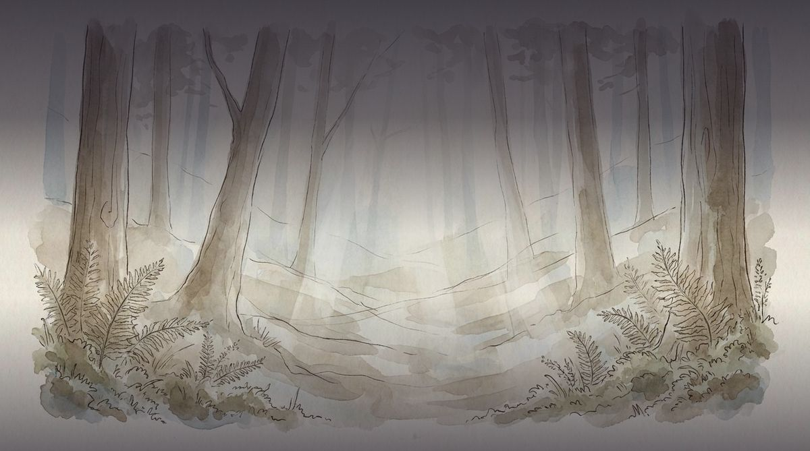
Round 39 · General
animals
A general round, drawn from the app’s own bank at its three hardest levels. Warm up here.
36 questions · crossword
Bizzing Bee · Nobody Knows All of These121
Nobody Knows All of Theseanimals
The clue is the meaning. The answer is the word.
1
2
3
4
5
6
7
8
9
Across
1. The Canary Islands were named after the little canary bird.
4. Much of the white sand on a tropical beach has passed through which animal?
6. What is the striking name for a group of ravens?
7. Which insect has the fastest self-powered strike of any animal
8. A fish filmed 8,000 metres down
9. The word 'gastropod', the group that includes snails, means what?
Down
2. The butterfly-and-moth order 'Lepidoptera' has a name meaning what?
3. In the scientific name Panthera leo, what does the first word 'Panthera' represent?
5. Which sea creature's tadpole-like larva reveals it as a close relative of animals…
7. Seahorses and pipefish are the only animals in which the father becomes pregnant.
of 10
Round 39 · your score
Mark it now, while you still remember which ones you guessed. A guess you got right is not a thing you know.
Bizzing Bee · Nobody Knows All of These122
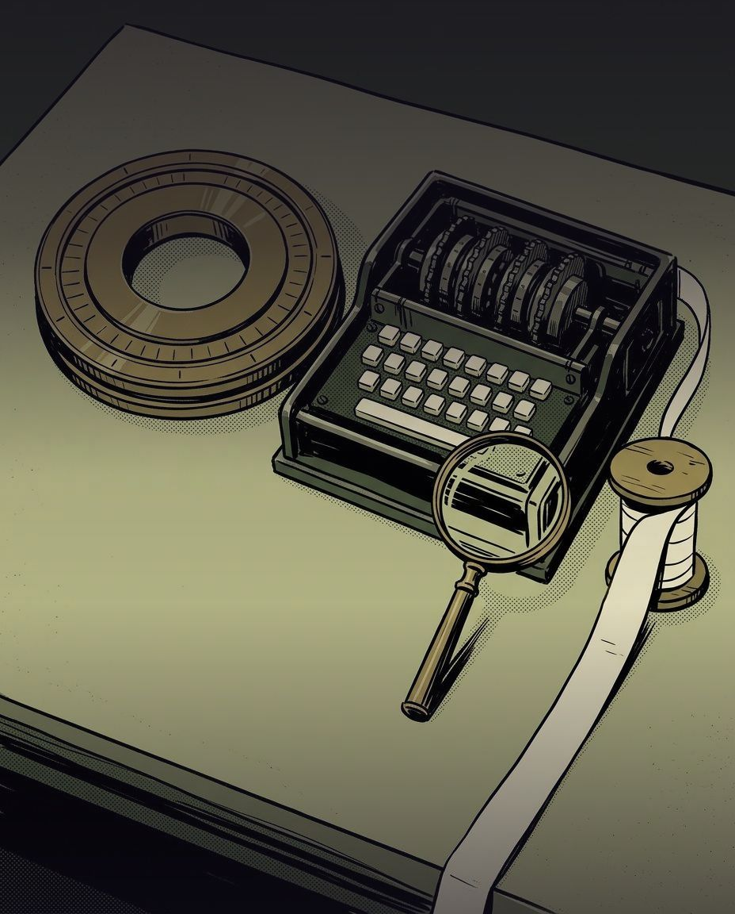
Round 40 · Speciality
Codes, Ciphers and Secret Writing
The oldest arms race there is, and the one that eventually built the computer.
12 questions · written answers
Bizzing Bee · Nobody Knows All of These123
Nobody Knows All of TheseCodes, Ciphers and Secret Writing
Write your answers. The key is at the back.
1. What is a cipher that shifts every letter a fixed number of places called?
2. What machine did the Germans use to encipher messages in the Second World War?
3. What is the practice of hiding a message so that nobody knows it is there at all?
4. What is the study of breaking codes called?
5. Which Arab scholar described frequency analysis in the ninth century?
6. What is a cipher alphabet written on a strip wrapped round a rod called?
7. What language did American forces use as an unbreakable code in the Pacific?
8. What is the name for a key used once and then destroyed, which is mathematically unbreakable?
9. What does the "public" in public-key cryptography mean?
10. What is the Vigenere cipher’s key innovation over the Caesar?
11. What is the term for the original readable message, before encryption?
12. Which undeciphered manuscript is written in an unknown script and full of unidentifiable plants?
of 12
Round 40 · your score
Mark it now, while you still remember which ones you guessed. A guess you got right is not a thing you know.
Bizzing Bee · Nobody Knows All of These124
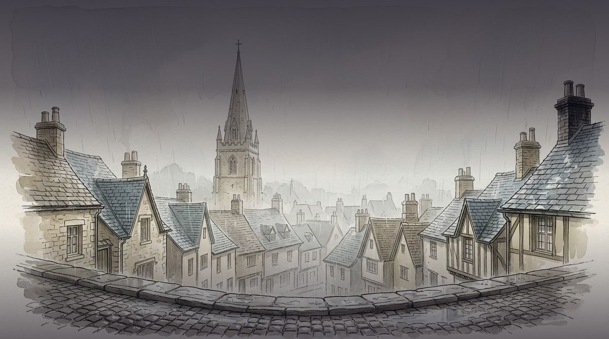
Round 41 · General
machines
A general round, drawn from the app’s own bank at its three hardest levels. Warm up here.
36 questions · multiple choice
Bizzing Bee · Nobody Knows All of These125
Nobody Knows All of Thesemachines
1. What is a 'slew ring' on an excavator or crane?
AThe track tensioner
BThe bucket hinge
CThe counterweight bolt
DThe big bearing letting the top rotate on the base
2. What does a pitot tube on an aircraft measure?
AAltitudeBAir speedCEngine heatDFuel level
3. What is 'creep' in a loaded metal component?
ALoss of hardness in cold
BSurface rusting
CSlow permanent stretching under long steady stress
DSudden brittle cracking
4. Why does a helicopter need a spinning tail rotor?
ATo stop its body spinning the other way
BTo help it land
CTo go much faster
DTo power its lights
5. Why do helicopters have a small rotor on the tail?
ATo stop the body from spinning around
BTo cool the engine
CTo blow away clouds
DTo make it fly faster
6. Which invention by Gutenberg spread books around the world?
AThe printing press
BThe steam train
CThe camera
DThe telephone
7. Which of these can a helicopter NOT do?
AHover in one spot
BFly backward
CTake off straight up
DFly faster than a jet plane
8. Which simple machine is hidden inside a doorknob?
AA wedge
BA pulley
CA wheel and axle
DA screw
9. A builder's 'plumb line' is named from the Latin word for which metal?
ACopperBTinCIronDLead
10. What does a turboprop engine use its turbine mainly to do?
ATurn a propeller
BCharge batteries
CPush a jet of gas
DCompress fuel
11. In 'cotton gin', the word 'gin' is a shortened form of which word?
AEngineBGingerCGinghamDBeginning
12. Why do maglev trains have no wheels touching the track at speed?
AThey roll on ceramic pads
BAir jets support them
CThey slide on ice
DMagnetic forces hold them above the guideway
13. The 'Karman line', often taken as the edge of space, sits about how high?
A100 kmB250 kmC50 kmD400 km
Bizzing Bee · Nobody Knows All of These126
Nobody Knows All of Thesemachines
14. The word 'foundry', where metal parts are cast, comes from a verb meaning…?
Ato melt snow
Bto hammer
Cto pour
Dto found a city
15. Which part of a bicycle brake actually converts motion into heat?
ABrake pads rubbing the rim or disc
BThe lever
CThe tyre
DThe cable
16. A cart carrying a figure whose arm always pointed the same way, a gear train working out the difference between two wheels, and no magnet anywhere describe which machine?
AThe odometer cart
BThe armillary clock
CThe south-pointing chariot
DThe water-powered mill
17. What helps a moving bicycle stay balanced and upright?
AA computer
BA hidden engine
CIts speed and steering
DMagnets
18. What was unusual about Concorde's nose?
AIt could be removed
BIt drooped down for take-off and landing
CIt was made of glass
DIt carried a radar dome
19. What made Stephenson's Rocket so much better than earlier locomotives?
ATwo chimneys
BA stronger chassis
CA multi-tube boiler that raised steam quickly
DLarger driving wheels alone
20. A rotating boat lift in Scotland, two balanced caissons, and a design that spends only about the energy of boiling a few kettles per turn describes what?
AThe Falkirk Wheel
BThe Ronquieres inclined plane
CThe Anderton Boat Lift
DThe Strepy-Thieu lift
21. A machine's mechanical advantage can be less than one.
AFalseBTrue
22. Which machine part seals a joint so oil or gas cannot escape?
AGudgeonBGasketCGrommetDGirder
23. Josephine Cochrane's 1886 patent gave the world a practical…?
AWashing machine
BToaster
CDishwasher
DVacuum cleaner
24. In physics, what does 'work' equal?
AForce divided by time
BMass times speed
CForce multiplied by distance moved
DPower times force
25. Which of these machines does its work by removing material?
A3D printer
BCasting furnace
CMilling machine
DInjection moulder
Bizzing Bee · Nobody Knows All of These127
Nobody Knows All of Thesemachines
26. Why do submarines running quietly prefer electric propulsion underwater?
AMotors are lighter
BEngines cannot run at all
CElectric motors are far quieter than engines
DFuel freezes at depth
27. A Belgian's valve gear, visible outside the wheels of many later steam locomotives, is named after…?
ARobert Stephenson
BDavid Joy
CEgide Walschaerts
DArthur Caprotti
28. True or false: A big gear turning a small gear makes the small one spin faster.
ATrueBFalse
29. Power is best defined as…?
ATotal force applied
BEnergy stored
CThe rate at which work is done
DTorque times distance
30. What is 'teleoperation'?
AAutomatic navigation
BA robot working alone
CA human controlling a machine from a distance
DProgramming by demonstration
31. What causes galvanic corrosion in a machine?
ATwo different metals touching in the presence of moisture
BUltraviolet light
CExcess lubrication
DOverheating of steel
32. Prandtl's boundary layer paper of 1904 was fewer than ten pages long.
ATrueBFalse
33. What does the saying “burn the midnight oil” mean?
ATo pile all the blame on one person
BTo work late into the night
CAlready decided, with no room for change
DTo defeat someone totally and easily
34. What is a 'collet' in a machine tool?
AA gear cover
BA cooling jacket
CA depth stop
DA sleeve that grips a tool or workpiece tightly
35. What is the moving belt that carries luggage at airports?
AA trampoline
BA gear
CA conveyor belt
DA pulley
36. An Iowa jeweller, hat pins used to hold a loaf together, and bakers who feared the bread would go stale describe which machine?
AThe bread-slicing machine
BThe proving cabinet
CThe dough mixer
DThe bagging machine
of 36
Round 41 · your score
Mark it now, while you still remember which ones you guessed. A guess you got right is not a thing you know.
Bizzing Bee · Nobody Knows All of These128
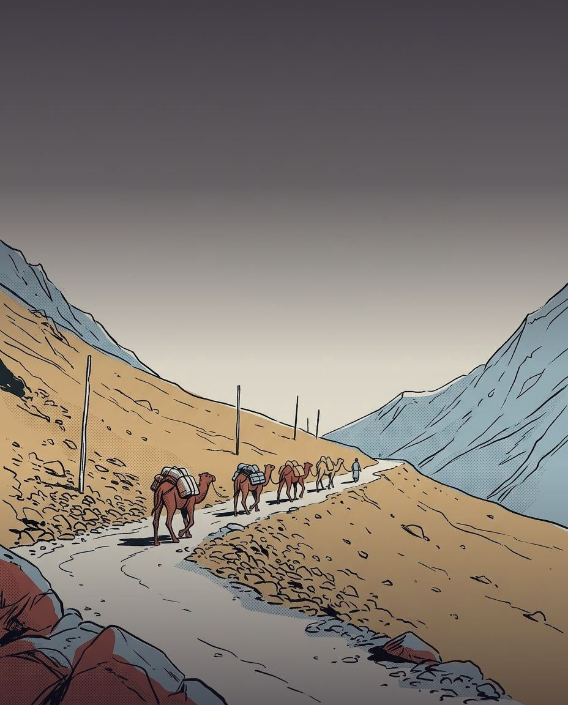
Round 42 · Speciality
The Silk Road
Not a road, and not only silk. A network of routes that moved goods, religions, diseases and words for fifteen hundred years.
12 questions · multiple choice
Bizzing Bee · Nobody Knows All of These129
Nobody Knows All of TheseThe Silk Road
1. What was the eastern end of the Silk Road, in most periods?
AChang’an (modern Xi’an)
BKaifeng
CBeijing
DGuangzhou
2. Which desert did the routes split to avoid, going north and south?
AThe GobiBThe TaklamakanCThe TharDThe Karakum
3. Which religion spread from India to China largely along these routes?
ABuddhism
BManichaeism
CZoroastrianism
DNestorian Christianity
4. What did the Chinese guard as a state secret for centuries?
AHow paper is made
BHow silk is made
CHow porcelain is fired
DHow gunpowder is mixed
5. Which city in modern Uzbekistan was a great Silk Road hub under Timur?
AKhivaBBukharaCTashkentDSamarkand
6. Which Venetian’s account of the route became the most famous in Europe?
AGiovanni Carpini
BNiccolo Conti
CMarco Polo
DOdoric of Pordenone
7. What disease is generally thought to have travelled west along these routes in the 1340s?
ACholera
BThe Black Death
CSmallpox
DTyphus
8. Paper-making reached the Islamic world after which battle, from captured craftsmen?
ATalas, 751
BBadr, 624
CAin Jalut, 1260
DManzikert, 1071
9. Which animal made the desert crossings possible?
AThe dromedary
BThe Bactrian camel
CThe mule
DThe yak
10. Which fruit’s English name comes from the Persian for "peach of Armenia"?
AQuinceBNectarineCApricotDPomegranate
11. Which Chinese invention reached Europe by these routes and changed warfare?
AThe crossbowBGunpowderCThe stirrupDThe compass
12. What were the caravan inns along the route called?
AKhanatesBBazaarsCMadrasasDCaravanserais
Bizzing Bee · Nobody Knows All of These130
Round 43 · General
sports
A general round, drawn from the app’s own bank at its three hardest levels. Warm up here.
36 questions · written answers
Bizzing Bee · Nobody Knows All of These131
Nobody Knows All of Thesesports
Write your answers. The key is at the back.
1. In basketball, 'goaltending' is the violation of doing what?
2. In eight-ball pool, which ball must be potted last?
3. A ban on tampering with the pitch, the 1744 Laws fixing the length at 22 yards, and an old surveyor's unit converge on which cricket measurement?
4. Starting a motor race from the very first grid spot is called...?
5. 'Agile' comes from a Latin root meaning to...?
6. A neurologist at an English spinal hospital, an archery contest for wheelchair patients in 1948, and a movement that grew into a global Games point to whom?
7. What does pressing the button on a chess clock do?
8. In many martial arts, which belt colour shows the highest skill?
9. In athletics, what happens to a sprinter who makes a false start?
10. The 'hepta' in 'heptathlon' tells you the event includes how many contests?
11. A Massachusetts college in 1895, a game designed for businessmen who found basketball too rough, and a net raised above head height converge on which sport?
12. In the medley relay, which stroke is always swum first, and why?
Bizzing Bee · Nobody Knows All of These132
Nobody Knows All of Thesesports
13. The machine that resurfaces an ice rink between periods is named after whom?
14. Which tennis Grand Slam is played on hard courts in New York City?
15. An 'annual' tournament is one that happens...?
16. At sports practice, what is a 'drill'?
17. In chess notation, '!' marks a strong move while '?' marks a mistake.
18. The ancient Greek 'hoplitodromos' was a footrace run while carrying what?
19. A marathon is about 42 kilometres long.
20. How many red balls are on the table at the start of a snooker frame?
21. The back-first high jump technique used by nearly all champions today is called the...?
22. A 1997 New York rematch, a move 44 that unnerved a world champion, and a machine dismantled soon after its victory point to which milestone?
23. The ancient Greek throwing implement 'diskos' gave English which everyday word?
24. The figure-skating jump called the 'salchow' is named after a skater from which country?
25. What does the assistant referee's raised flag most famously signal in soccer?
Bizzing Bee · Nobody Knows All of These133
Nobody Knows All of Thesesports
26. In cricket, a six is scored when the ball crosses the boundary without bouncing.
27. In baseball, how many outs does a 'double play' earn at once?
28. In match play golf, how is the winner decided?
29. The 'kilo' in 'kilometer' means...?
30. Sport's 'hat-trick' began in cricket, where a bowler taking three wickets in three balls won what?
31. What does the saying “checkmate” mean?
32. In 1988 one tennis player won all four majors plus Olympic gold in a single year. Who?
33. Which three movements, in order, make up the triple jump?
34. What is the highest score a single dart can earn with one throw?
35. How long is the Olympic open water swimming marathon?
36. In tennis, when do players switch ends of the court?
of 36
Round 43 · your score
Mark it now, while you still remember which ones you guessed. A guess you got right is not a thing you know.
Bizzing Bee · Nobody Knows All of These134
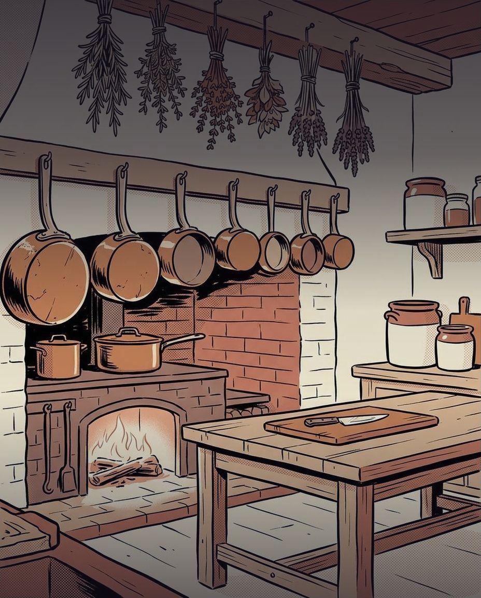
Round 44 · Speciality
Words from the Kitchen
Cooking words come from everywhere, and most of them describe an action rather than a dish. Find them in the square.
12 questions · letter square
Bizzing Bee · Nobody Knows All of These135
Nobody Knows All of TheseWords from the Kitchen
Answer each clue, then find the answer in the square.
1. On which faraway island do these giant stone heads stand?
2. A Swahili phrase meaning 'house of peace'
3. A nutmeg island signed away in 1667
4. A river that blooms deep red for a few months each year thanks to an underwater plant
5. The Moon's gravity is the main reason we have ocean tides.
6. Which country would you visit to walk the ancient Inca Trail?
7. Greenland is one of Earth's seven continents.
8. The name 'Dublin' comes from Irish words meaning...?
9. A New Zealand beekeeper
10. Which lake holds the most fresh water and is the deepest on Earth?
11. Nepal's capital, Kathmandu, takes its name from a...?
12. A 1783 Icelandic fissure eruption
of 10
Round 47 · your score
Mark it now, while you still remember which ones you guessed. A guess you got right is not a thing you know.
Bizzing Bee · Nobody Knows All of These145
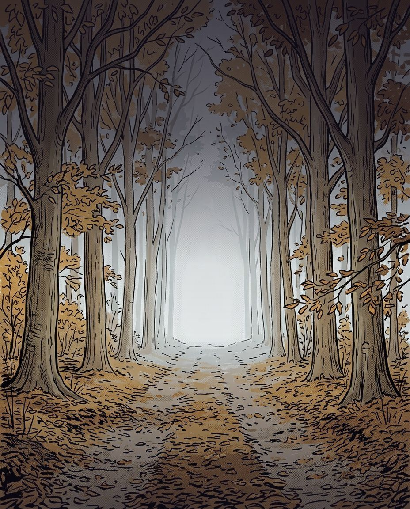
Round 48 · Speciality
Trees and What They Are For
Every one of these trees gave English at least one word, and most gave a trade.
12 questions · written answers
Bizzing Bee · Nobody Knows All of These146
Nobody Knows All of TheseTrees and What They Are For
Write your answers. The key is at the back.
1. Which tree’s wood was traditionally used for English longbows?
2. Which tree produces the cork used in bottles?
3. From which tree do we get the drug aspirin’s original compound?
4. Which tree is the source of natural rubber?
5. Which tree’s seeds give us chocolate?
6. Which tree gives the world’s tallest living specimens?
7. Which tree, sacred in India, is a fig that drops aerial roots to form new trunks?
8. Which tree is the source of the spice cinnamon?
9. Which conifer is deciduous, losing its needles every autumn?
10. Which tree species is considered a living fossil, unchanged for 200 million years, with fan-shaped leaves?
11. From which tree does the timber teak come, prized for shipbuilding?
12. Which tree gives us maple syrup, and how many litres of sap make one of syrup?
of 12
Round 48 · your score
Mark it now, while you still remember which ones you guessed. A guess you got right is not a thing you know.
Bizzing Bee · Nobody Knows All of These147
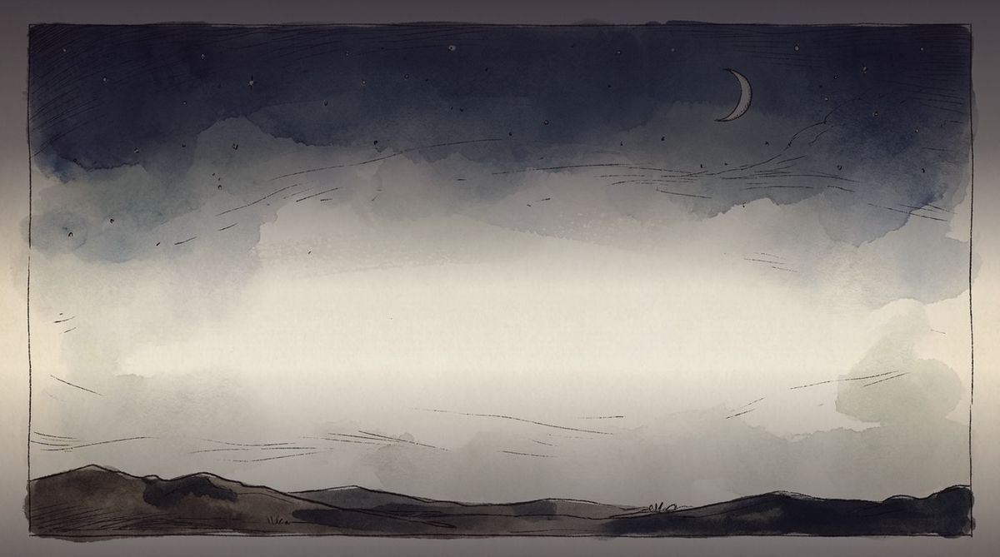
Round 49 · General
space
A general round, drawn from the app’s own bank at its three hardest levels. Warm up here.
36 questions · multiple choice
Bizzing Bee · Nobody Knows All of These148
Nobody Knows All of Thesespace
1. 'Cryogenic' rocket fuel takes its name from Greek parts meaning what?
AFast flowing
BSky splitting
CDeep burning
DFrost producing
2. A Chinese record of a 'guest star' in 1054, Native American rock art from the same era, and a shredded cloud powered by a spinning core: what do they describe?
AThe Crab Nebula's supernova
BHalley's Comet
CA total solar eclipse
DThe Andromeda Galaxy
3. A giant elliptical galaxy in Virgo, a jet of matter spotted as early as 1918, and the subject of the first image of a black hole's shadow: which galaxy?
AM104BM51CM87DM31
4. What happened to Comet Shoemaker-Levy 9 in July 1994?
AIt broke apart and crashed into Jupiter
BIt became a new asteroid
CIt hit the Moon
DIt vanished into the Sun
5. Why can the small Moon completely hide the giant Sun during a total eclipse?
AThe Moon grows bigger
BThe Moon is actually larger
CThe Moon is much closer, so both look the same size
DThe Sun shrinks
6. Which spacecraft has flown closest to the Sun, dipping inside its corona?
AAditya-L1
BSOHO
CThe Parker Solar Probe
DHelios 3
7. Which type of star is by far the most common in the Milky Way?
AWhite dwarfs
BRed dwarfs
CYellow stars like the Sun
DBlue giants
8. The name of the star 'Sirius' comes from a Greek word meaning what?
AScorching or glowing
BWinter's eye
CFaithful dog
DSilver point
9. How does Earth's magnetic field protect life from the solar wind?
AIt deflects charged particles around the planet
BIt creates rain clouds
CIt absorbs all sunlight
DIt cools the upper air
10. What is the word for the shadow's dark inner core during an eclipse?
AThe nimbusBThe umbraCThe auroraDThe corona
11. A seventh-century Indian mathematician who wrote that objects fall because the Earth attracts them, centuries before Newton: who?
ABhaskara IBVarahamihiraCBrahmaguptaDLalla
12. Whose SHADOW is this?
ATelescopeBMoonCCometDAstronaut
Bizzing Bee · Nobody Knows All of These149
Nobody Knows All of Thesespace
13. Which element takes its name from the asteroid Pallas?
APlatinumBPalladiumCPraseodymiumDPolonium
14. In Indian tradition, the star called 'Chitra' is which star in Western naming?
ASpicaBAntaresCCapellaDAltair
15. The motto 'Ad astra per aspera' means what?
ABy the stars we steer
BBeyond the stars forever
CTo the stars with courage
DTo the stars through difficulties
16. A privately developed pen with a pressurised ink cartridge, sold to both American and Soviet space programmes, and the subject of a persistent cost myth: whose pen?
AWalter Sheaffer's
BLaszlo Biro's
CGeorge Parker's
DPaul Fisher's
17. How long can the footprints left by astronauts last on the Moon?
AA few days
BOne week
CUntil it rains
DMillions of years
18. The star name 'Denebola' in Leo means what?
ADen of the beast
BTail of the lion
CBright mane
DDouble star
19. In navigation, 'azimuth' comes from an Arabic word meaning what?
AThe measured arc
BThe directions or ways
CThe starry road
DThe rising point
20. Which astronomer argued that Earth circles the Sun, not the other way round?
AArchimedes
BNicolaus Copernicus
CPtolemy
DAristotle
21. Roughly how long does the Sun take to complete one orbit of the galaxy?
AAbout 2 billion years
BAbout 230 million years
CAbout 23 million years
DAbout 230 thousand years
22. A figure-eight traced by the Sun's noon position over a year, visible in long-exposure photographs, and named from a Greek word for a sundial's pedestal: what is it?
AA meridianBA gnomonCAn armillaryDAn analemma
23. Which telescope, launched in 1990, needed a repair mission for its blurry mirror?
AThe Hubble Space Telescope
BThe Kepler telescope
CThe Webb Space Telescope
DThe Chandra telescope
24. What does a spacecraft's 'attitude' describe?
AHow fast it spins its wheels
BWhich direction it is pointing
CHow high it is flying
DHow much fuel is left
Bizzing Bee · Nobody Knows All of These150
Nobody Knows All of Thesespace
25. What does a spacecraft's 'heat shield' actually do during re-entry?
AReflects all sunlight
BAbsorbs and carries away enormous heat
CCools the cabin with fans
DMelts the air
26. Why do many countries prefer launch sites close to the equator?
AThere are fewer clouds
BEarth's spin gives rockets a bigger free head start
CThe air is thinner there
DGravity is weaker there
27. What was the first human-made object to reach the edge of space, back in 1944?
AA weather glider
BA German test rocket
CA high-altitude balloon
DA cannon shell
28. Which system of seven Earth-sized planets around one small star excited astronomers in 2017?
AKepler-11BGliese 581CTRAPPIST-1DHD 10180
29. Who made the first untethered spacewalk, flying free of his spacecraft in 1984?
ABruce McCandless
BStory Musgrave
CAlexei Leonov
DEd White
30. What do astronomers call the dark lanes that split the Milky Way's glow?
AClouds of interstellar dust
BGaps in Earth's atmosphere
CShadows of nearby planets
DEmpty gaps between stars
31. Which Indian president and scientist led the team behind the SLV-3 launch vehicle?
AHomi Bhabha
BA. P. J. Abdul Kalam
CM. Visvesvaraya
DSatish Dhawan
32. In 2019 astronomers released the first direct image of what?
AThe edge of the universe
BPluto's core
CA black hole's shadow
DA living alien
33. The word 'crescent' comes from a Latin verb meaning what?
ATo shineBTo sailCTo growDTo bend
34. A spacecraft that used one planet's gravity to reach another, the first ever to try that trick, and the only craft to visit Mercury in the twentieth century: which one?
AMariner 10BHelios 1CMariner 9DPioneer 11
35. India's Chandrayaan-3 rover was named 'Pragyan', a word meaning what?
AWisdomBCourageCSunriseDJourney
36. What is the giant stone instrument complex Jantar Mantar in Jaipur used for?
AMeasuring positions of the Sun and stars
BDefending the city
CStoring grain
DHolding festivals
of 36
Round 49 · your score
Mark it now, while you still remember which ones you guessed. A guess you got right is not a thing you know.
Bizzing Bee · Nobody Knows All of These151
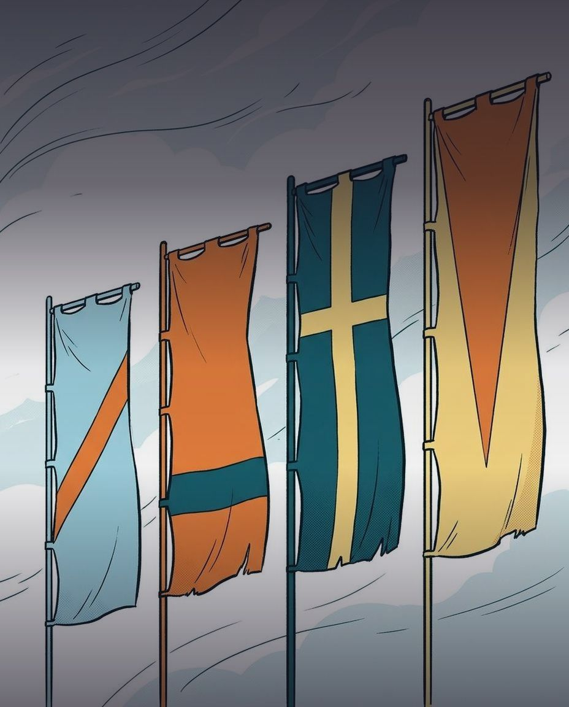
Round 50 · Speciality
Flags and What Is On Them
Vexillology, from the Latin vexillum, a military standard. A flag is a compressed history lesson.
12 questions · multiple choice
Bizzing Bee · Nobody Knows All of These152
Nobody Knows All of TheseFlags and What Is On Them
1. Which country’s flag is the only non-quadrilateral national flag?
ASwitzerlandBNepalCVatican CityDQatar
2. The maple leaf on the Canadian flag has how many points?
AElevenBThirteenCNineDSeven
3. Which country’s flag shows a bird of prey eating a snake?
AZambiaBAlbaniaCMexicoDEgypt
4. The Union Jack combines the crosses of which three saints?
AGeorge, David and Andrew
BGeorge, Andrew and Patrick
CAndrew, Patrick and David
DGeorge, Patrick and Columba
5. Which country’s flag features a cedar tree?
AJordanBIsraelCLebanonDCyprus
6. The Brazilian flag carries a motto in Portuguese. What does it say?
ALiberty and Union
BOrder and Progress
CPeace and Justice
DGod and Country
7. Which flag shows the night sky over a specific city on a specific date?
APapua New Guinea
BSamoa
CBrazil
DAustralia
8. Which country’s flag is a solid single colour with no design at all?
ALibya, from 1977 to 2011
BMauritania
CBhutan
DDjibouti
9. The dragon on the flag of Bhutan is holding what?
AJewelsBA lotusCA scrollDA sword
10. Which Scandinavian design element appears on the flags of Denmark, Sweden, Norway, Finland and Iceland?
AA crown
BA star
CAn off-centre cross
DA ship
11. How many stripes are on the flag of the United States, and why?
AFifty, for the states
BFifteen, for the first fifteen states
CTwelve, for the months
DThirteen, for the original colonies
12. The flag of Mozambique is the only national flag to feature what modern object?
AA telephone
BA satellite
CAn assault rifle
DA bicycle
of 12
Round 50 · your score
Mark it now, while you still remember which ones you guessed. A guess you got right is not a thing you know.
Bizzing Bee · Nobody Knows All of These153
Round 51 · General
fest
A general round, drawn from the app’s own bank at its three hardest levels. Warm up here.
36 questions · written answers
Bizzing Bee · Nobody Knows All of These154
Nobody Knows All of Thesefest
Write your answers. The key is at the back.
1. The South African region Natal was named because Vasco da Gama's fleet passed it on which day?
2. The Sikh term 'gurpurab' is built from parts meaning what?
3. During Cambodia's Pchum Ben, families rise before dawn to offer what at temples?
4. A 'Nagar Kirtan' procession at Sikh festivals is literally what?
5. Venice's Carnival was suppressed for many years and only fully revived in which decade?
6. Towering illuminated mitre-shaped headdresses, cowbells and whip-cracking through a Swiss village on 5 December belong to which festival?
7. At an Aqiqah celebration, a baby's shaved hair is traditionally weighed against what?
8. American Thanksgiving became a national holiday when which president proclaimed it in 1863?
9. At Purim, the custom of 'mishloach manot' means sending friends what?
10. A village organ out of action, a priest's 1816 poem, and a schoolteacher named Franz Gruber produced which carol?
11. A drummer walking the alleys before dawn, calling sleepers by name so they can eat before the fast, is known in Arabic as what?
Bizzing Bee · Nobody Knows All of These155
Nobody Knows All of Thesefest
12. The Hanukkah miracle tells of oil that should have lasted one day but burned for how many?
13. The practice of marrying within one's own community or group is called what?
14. 'First cousin once removed' describes what relationship?
15. 'Jumping the broom' is a wedding custom especially associated with which community?
16. A hillside reading of the Torah on the 29th of Cheshvan, fasting, and a festival of Ethiopian Jews now a national holiday in Israel is called what?
17. Orthodox Easter often falls later than Western Easter because those churches use which calendar?
18. The Christmas Eve service of 'Nine Lessons and Carols' is broadcast from which chapel?
19. An Italian verb meaning to tumble, a revolving drum of folded tickets, and a stall at a village fete give us which word?
20. In Russian naming, a middle name such as Ivanovich or Ivanovna is what?
21. In Lopburi, Thailand, an unusual annual banquet is laid out for which guests?
22. The Latin American system of co-parenthood, linking parents and godparents as 'compadres', is known as what?
23. Muslims seek Laylat al-Qadr, the Night of Power, during which part of Ramadan?
Bizzing Bee · Nobody Knows All of These156
Nobody Knows All of Thesefest
24. Before Eid al-Fitr prayers, Muslims are expected to give a charity payment called what?
25. On Gudi Padwa, Maharashtrian families raise a decorated pole topped with what?
26. Chinese New Year celebrations last until the 15th day, ending with which event?
27. The festival name 'Dussehra' is built from a word meaning which number?
28. A cherry branch cut on 4 December, stood in water indoors, and timed to bloom at Christmas is known in Germany as what?
29. In Denmark, how do families announce that someone in the house has a birthday?
30. The red paper 'chunlian' pasted around Chinese doorways at new year are what?
31. In Vietnam, the tall bamboo pole raised outside homes at Tet is called what?
32. At Sweden's Midsummer, children famously dance around the pole imitating which animal?
33. Which animal is NOT in the Chinese zodiac?
34. In Sri Lanka, public holidays fall on every 'Poya' day, which is which lunar phase?
35. Which festival marks the first day of spring as the Persian New Year?
36. The Bahai calendar of nineteen months of nineteen days needs extra days, called what?
of 36
Round 51 · your score
Mark it now, while you still remember which ones you guessed. A guess you got right is not a thing you know.
Bizzing Bee · Nobody Knows All of These157
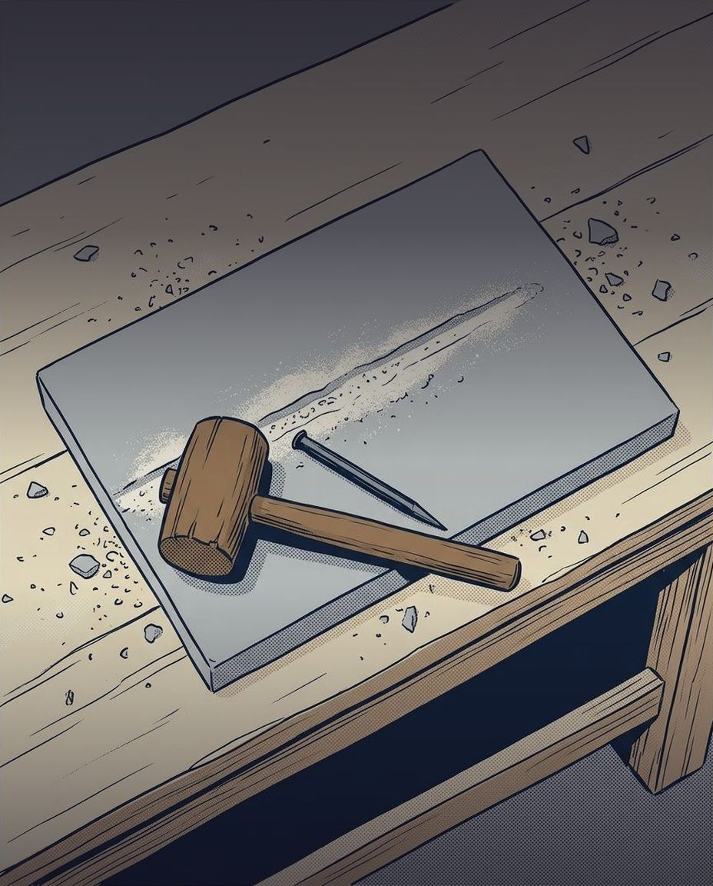
Round 52 · Speciality
Silent Letters, and Who Left Them There
Almost every silent letter in English is a fossil. Some were spoken and went quiet; others were never spoken at all, and were inserted by scholars who wanted the word to look like its Latin ancestor.
12 questions · multiple choice
Bizzing Bee · Nobody Knows All of These158
Nobody Knows All of TheseSilent Letters, and Who Left Them There
1. The b in debt is silent and always was. Why was it put in?
ATo show the word came from Latin debitum
BTo mark a long vowel
CIt was once pronounced
DTo separate it from another word
2. The k in knee and knight was once said aloud. Which modern language still pronounces that cluster in its word for knee?
AFrenchBItalianCSpanishDGerman
3. The s in island was inserted because of a mistaken link to which other word?
AIrelandBInlandCSandDIsle
4. The p in receipt was added to match the Latin recepta. Which related word kept the p AND pronounces it?
ARecessBReceptionCReceiveDRecipient
5. The l in salmon is silent. What was the word in Old French, before scholars restored the Latin?
ASalmounBSamounCSalmoneDSaumon
6. The h in ghost was not in the Old English gast. Who is generally blamed for it?
AThe scribes of Chaucer
BNoah Webster
CCaxton’s Flemish typesetters
DSamuel Johnson
7. In autumn, column and hymn the n is silent. What happens to it in autumnal and columnist?
AIt becomes an m
BIt is pronounced again
CIt is dropped from the spelling
DIt stays silent
8. The w in sword, two and answer is silent. Which of these still says its w?
AAnswerBSworeCTwoDSword
9. The t is silent in castle, listen and whistle. What sound cluster is it caught between?
An and eBc and aCs and lDa and e
10. The b in subtle came back from Latin subtilis. What did subtilis literally describe?
6. A sculptor overhearing his work credited to a rival, a night alone with a chisel, and the only signature he ever carved describe which statue?
ACast in bronzeBSignedCSold twiceDPainted
7. A word meaning 'biting', a dyer's alum bath, and the acid that eats into an etching plate all point to which term?
AMordantBFixativeCSolventDSiccative
8. The word 'chalk' comes from a root meaning?
ASoft dustBSmall stickCWhite cliffDLimestone
9. Which Dutch artist drew impossible staircases that seem to climb forever?
AM. C. Escher
BJohannes Vermeer
CRembrandt
DPiet Mondrian
Bizzing Bee · Nobody Knows All of These161
Nobody Knows All of Theseart
10. A 2009 lab experiment heating manganese oxide, an unexpectedly brilliant powder in the furnace, and the first new inorganic blue in 200 years describe what?
ACerulean blueBHan blueCYInMn blueDPrussian blue
11. 'Rococo' derives from 'rocaille', ornamental work made of pebbles and?
ARibbonsBVinesCShellsDFeathers
12. A judo master who wrote a manual on the sport, a patented shade of blue, and paintings made with a blowtorch describe which artist?
20. 'Gesso', the white primer brushed onto canvases, is literally the word for?
AIvoryBGypsumCMilkDSnow
21. A French word for a flea, a fashionable 18th-century court colour, and a brownish purple in modern paint charts all name which colour?
AFawnBPuceCMauveDTaupe
22. Which Mexican muralist, husband of Frida Kahlo, covered walls with scenes of workers and history?
ARufino Tamayo
BDiego Rivera
CJose Clemente Orozco
DDavid Alfaro Siqueiros
23. 'Enamel' comes from an old root meaning to?
AMeltBCoverCPolishDShine
24. Before cheap paper, scribes wrote and painted on parchment, which is made from?
APressed reedsBTree barkCWoven silkDAnimal skin
25. Roughly how many paintings by Johannes Vermeer survive today?
AAbout 900BAbout 35CExactly 2DAbout 300
26. A road inspector, 18 years of secret building from rubble and broken bangles, and a hidden kingdom in a Chandigarh forest describe which work?
ALas Pozas
BNek Chand's Rock Garden
CThe Palais Ideal
DThe Watts Towers
27. Which artist made huge outdoor works from ice, leaves, stones and twigs?
AAnish Kapoor
BDamien Hirst
CHenri Matisse
DAndy Goldsworthy
28. Which word describes a print run of a limited, numbered set of copies?
AEmulsionBElevationCEngravingDEdition
29. The Mona Lisa was painted around which time?
ALast year
BThe early 1500s
CThe 1800s
DThe year 2000
Bizzing Bee · Nobody Knows All of These163
Nobody Knows All of Theseart
30. The word 'ink' descends from a Greek word meaning?
ABlack waterBSqueezed outCBurned inDWritten down
31. A well-meaning parishioner's 2012 touch-up, a mocking internet nickname, and a sudden tourist boom for a Spanish town describe which fresco?
AThe Borja 'Ecce Homo'
BThe Toledo 'Assumption'
CThe Sevilla 'Nativity'
DThe Valencia 'Pieta'
32. Making prints by carving a picture into wood is called?
AWoodblock printing
BFingerpainting
CWeaving
DSketching
33. Egyptian blue is considered the world's first synthetic pigment.
ATrueBFalse
34. The artist's technique of strong light and deep shadow is called?
AOrigamiBPerspectiveCCamouflageDChiaroscuro
35. An artwork's 'provenance' is the documented record of its?
AOwnership history
BPaint chemistry
CMarket price
DRestoration dates
36. Adding a color's complement (opposite) can make it look duller.
ATrueBFalse
of 36
Round 53 · your score
Mark it now, while you still remember which ones you guessed. A guess you got right is not a thing you know.
Bizzing Bee · Nobody Knows All of These164
Round 54 · Speciality
Double or Single?
Doubled consonants are not decoration. English doubles a letter to protect a short vowel, and where the stress falls decides whether it doubles at all. Write each answer out in full.
12 questions · written answers
Bizzing Bee · Nobody Knows All of These165
Nobody Knows All of TheseDouble or Single?
Write your answers. The key is at the back.
1. Write the past tense of "occur".
2. Write the past tense of "benefit".
3. Write the word meaning "took in and made part of itself", from ab- and sorbere.
4. Write the adjective from "regret".
5. Write the word for a person who travels on foot, from Latin pedester.
6. Write the word meaning "needed" or "essential", built on "requisite".
7. Write the noun meaning "the state of being embarrassed".
8. Write the word meaning "living quarters", from Latin accommodare.
9. Write the past tense of "travel" as it is spelled in American usage.
10. Write the word for the tool a carpenter uses to make a surface flat, and the past tense verb from it.
11. Write the noun meaning "a formal agreement between nations".
12. Write the word meaning "happening at the same time", from sub- and cedere.
of 12
Round 54 · your score
Mark it now, while you still remember which ones you guessed. A guess you got right is not a thing you know.
Bizzing Bee · Nobody Knows All of These166
Round 55 · General
ent
A general round, drawn from the app’s own bank at its three hardest levels. Warm up here.
36 questions · crossword
Bizzing Bee · Nobody Knows All of These167
Nobody Knows All of Theseent
The clue is the meaning. The answer is the word.
1
2
3
4
5
6
7
8
9
Across
2. A glove puppet bear with a magic wand
3. A book of practical cats
7. The 'praxinoscope', an improvement on the zoetrope, used what to view the strip?
8. A hidden joke or reference tucked into a film for sharp-eyed viewers is called an…?
Down
1. 'Marionette' comes from a French word that literally means…?
4. The 'orama' shared by 'panorama', 'diorama' and 'cyclorama' means…?
5. The Palme d'Or is the top prize at which film festival?
6. A terracotta-coloured clay figure
9. A 'long take' is a single unbroken shot
of 9
Round 55 · your score
Mark it now, while you still remember which ones you guessed. A guess you got right is not a thing you know.
Bizzing Bee · Nobody Knows All of These168
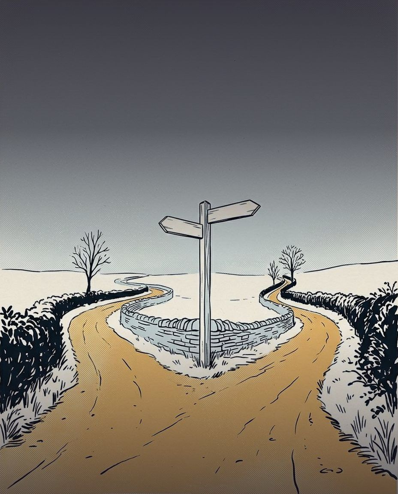
Round 56 · Speciality
Is It -able or -ible?
There is a rule, and it is nearly reliable: -able attaches to whole English words, -ible to Latin stems that cannot stand alone. Comfort is a word, so comfortable. Aud is not, so audible.
23. Edison's phonograph of 1877 was the first machine that could...?
ATake color photographs
BRecord and play back sound
CShow moving pictures
DSend messages through the air
24. Pencil 'lead' is actually graphite and contains no lead at all.
AFalseBTrue
25. A craftsman called a 'cooper' spent his days making...?
ARopesBChicken coopsCSaddlesDBarrels
26. A Victorian 'mudlark' scraped together a living by...?
ASearching river mud for things to sell
BSweeping crossings for coins
CCatching skylarks for pies
DDigging garden ponds
27. What does the saying “vote of confidence” mean?
AA public show of support for someone
BTo be exactly what is needed
CA situation that explodes with anger when disturbed
DA person extremely careful or stingy with money
Bizzing Bee · Nobody Knows All of These174
Nobody Knows All of Thesehistory
28. The Lascaux cave paintings were discovered in 1940 by teenagers following their dog.
AFalseBTrue
29. What was the largest land animal that ever lived?
ABlue whale
BWoolly mammoth
CAfrican elephant
DArgentinosaurus
30. A Tyrannosaurus rex tooth was about as long as a...?
ABananaBGrain of riceCBusDPencil tip
31. Sailors' signal system of two hand-held flags is called...?
APinaforeBAnaphoraCSemaphoreDMetaphor
32. 'Colosseum' is thought to come from a nearby giant...?
AStatueBGateCFountainDHill
33. The Egyptian 'shaduf' was a simple machine for...?
AHauling pyramid blocks
BNetting fish
CGrinding grain
DLifting river water to the fields
34. The Persian kings' 'Royal Road' was built to speed up...?
ARoyal mail carried by relay riders
BPilgrimages to the capital
CElephant caravans
DChariot races
35. What powered the earliest factories before steam engines?
AHand cranks
BWater wheels
CHorse treadmills
DWindmills only
36. 'Canoe' and 'hammock' both entered European languages from the peoples of...?
APolynesiaBThe CaribbeanCThe ArcticDWest Africa
of 36
Round 57 · your score
Mark it now, while you still remember which ones you guessed. A guess you got right is not a thing you know.
Bizzing Bee · Nobody Knows All of These175
Round 58 · Speciality
What the Arabic Root Meant
English took a great deal from Arabic, most of it through Spain and Italy, and much of it still carries the Arabic definite article al- fused to the front where English speakers could not hear the join.
12 questions · multiple choice
Bizzing Bee · Nobody Knows All of These176
Nobody Knows All of TheseWhat the Arabic Root Meant
1. Algebra comes from al-jabr. What did al-jabr describe?
AThe counting of herds
BThe reuniting of broken parts
CThe measuring of land
DThe dividing of an estate
2. Admiral has a d that does not belong to its root. What did the original amir al-bahr mean?
AKeeper of the fleet
BCommander of the sea
CMaster of the winds
DPrince of the shore
3. Magazine reached English meaning a storehouse. What was a makhzan?
AA marketplaceBA ledgerCA storehouseDA watchtower
4. Cipher and zero are the same Arabic word twice. What did sifr mean?
ANothing gainedBEmptyCRoundDSmall
5. Alcohol first named something quite unlike a drink. What was al-kuhl?
AA distilled perfume
BA fine powder used as eye paint
CA medicinal wine
DA burning oil
6. A sofa was originally not furniture. What was a suffa?
AA raised bench along a wall
BA woven mat
CA shaded courtyard
DA cushioned saddle
7. What did the Arabic qutn name?
AWoolBSilkCLinenDCotton
8. Giraffe comes from zarafa. Which European language passed it to English with the f?
AGermanBPortugueseCDutchDItalian
9. Alchemy carries al- plus kimiya. What is the most widely accepted source of kimiya?
AAn Aramaic word for fire
BA Persian word for gold
CAn Egyptian word for black earth
DA Greek word for the pouring or fusing of metals
10. Which of these four words did NOT come to English through Arabic?
AAlgebraBAlcoveCAlmondDAlkali
11. Sugar reached English from sukkar, but where does that word ultimately come from?
ASanskrit sharkara, "gravel"
BEgyptian seqer, "crystal"
CGreek sakkharon, "cane juice"
DPersian shakar, "sweet"
Bizzing Bee · Nobody Knows All of These177
Nobody Knows All of TheseWhat the Arabic Root Meant
12. A safari is a journey. What does the Arabic safar mean?
AA desert crossing
BA hunt
CA caravan of camels
DA journey or travel
of 12
Round 58 · your score
Mark it now, while you still remember which ones you guessed. A guess you got right is not a thing you know.
Bizzing Bee · Nobody Knows All of These178
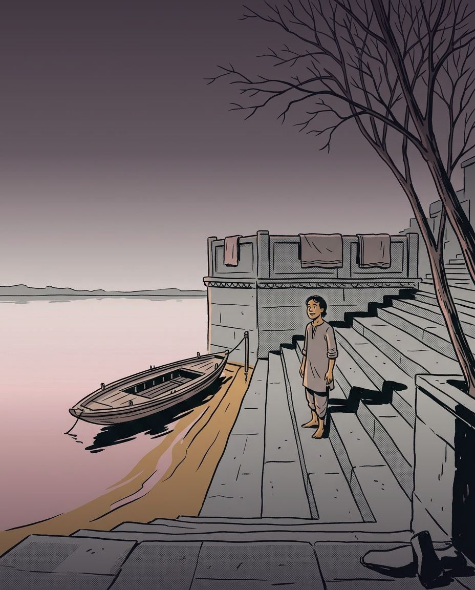
Round 59 · Speciality
What the Sanskrit Root Meant
Sanskrit words reached English by two very different roads: the scholarly one, through translation, and the everyday one, through three centuries of trade and empire. Write the English word.
12 questions · written answers
Bizzing Bee · Nobody Knows All of These179
Nobody Knows All of TheseWhat the Sanskrit Root Meant
Write the answer in the box. The key is at the back.
1. From avatara, "a descent" — the coming down of a god into the world. Which English word?
2. From jangala, "rough and waterless ground". Which English word?
3. From Jagannatha, "lord of the world" — a temple chariot so large it could not be stopped. Which English word?
4. From pandita, "learned" or "scholar". Which English word?
5. From champo, "to press or knead". Which English word?
6. From mantra, built on man- "to think" plus an instrument ending. Which English word?
7. From nirvana, "a blowing out", as of a flame. Which English word?
8. From guru, whose first meaning is "heavy" or "weighty". Which English word?
9. From naranga, the name of the fruit, which lost its first letter to French. Which English word?
10. From khanda, "a piece" or "broken sugar". Which English word?
11. From cakra, "wheel" or "circle". Which English word for a wheel-shaped centre of energy?
12. From upa-ni-shad, "sitting down near" — a pupil at a teacher’s feet. Which English word?
of 12
Round 59 · your score
Mark it now, while you still remember which ones you guessed. A guess you got right is not a thing you know.
Bizzing Bee · Nobody Knows All of These180
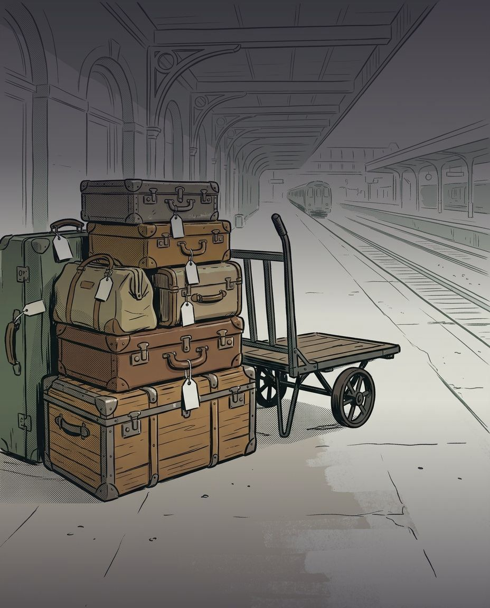
Round 60 · Speciality
Plurals With Foreign Passports
A word that arrives from Latin or Greek often brings its own plural with it, and refuses the English -s for a century or two before giving in. Some have given in. Some never will.
12 questions · multiple choice
Bizzing Bee · Nobody Knows All of These181
Nobody Knows All of ThesePlurals With Foreign Passports
1. What is the singular of "data"?
ADataBDatusCData pointDDatum
2. What is the plural of "criterion"?
ACriterionsBCriteriumCCriteriaDCriterias
3. What is the singular of "alumni"?
AAlumnumBAlumnusCAlumnaDAlumni
4. What is the plural of "crisis"?
ACrisaeBCrisisesCCrisiDCrises
5. What is the plural of "cactus" that follows the Latin?
ACactaeBCactusesCCactiiDCacti
6. What is the plural of "index" in mathematics?
AIndexBIndiciesCIndicesDIndexes
7. What is the singular of "bacteria"?
ABacterBBacteriumCBacteriaDBacterius
8. What is the plural of "larva"?
ALarvasBLarvaeCLarviDLarvum
9. What is the plural of "octopus" preferred by most dictionaries?
AOctopusesBOctopiCOctopodesDOctopus
10. What is the singular of "media" in its original sense?
AMediaBMediusCMedionDMedium
11. What is the plural of "appendix" in a book?
AAppendicesBAppendixiCAppendixesDAppendici
12. What is the plural of "stimulus"?
AStimuliiBStimulusesCStimuliDStimulae
of 12
Round 60 · your score
Mark it now, while you still remember which ones you guessed. A guess you got right is not a thing you know.
Bizzing Bee · Nobody Knows All of These182
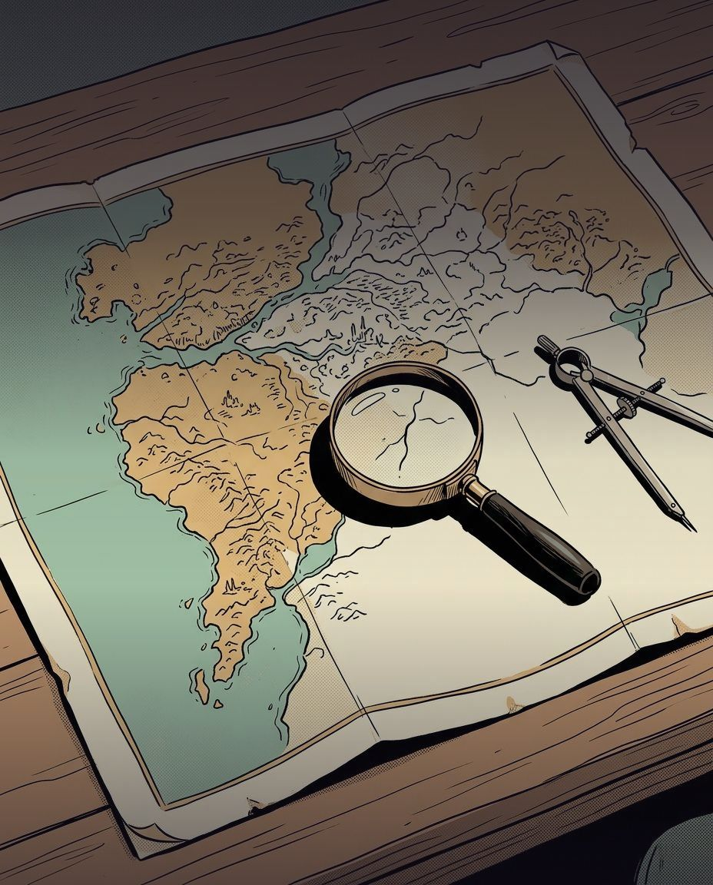
Round 61 · Speciality
Words That Are Really Places
A toponym is a word made from a place name. Cloth, food and animals collect them, because trade names its goods after wherever it first found them. The clue is the meaning; the answer is the word.
12 questions · crossword
Bizzing Bee · Nobody Knows All of These183
Nobody Knows All of TheseWords That Are Really Places
The clue is the meaning. The answer is the word.
1
2
3
4
5
6
7
8
9
10
Across
3. A small yellow songbird named after a group of Atlantic islands
5. A rich figured fabric named after a city in Syria
7. A blue-green mineral whose name means "Turkish"
8. A fine cotton fabric named after a city in Iraq
9. A strong-smelling cheese named after a village in Somerset
Down
1. A long-distance race named after a plain in Greece
2. Soft napped leather whose name means "from Sweden"
4. A brilliant purplish-red dye named after an Italian battle
6. A small oily fish named after a Mediterranean island
10. Hard-wearing cotton twill, named for the French city of Nîmes
of 10
Round 61 · your score
Mark it now, while you still remember which ones you guessed. A guess you got right is not a thing you know.
Bizzing Bee · Nobody Knows All of These184
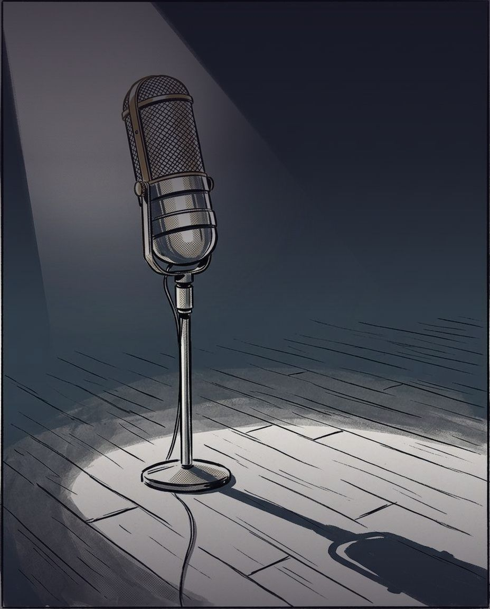
Round 62 · Speciality
Homophones at the Microphone
At a bee these are the ones that end it. The word is said once and two spellings fit the sound, so the only way through is the meaning. Write the spelling that matches the definition given.
12 questions · written answers
Bizzing Bee · Nobody Knows All of These185
Nobody Knows All of TheseHomophones at the Microphone
Write the answer in the box. The key is at the back.
1. A fundamental truth or rule of conduct. Not the head of a school.
2. Writing paper and envelopes. Not "standing still".
3. To complete or make whole. Not a piece of praise.
4. Careful not to be noticed, tactful. Not "separate and distinct".
5. A store of something hidden away. Not a great crowd.
6. The roof of the mouth. Not an artist’s board, nor a wooden shipping platform.
7. A branch of a tree. Not the front of a ship, nor a bending at the waist.
8. Strong coarse cloth used for sails and paintings. Not "to seek votes".
9. To quote a source. Not a location, nor the ability to see.
10. To draw out a response. Not "forbidden by law".
11. A narrow channel of water between two seas. Not "without a bend".
12. A feeling of wounded pride. Not a mountain top, nor a quick look.
of 12
Round 62 · your score
Mark it now, while you still remember which ones you guessed. A guess you got right is not a thing you know.
Bizzing Bee · Nobody Knows All of These186
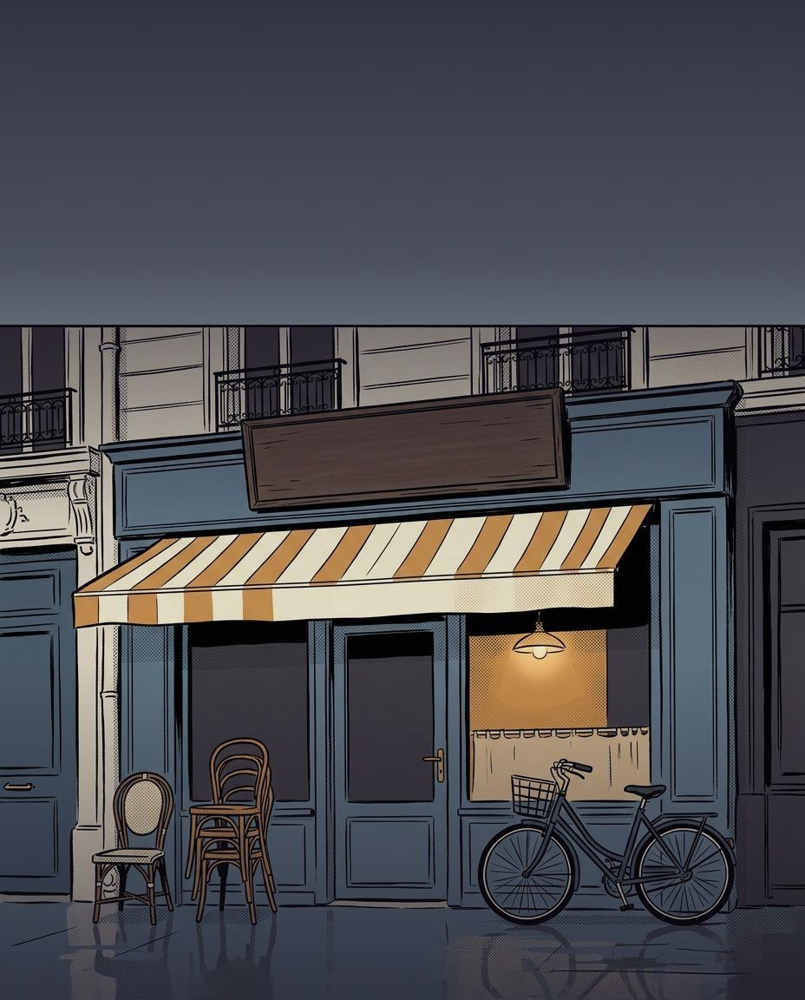
Round 63 · Speciality
French Endings, English Words
A third of English came in from French, and it arrived wearing endings that English never made for itself: -eau, -oir, -et, -que. Those endings are a spelling clue, because they behave the French way, not the English one.
12 questions · multiple choice
Bizzing Bee · Nobody Knows All of These187
Nobody Knows All of TheseFrench Endings, English Words
One at a time. No conferring.
1. A bureau is a desk, then an office, then a government department. What did the French bureau first name?
AA locked box for papers
BThe coarse cloth that covered a desk
CA clerk’s stool
DA room at the front of a house
2. Plateau, plate and flat all descend from one root. What does the French plat mean?
ABareBWideCHighDFlat
3. What is the plural of "bureau" that follows the French?
ABureauiBBureauxCBuroesDBureaus
4. A reservoir holds water. What does the -oir ending mark in French?
AA thing made by the action
BA person who does the action
CA repeated action
DA place where the action of the verb happens
5. Which of these words did NOT come to English from French?
ABalletBRestaurantCCroissantDKindergarten
6. A silhouette is named after Étienne de Silhouette, a French finance minister. Why?
AHis economies were so severe that anything cheap was named for him
BHe invented the technique
CHe collected the portraits
DHe was famous for his profile
7. The -et and -ette endings are diminutives. What does a diminutive do?
AMakes the thing feminine
BMakes the thing plural
CMakes the thing smaller
DMakes the thing older
8. Why does "antique" end in -que rather than -k?
AIt distinguishes it from "antic"
BIt marks the word as a noun
CIt keeps the French spelling of a hard c sound before e
DIt was once pronounced with two syllables at the end
9. A restaurant was originally not a building. What did the French restaurant name?
AA guild of cooks
BA restorative broth
CA table set for guests
DA resting place on a road
10. Which spelling is correct for the frozen dessert, following its French root?
ASorbéBSorbetCSorbetteDSorbay
Bizzing Bee · Nobody Knows All of These188
Nobody Knows All of TheseFrench Endings, English Words
11. In "rendezvous", what does the French phrase literally command?
ACome quietly
BWait for me
CMeet at the hour
DPresent yourselves
12. Why do "champagne" and "cognac" begin with small letters in English?
AThey are trade marks that lapsed
BThey are place names that became common nouns
CThey were never capitalised in French
DThey are shortened from longer phrases
of 12
Round 63 · your score
Mark it now, while you still remember which ones you guessed. A guess you got right is not a thing you know.
Bizzing Bee · Nobody Knows All of These189
Round 64 · Speciality
Words That Changed Sides
A word’s meaning is not fixed by its spelling, and several of the most ordinary words in English once meant something close to the opposite. The spelling stayed put while the sense walked off.
12 questions · multiple choice
Bizzing Bee · Nobody Knows All of These190
Nobody Knows All of TheseWords That Changed Sides
1. Nice comes from Latin nescius. What did nescius mean?
AIgnorantBPreciseCDelicateDPleasant
2. What did "silly" mean in Old English?
ASmall
BPoor
CQuiet
DBlessed or happy
3. What did "awful" mean before it meant terrible?
AVery large
BAncient
CFrightening to look at
DInspiring awe
4. "Clue" was once spelled clew. What is a clew?
AA footprint
BA key
CA ball of thread
DA whisper
5. Quarantine names a specific number. What is it?
ASixty daysBForty daysCThirty daysDTwenty days
6. What did "meat" mean in Middle English?
ACooked flesh
BFood of any kind
CA feast
DA portion or share
7. What did "deer" once mean?
AAny wild animal
BA horned animal
CA hunted animal
DA young animal
8. Decimate names a Roman punishment. What did it do?
AHalved a legion
BDisbanded a unit
CKilled one soldier in ten
DKilled nine in ten
9. What was a "villain" originally?
AA farm worker attached to a villa
BA man outside the law
CA wandering thief
DA soldier without a lord
10. Egregious once meant the opposite of what it means now. What did it mean?
ARare
BOutstandingly good
CWell born
DOrdinary
11. What did "girl" mean in Middle English?
AA servant
BA young person of either sex
CA young sister
DAn unmarried woman
12. What did "naughty" originally describe?
AMaking noise
BBeing unlucky
CBeing disobedient
DHaving nothing
of 12
Round 64 · your score
Mark it now, while you still remember which ones you guessed. A guess you got right is not a thing you know.
Bizzing Bee · Nobody Knows All of These191
Answers. Earn them first.
Checking before trying teaches you nothing twice.
Bizzing Bee · Nobody Knows All of These192
Nobody Knows All of TheseAnswer key
Answer key · 1 of 64
R1 Q1 — B. Mahabalipuram Nearly 30 metres long, it is one of the largest open-air rock reliefs anywhere in the world.
R1 Q2 — A. Kittur Chennamma Her stand came more than thirty years before the great uprising of 1857.
R1 Q3 — D. Pepper water From milagu, pepper, plus tannir, water; British cooks added meat and turned it into a soup.
R1 Q4 — C. Elected, not a monarch Until 1950 the British monarch was still India's formal head of state.
R1 Q5 — D. Tata Steel Charles Page Perin's team found iron ore, coal and water close together, and a steel city was built there.
R1 Q6 — A. South Africa He had spent 21 years there developing satyagraha before coming home aged 45.
R1 Q7 — C. Iftikhar Ali Khan Pataudi He scored a century for England against Australia, then led India on its 1946 tour.
R1 Q8 — A. Buxar The diwani rights granted in 1765 turned a trading company into a tax-collecting government.
R1 Q9 — B. Young India He also edited Navajivan in Gujarati and later Harijan, writing much of each issue himself.
R1 Q10 — D. Birsa Munda He died at just 25, and India now marks his birthday, 15 November, as a tribal pride day.
R1 Q11 — D. Rajendra I His fleet reached the Srivijaya kingdom in today's Indonesia, an amazing distance for the 1000s.
R1 Q12 — B. City of victory Its ruins at Hampi sprawl over 26 square kilometres beside the Tungabhadra river.
R1 Q13 — B. Dholavira Its water engineering was so advanced that sixteen reservoirs ring a city built in near-desert.
R1 Q14 — B. Bhaskara II He compared it to a jar that never fills; Brahmagupta had earlier got this rule wrong.
R1 Q15 — C. United States The framers studied dozens of constitutions and openly borrowed the best ideas from each.
R1 Q16 — A. Verghese Kurien He had trained in metals, not milk, and only stayed at Anand because he had to work off a bond.
R1 Q17 — D. Three strings From sih-tar; a modern sitar actually has around eighteen strings, most of them for resonance.
Bizzing Bee · Nobody Knows All of These193
Nobody Knows All of TheseAnswer key
Answer key · 2 of 64
R1 Q18 — B. True Their drainage system was better than that of many cities built thousands of years later.
R1 Q19 — C. Ireland The framers took the parliamentary system from Britain and the federal court idea from the United States.
R1 Q20 — C. Surya Siddhanta It contains sine tables that are surprisingly close to modern values.
R1 Q21 — C. Chunar Single shafts weighing up to fifty tonnes were floated and dragged hundreds of kilometres.
R1 Q22 — C. Empty Arab scholars translated shunya as sifr, which became both cipher and zero in Europe.
R1 Q23 — B. True He was nominated five times; the Nobel committee later called the omission its greatest regret.
R1 Q24 — B. Great in measure From mahamatra, a high official; a mahout often works with the same elephant for decades.
R1 Q25 — A. A lake's dam Sudarshana lake's dam burst more than once, and each ruler proudly recorded rebuilding it.
R1 Q26 — D. Tipu Sultan Mysorean rockets were the first with iron casings, and British engineers built on them for years afterwards.
R1 Q27 — C. The Delhi Metro He also rebuilt a cyclone-wrecked Pamban rail bridge in 46 days instead of the six months allowed.
R1 Q28 — D. One connected with From Hindi -wala; English borrowed it for anyone defined by their job or gadget.
R1 Q29 — B. Sri Lanka Serendip came from Sanskrit Simhaladvipa through Arabic; Horace Walpole invented the word in 1754.
R1 Q30 — D. Chintz Gingham came from Malay, tartan from Scotland; chintz is from Hindi chint, spotted.
R1 Q31 — B. True Edict thirteen names rulers like Antiochus and Ptolemy, letting historians date Ashoka precisely.
R1 Q32 — D. Bengali Bangla is both the name of the language and the root of bungalow.
R1 Q33 — D. A violent bully From Hindi thag; English narrowed it to street toughs while Hindi kept the sense of trickster.
R1 Q34 — B. Rajasimha Its sandstone walls still carry traces of the original painted plaster.
R1 Q35 — B. The Drafting Committee Ambedkar chaired it, and by the end illness or absence left him doing much of the work himself.
Bizzing Bee · Nobody Knows All of These194
Nobody Knows All of TheseAnswer key
Answer key · 3 of 64
R1 Q36 — D. Bank of India Swadeshi enthusiasm in 1906 led Indian businessmen to launch banks, insurers and mills of their own.
R2 Q1 — A. Aphrodite Her name is usually explained from aphros, "foam" — the origin of the word aphrodisiac.
R2 Q2 — D. He was lame Thrown from Olympus as an infant in most tellings. His Roman name, Vulcan, gave English volcano.
R2 Q3 — D. Hestia Hestia, goddess of the hearth — her name survives in the Latin Vesta and the Vestal Virgins.
R2 Q4 — A. Zeus and Mnemosyne Mnemosyne is Memory — which is why mnemonic and museum come from the same family.
R2 Q5 — D. The caduceus The correct medical symbol is the single-snake rod of Asclepius; the caduceus has two snakes and belongs to commerce.
R2 Q6 — D. Prometheus His name means "forethought"; his brother Epimetheus is "afterthought".
R2 Q7 — A. Pan Pan was believed to cause the sudden groundless terror that could seize a flock, or an army.
R2 Q8 — C. Lethe Drinking from Lethe erased memory; hence lethargic, and lethal by a separate route.
R2 Q9 — C. Metis Metis means "cunning"; the prophecy said her child would overthrow him.
R2 Q10 — B. Demeter Cereal — the grain of Ceres.
R2 Q11 — A. A shield or breastplate bearing a gorgon’s head To be "under the aegis" of someone is still to be under their protection.
R2 Q12 — C. Echo Punished by Hera to repeat only the last words she heard.
R3 Q1 — True Males balance a single egg on their feet for around two months in the darkness.
R3 Q2 — Surveyor General of India Everest himself objected, partly because locals could not easily pronounce his name.
R3 Q3 — 2.72 metres He was still growing when he died in 1940, aged just 22.
R3 Q4 — Travel provisions From viaticum, the food and money packed for a journey, from via, a road.
R3 Q5 — Valeri Polyakov He spent 437 days aboard the Mir station in the 1990s, a mission longer than a Mars trip.
R3 Q6 — Fording Many old towns grew at fords, which is why Oxford and Frankfurt carry the word.
Bizzing Bee · Nobody Knows All of These195
Nobody Knows All of TheseAnswer key
Answer key · 4 of 64
R3 Q7 — Winkel Tripel Its name means triple, because it balances area, direction and distance errors.
R3 Q8 — Amelia Earhart's 1932 Atlantic crossing She had aimed for Paris, landed in a cow pasture, and became the first woman to fly the Atlantic alone.
R3 Q9 — True He also skipped a parachute and used a wicker chair to keep the plane light.
R3 Q10 — Which is Europe's fastest game bird Sir Hugh Beaver could not settle a shooting-party argument, so he commissioned a book of facts.
R3 Q11 — Alpine style It is faster but riskier, and Messner championed it on the highest peaks.
R3 Q12 — Judge, or qadi His legal training let him find work and welcome from Delhi to the Maldives.
R3 Q13 — Andrew Irvine's Mallory's body appeared in 1999; his camera, which might settle everything, has never been found.
R3 Q14 — The network of latitude and longitude lines From Latin for a little grating, the same image as a grill or grid.
R3 Q15 — A memorised circle of star rising and setting points Navigators memorised over 30 star houses and steered from one to the next all night.
R3 Q16 — Aeronautics Aeronautics literally means air-sailing; astronautics means star-sailing.
R3 Q17 — The Waldseemuller map It honoured Amerigo Vespucci, who argued the new lands were a separate continent.
R3 Q18 — Arcturus Arcturus passes directly over Hawaii, so it guided canoes home; the name means star of gladness.
R3 Q19 — The Gamburtsev Mountains The ice sheet may have started growing on these very summits millions of years ago.
R3 Q20 — True Sputnik and Explorer 1 both fell back long ago; the grapefruit-sized Vanguard is still circling.
R3 Q21 — The Gough Map It is drawn with east at the top, and its coast of Scotland is oddly stretched.
R3 Q22 — A snailfish A hadal snailfish was recorded over 8,300 metres down in a Japanese trench in 2022.
R3 Q23 — Henry the Navigator He never sailed far himself, but his charts and caravels reshaped world travel.
Bizzing Bee · Nobody Knows All of These196
Nobody Knows All of TheseAnswer key
Answer key · 5 of 64
R3 Q24 — Mount Everest Radhanath Sikdar's 1852 sums identified Peak XV; George Everest himself disliked the honour.
R3 Q25 — Deep + boat Compare bathysphere, a deep ball, which Beebe and Barton rode to 923 metres in 1934.
R3 Q26 — The James Caird Navigator Frank Worsley got only four sextant sights in 16 days of storm.
R3 Q27 — The Piccards Auguste, Jacques and Bertrand Piccard explored the sky, the deep, and the globe by balloon.
R3 Q28 — True They orbited ten times in December 1968 and read from Genesis on live television.
R3 Q29 — Faxian He walked out across the Taklamakan and sailed home through a typhoon, saving the Sanskrit manuscripts he later helped translate.
R3 Q30 — Bernard Moitessier He simply kept sailing past the finish, writing that he wanted to save his soul.
R3 Q31 — The parka Anorak took a different route into English, straight from Greenlandic annoraaq.
R3 Q32 — The Resolute HMS Resolute's timbers later became the desk used in the American president's office.
R3 Q33 — Rutan Voyager Dick Rutan and Jeana Yeager flew nine days in a cockpit the size of a bathtub.
R3 Q34 — Ibn Battuta His Rihla records nearly 30 years of travel across Africa, Asia and Europe.
R3 Q35 — Trieste, buoyed by petrol Petrol is lighter than water and does not compress, making it a perfect deep-sea float.
R3 Q36 — John Harrison His H4 watch solved the longitude problem that had wrecked fleets for centuries.
R4 Q1 — Odin Woden’s day. Thursday is Thor’s, Friday is Frigg’s, Tuesday is Tyr’s.
R4 Q2 — Yggdrasil An ash tree; a squirrel named Ratatoskr runs up and down it carrying insults.
R4 Q3 — An eye He also hanged himself on Yggdrasil for nine nights to win the runes.
R4 Q4 — Mjolnir Forged by dwarves; its handle came out short because a fly bit the smith.
R4 Q5 — Ragnarok Often mistranslated "twilight of the gods" after Wagner’s Gotterdammerung.
R4 Q6 — Fenrir The god Tyr lost his hand binding him, which is why Tyr is the one-handed god.
Bizzing Bee · Nobody Knows All of These197
Nobody Knows All of TheseAnswer key
Answer key · 6 of 64
R4 Q7 — Valhalla The other half went to Freyja’s field, Folkvangr — a detail usually left out.
R4 Q8 — Sleipnir Loki was its mother, which is a longer story than this book has room for.
R4 Q9 — Bifrost Guarded by Heimdall, who can hear grass growing.
R4 Q10 — Berserker Probably "bear-shirt" — to go berserk.
R4 Q11 — Loki Everything in creation swore not to harm Balder, except the mistletoe, which was thought too young to ask.
R4 Q12 — The Norns Urd, Verdandi and Skuld — past, present and what must be.
R5 Q1 — C. Glory of Hera Odd, since Hera spent the myths making his life difficult.
R5 Q2 — D. The Minotaur The Minotaur was a bull-headed monster who lived inside a maze.
R5 Q3 — B. A group whose inner quarrels will destroy it From the Bible, Mark 3:25 — 'a house divided against itself cannot stand' — made famous by Abraham…
R5 Q4 — B. The caduceus Hermes guided souls and guarded traders, so his staff really means messages and trade.
R5 Q5 — C. Helium Helium was spotted in sunlight before anyone found it on Earth, so Helios was perfect.
R5 Q6 — D. A fixed descriptive nickname Homer keeps repeating them: grey-eyed Athena, swift-footed Achilles, rosy-fingered dawn.
R5 Q7 — D. A small thing that starts a big quarrel In Greek myth, Eris tossed a golden apple marked 'for the fairest' among the goddesses, sparking the…
R5 Q8 — D. Halicarnassus in Asia Minor The tomb of Mausolus was so splendid it became one of the seven wonders.
R5 Q9 — C. They fly without wings Chinese dragons were kind water spirits who brought rain for the crops.
R5 Q10 — A. Snow Her tales come mostly from the deep-snow regions of northern Japan.
R5 Q11 — A. Nyx Homer says Zeus once held back because he feared to upset Nyx.
R5 Q12 — C. Hanuman A whole army of monkeys carried stones to help build the bridge.
R5 Q13 — A. True The Great Sphinx is about 73 meters long and was carved from a single mass of limestone.
Bizzing Bee · Nobody Knows All of These198
Nobody Knows All of TheseAnswer key
Answer key · 7 of 64
R5 Q14 — C. Bear Arktos means bear, and the Great Bear constellation wheels above the north pole.
R5 Q15 — C. Zal The Simurgh gave Zal a feather to burn whenever he needed her help.
R5 Q16 — A. To shelter villagers from a storm He held it up like an umbrella for seven days until the rain stopped.
R5 Q17 — D. The fenghuang Unlike the western phoenix it does not burn; it simply appears in times of peace.
R5 Q18 — A. Air force pilots in the 1920s Pilots blamed unexplained faults on gremlins long before the word reached films.
R5 Q19 — C. Mount Kailash The real Kailash in Tibet is climbed by nobody, out of respect for its sacredness.
R5 Q20 — B. Blodeuwedd Her name means flower face, and the owl still carries her name in Welsh.
R5 Q21 — B. A giant catfish under the islands Prints of the catfish Namazu became hugely popular after the 1855 Edo earthquake.
R5 Q22 — B. It recalls the trick of the wooden horse The name was first used for sneaky software in the 1970s.
R5 Q23 — C. Walls of huge unshaped stones Greeks found Mycenaean walls so massive they assumed the Cyclopes had built them.
R5 Q24 — B. The household Families left him porridge behind the stove to keep him friendly.
R5 Q25 — D. Osiris Osiris's green skin stood for new plants and fresh growth.
R5 Q26 — B. True It blends forms from different regions and centuries, a special language built for singing epic.
R5 Q27 — C. The Tain The full title is Tain Bo Cuailnge, and Cu Chulainn defends Ulster almost single-handed.
R5 Q28 — D. Sky, sea and underworld Zeus, Poseidon and Hades drew lots, and Hades' helmet came from the Cyclopes.
R5 Q29 — B. Dawn Borealis comes from Boreas, the Greek north wind, so the phrase means northern dawn.
R5 Q30 — A. Wax in their ears Odysseus left his own ears open but had himself tied to the mast so he could listen safely.
R5 Q31 — B. Sisyphus Nobody in the world could die while Death was tied up, which annoyed the gods immensely.
Bizzing Bee · Nobody Knows All of These199
Nobody Knows All of TheseAnswer key
Answer key · 8 of 64
R5 Q32 — A. A story of how a city or people began Rome's she-wolf and Mexico's eagle on a cactus are both foundation myths.
R5 Q33 — D. Secret or mystery That older sense survives in words like rune-craft and in the German raunen, to whisper.
R5 Q34 — A. Xuanzang Journey to the West turned his very real expedition into a fantasy with a monkey.
R5 Q35 — A. Kamadhenu Art shows Kamadhenu with many gods living inside her body, one in each part.
R5 Q36 — C. Asclepius Her sister was Hygieia, and the word hygiene comes from that sister's name.
R6 Q1 — B. Myanmar Also spelled Ayeyarwady. Its dolphins fish cooperatively with people.
R6 Q2 — C. The Uruguay It joins the Parana to form the Rio de la Plata.
R6 Q3 — D. The Arctic Ocean Siberia’s great rivers run north, which is why they flood — the mouths thaw last.
R6 Q4 — D. The Okavango It empties into the Kalahari and evaporates — an inland delta.
R6 Q5 — A. The Darling Together they drain about a seventh of the continent.
R6 Q6 — D. The Danube It passes through or touches ten countries, more than any other river.
R6 Q7 — C. China Rivers commonly change name at a border; the Mekong changes it five times.
R6 Q8 — D. The Rio Negro Where the black Rio Negro meets the pale Solimoes the two run side by side for kilometres without mixing.
R6 Q9 — A. Pakistan India, Hindu and Hindi all descend from the river’s Sanskrit name, Sindhu.
R6 Q10 — D. The Tigris Mesopotamia means "between the rivers" — the Tigris and the Euphrates.
R6 Q11 — C. Western and eastern Siberia West of it is flat plain; east of it, high plateau.
R6 Q12 — C. The Rio Grande Mexico calls it the Rio Bravo del Norte.
R8 Q1 — Canberra Chosen as a compromise because Sydney and Melbourne could not agree.
R8 Q2 — Ankara Istanbul is much larger, and was the capital under the Ottomans as Constantinople.
Bizzing Bee · Nobody Knows All of These200
Nobody Knows All of TheseAnswer key
Answer key · 9 of 64
R8 Q3 — Ottawa Queen Victoria picked it, partly because it sat on the border of Upper and Lower Canada.
R8 Q4 — Brasilia Built from nothing between 1956 and 1960; from the air the plan looks like an aeroplane.
R8 Q5 — Bern Officially the "federal city" — Switzerland has never formally named a capital.
R8 Q6 — Wellington The southernmost capital city in the world.
R8 Q7 — Abuja Replaced Lagos in 1991, chosen for being central and ethnically neutral.
R8 Q8 — Astana Renamed Nur-Sultan in 2019 and back to Astana in 2022. Astana simply means "capital".
R8 Q9 — Sucre La Paz holds the government; Sucre holds the supreme court. Bolivia has two.
R8 Q10 — Naypyidaw Built in secret and unveiled in 2005; its roads are twenty lanes wide and largely empty.
R8 Q11 — Rabat Casablanca is far larger and much better known.
R8 Q12 — Hanoi Ho Chi Minh City, formerly Saigon, is the larger of the two.
R8 Q13 — Dodoma Officially since 1974, though much of the government stayed in Dar es Salaam for decades.
R8 Q14 — Sri Jayawardenepura Kotte Colombo is the commercial capital and is what most people say.
R9 Q1 — C. chardonnay A small Burgundy village gave its name to a green-skinned grape that turned out to grow almost anywhere
R9 Q2 — B. Joule James Joule was a brewer who did physics on the side
R9 Q3 — C. Ozymandian Shelley wrote the sonnet as a bet with a friend over who could write the better poem about Egypt.
R9 Q4 — A. False The Argonauts were named for their ship, not their leader — argonaut simply means Argo-sailor.
R9 Q5 — D. Messier Objects Charles Messier was hunting comets and kept being fooled by fuzzy things that turned out not to be comets.
R9 Q6 — A. helium During an eclipse in 1868 astronomers saw a yellow line in the sun's spectrum that matched no known element.
R9 Q7 — B. True A green gem found in the Urals was presented on the day the future tsar came of age. Under candlelight it turned raspberry red.
Bizzing Bee · Nobody Knows All of These201
Nobody Knows All of TheseAnswer key
Answer key · 10 of 64
R9 Q8 — C. kniphofia A German physician published books illustrated by pressing inked plants straight onto the page.
R9 Q9 — B. Caesarean Section Probably not named after Caesar at all.
R9 Q10 — D. Hephaestean Hephaestus was thrown off Olympus as an infant and walked with difficulty afterwards — the only Greek god with a disability.
R9 Q11 — B. bogart To bogart something is to hog it, from the way Bogart kept a cigarette clamped in his mouth without ever seeming to smoke it.
R9 Q12 — D. Pharisaic The Pharisees were a reform movement that made scripture accessible outside the Temple, and rabbinic Judaism descends from them.
R9 Q13 — B. epsom A farmer noticed his cattle would not drink from one spring on a Surrey common. The water was bitter with magnesium sulphate.
R9 Q14 — A. Listerism Lister sprayed carbolic acid in operating theatres and death rates collapsed.
R9 Q15 — A. True Metals are made of tiny crystal grains, and cracks travel easily inside a grain but struggle to cross a boundary.
R9 Q16 — D. Parkinson Disease James Parkinson called it the shaking palsy in 1817
R9 Q17 — B. Holmesian Conan Doyle based Holmes on his medical teacher Joseph Bell, who could diagnose a patient's trade and travels before they spoke.
R9 Q18 — A. A low padded seat or footstool without a back An empire that lasted six hundred years is now best known in English homes as a padded footstool.
R9 Q19 — A. Kantian Kant kept to a schedule so exact that neighbours in Konigsberg were said to set their clocks by his afternoon walk.
R9 Q20 — B. Dickensian Dickens was twelve when his father went to debtors' prison and he was sent to paste labels on bottles in a factory.
R9 Q21 — A. Solomonic Two women each claimed the same baby. Solomon called for a sword and offered them half each.
R9 Q22 — C. Adonis The name is not Greek but Semitic — adon means lord, and the story travelled west from Phoenicia.
R9 Q23 — D. Panacea Panacea and Hygieia were sisters, daughters of the god of medicine — one the cure for everything, the other the prevention.
Bizzing Bee · Nobody Knows All of These202
Nobody Knows All of TheseAnswer key
Answer key · 11 of 64
R9 Q24 — B. jacquard Jacquard's loom read its pattern from a chain of punched cards.
R9 Q25 — B. gouda Gouda is named for a marketplace, not a dairy.
R9 Q26 — B. Martini Every origin story for the martini is contested: a town called Martinez in California
R9 Q27 — B. boltzmann constant An Austrian physicist argued that heat is just particles jostling and that entropy counts the ways they can be arranged.
R9 Q28 — C. Nicotine Jean Nicot was a French ambassador who sent tobacco seeds to the queen as a headache remedy.
R9 Q29 — A. listerine Listerine was sold first as a surgical antiseptic, then as a floor cleaner and a cure for gonorrhoea.
R9 Q30 — C. doublethink Orwell's Party required citizens to believe two opposite things at once and to be sincere about both
R9 Q31 — C. Apollonian Nietzsche paired Apollonian order against Dionysian ecstasy and argued great art needs both
R9 Q32 — C. Sherlockian Conan Doyle modelled Holmes on his medical teacher Joseph Bell, who could deduce a patient's trade and travels before they spoke.
R9 Q33 — B. pullman Pullman built a whole company town for his workers, then cut wages without cutting rents.
R9 Q34 — B. Narcissism Narcissus saw his reflection in a pool, did not realise it was himself, and could not leave.
R9 Q35 — C. Reaganomics The argument that cutting taxes at the top increases total revenue by growing the economy.
R9 Q36 — A. False Eirene was one of three sisters who kept the seasons and the social order.
R10 Q1 — A. Dick the Butcher, in Henry VI Part 2 He is a rebel proposing to destroy civil order — the line is not a compliment to the speaker.
R10 Q2 — C. Macbeth On being told his wife is dead.
R10 Q3 — C. Miranda Her name means "to be wondered at" — Shakespeare seems to have coined it.
R10 Q4 — C. Titania Oberon is her husband; Puck is Oberon’s servant.
R10 Q5 — C. Iago He has more lines than Othello, and never explains himself: "Demand me nothing... From this time forth I never will speak word."
Bizzing Bee · Nobody Knows All of These203
Nobody Knows All of TheseAnswer key
Answer key · 12 of 64
R10 Q6 — C. Cordelia Her answer to "what can you say?" is "Nothing, my lord."
R10 Q7 — C. Falstaff Reportedly written into Merry Wives because Elizabeth I wanted to see him in love.
R10 Q8 — A. Caesar Three Latin words in an English play — Shakespeare’s way of marking the moment as history.
R10 Q9 — C. Bottom A "bottom" was a spool for winding thread — the joke is a weaver’s joke.
R10 Q10 — D. Horatio "Report me and my cause aright to the unsatisfied."
R10 Q11 — C. Malvolio His name means roughly "ill-will" in Italian.
R10 Q12 — B. Sebastian Sebastian is in Twelfth Night and The Tempest.
R11 Q1 — Equilibrium Your inner ear, your eyes and your muscles all report in to keep you steady.
R11 Q2 — Inside the bones Soft marrow deep in your bones churns out fresh blood cells all the time.
R11 Q3 — Medulla oblongata Even while you sleep, the medulla keeps these life-support jobs running.
R11 Q4 — Grease or tallow That is why the glands producing it are called sebaceous glands.
R11 Q5 — Glucagon It tells your liver to unpack stored glycogen and release glucose into the blood.
R11 Q6 — Bone
R11 Q7 — The spoke of a wheel It pivots around the ulna, sweeping like a spoke turning on a hub.
R11 Q8 — The thymus It shrinks steadily after puberty, having already trained a lifetime's supply of cells.
R11 Q9 — Rene Laennec Laennec was too shy to press his ear to a patient's chest, so he invented a polite alternative.
R11 Q10 — To eat So a macrophage is literally a 'big eater' among your white blood cells.
R11 Q11 — Be wildly frustrated or worried From the ancient mourning custom of literally tearing one's hair, described in Homer and the Bible.
R11 Q12 — Where the optic nerve leaves the retina There are no light sensors there, but your brain quietly fills in the gap.
R11 Q13 — To look at someone with special interest or warning American slang, early 1900s, from the days when one loaded look said everything.
Bizzing Bee · Nobody Knows All of These204
Nobody Knows All of TheseAnswer key
Answer key · 13 of 64
R11 Q14 — Under the skin A doctor can give some medicines by a subcutaneous injection under the skin.
R11 Q15 — To cool the brain and take in air Scientists think a big yawn helps cool your brain and pull in a fresh gulp of air.
R11 Q16 — 26 Your two feet together hold about a quarter of all the bones in your body.
R11 Q17 — The atlas The same mythological name is why a book of maps became known as an atlas.
R11 Q18 — Santiago Ramon y Cajal Cajal and Golgi shared the prize while flatly disagreeing about what they had each seen.
R11 Q19 — To tease someone playfully or fool them Spanish 'tomar el pelo'; why grabbing hair means teasing is lost — one old guess points to barbers,…
R11 Q20 — Apoptosis Around fifty billion of your cells quietly bow out this way every single day.
R11 Q21 — Chest Doctors sometimes call its pointed lower tip the 'xiphoid', meaning sword-shaped.
R11 Q22 — Oxytocin From Greek oxys, swift, and tokos, birth, because it makes the womb contract.
R11 Q23 — Veins Veins often look blue through your skin, but the blood inside is still red.
R11 Q24 — Surgical reshaping A rhinoplasty is an operation to reshape the nose.
R11 Q25 — Feet The root 'pod' comes from a Greek word for foot.
R11 Q26 — Macrophage Its name means 'big eater', and a single one can gobble up a hundred bacteria.
R11 Q27 — The axilla That is why swollen glands under the arm are described as axillary nodes.
R11 Q28 — Brain and spinal cord Nerves outside these two form the peripheral nervous system.
R11 Q29 — The small intestine The small intestine is about 6 metres long, far longer than the large one; it is just narrower.
R11 Q30 — Hair They are as fine as a hair, so blood cells squeeze through one by one.
R11 Q31 — Anatomist The word anatomy literally means 'cutting up', which is how early study was done.
R11 Q32 — Trapping germs Lymph nodes can swell up when they are busy fighting an infection.
Bizzing Bee · Nobody Knows All of These205
Nobody Knows All of TheseAnswer key
Answer key · 14 of 64
R11 Q33 — The circle of Willis Thomas Willis mapped it in 1664, and it works as the brain's built-in emergency detour.
R11 Q34 — Sympathetic It floods you with adrenaline, widening pupils and speeding the heart in an instant.
R11 Q35 — The optic disc Close one eye and the missing patch never appears, because your brain invents the details.
R11 Q36 — An antigen Antibodies are the body's reply; antigens are the messages that start the argument.
R12 Q1 — A. Johann Wolfgang von Goethe The poet was a serious mineral collector; the mineral is pronounced GER-tite.
R12 Q2 — C. Curium Curium honours both Marie and Pierre Curie. Sklodowskite, after her maiden name, is also real.
R12 Q3 — D. A French geologist The Dolomite mountains are named after the rock, which is named after the man — a three-step eponym.
R12 Q4 — C. The Smithsonian Institution James Smithson left his fortune to found the Smithsonian, a country he had never visited.
R12 Q5 — D. Tsar Alexander II of Russia Found in the Urals, reportedly on the day the future tsar came of age.
R12 Q6 — D. A Russian mineralogist and statesman The mineral gave its name to an entire crystal structure, used far beyond the original stone.
R12 Q7 — A. Davyne Humphry Davy, who also gave the world the miner’s safety lamp.
R12 Q8 — A. Yale He founded the American Journal of Science, which is still running.
R12 Q9 — D. The first rare-earth element Yttrium — and gadolinium is named for him as well, making him one of very few people with both a mineral and an element.
R12 Q10 — C. In a meteorite crater Henri Moissan found it in Canyon Diablo, Arizona, and mistook it at first for diamond.
R12 Q11 — C. None — Brownian motion is named after a botanist Robert Brown was a botanist, and the phenomenon is named for him; the trap here is assuming every famous name has a mineral.
R12 Q12 — C. A Greek sky god Ouranos, the sky. Uranium is named for the planet, discovered eight years earlier.
R13 Q1 — D. Wraps around the kernel You type into the shell, and it passes your commands inward to the kernel.
Bizzing Bee · Nobody Knows All of These206
Nobody Knows All of TheseAnswer key
Answer key · 15 of 64
R13 Q2 — D. Laser pointer The buyer explained he collected broken laser pointers — the founder decided the internet would be fine.
R13 Q3 — D. First in, first out Printers use queues so documents come out in the order people sent them.
R13 Q4 — D. Rugby The name suggests the whole team moving down the field together, passing the ball among themselves.
R13 Q5 — B. Moore's law Gordon Moore's original article predicted only ten years ahead — the trend then held for half a century.
R13 Q6 — C. Bug They taped the moth into the logbook in 1947 with the note that they were 'debugging' the machine.
R13 Q7 — A. Alan Turing Turing buried silver against wartime inflation and never found it again — the maps he drew were too clever.
R13 Q8 — C. A cloud shape on diagrams On old diagrams a fluffy cloud meant 'the network, details not important' — the name stuck.
R13 Q9 — B. Be present somewhere far away through a machine Combining 'tele' (far) with presence, they let hospital patients attend school from their beds.
R13 Q10 — A. Number Scribes blended al-Khwarizmi's name with 'arithmos' — which is why we spell it with 'rithm', not 'rism'.
R13 Q11 — D. Luigi Menabrea Menabrea later became Italy's prime minister, but his lasting fame rests on the paper Ada expanded.
R13 Q12 — A. Trays of metal type in a printing shop Capitals lived in the upper case above the compositor's bench, small letters in the lower one.
R13 Q13 — A. American Standard Code for Information Interchange Its 1963 table fixed the numbers for letters and symbols — capital A has been 65 ever since.
R13 Q14 — D. Jumpman He was Jumpman in Donkey Kong (1981) before Nintendo renamed him Mario.
R13 Q15 — A. The electron Electrons flowing through circuits are what make every computer work.
R13 Q16 — A. The Science Museum in London It has 8,000 parts, weighs five tonnes — and it works exactly as Babbage predicted it would.
R13 Q17 — D. Soon after it is released Many attacks target holes that were already fixed — the victims simply had not updated.
Bizzing Bee · Nobody Knows All of These207
Nobody Knows All of TheseAnswer key
Answer key · 16 of 64
R13 Q18 — B. Four Half a byte is a nibble — and one nibble is exactly one hexadecimal digit.
R13 Q19 — B. Join a network without cables Despite the name, Wi-Fi is not short for anything — it was chosen because it sounded catchy.
R13 Q20 — C. The Y2K bug Programs saving years as two digits had to be checked worldwide — the enormous clean-up mostly worked.
R13 Q21 — A. Radio waves Heinrich Hertz proved invisible electromagnetic waves exist — the same waves Wi-Fi uses today.
R13 Q22 — A. Harvard Harvard's Cruft Laboratory reputedly accumulated junk, and the name became a programmer's insult.
R13 Q23 — A. GNU's Not Unix Richard Stallman loved recursive acronyms — the name explains itself by referring to itself.
R13 Q24 — A. Airport shuttle buses Programmer Ward Cunningham rode the 'Wiki Wiki' shuttle in Honolulu and borrowed the name for fast-editing pages.
R13 Q25 — B. Deep Blue versus Kasparov IBM retired Deep Blue in 1997, leaving Kasparov permanently without the rematch he wanted.
R13 Q26 — D. Transistors Tubes glowed hot and burned out often; transistors replaced them and made computers small.
R13 Q27 — D. Metasyntactic variables They appear in textbooks worldwide, and their use is documented in a formal internet standards document.
R13 Q28 — D. Programmable electronic digital computer It stayed an official secret for thirty years, so ENIAC got the glory Colossus had earned first.
R13 Q29 — D. Blinky Each ghost uses a different rule: Blinky targets you, Pinky aims ahead, and Clyde wanders off.
R13 Q30 — B. Ruby Yukihiro Matsumoto wanted a name a step up from Perl, and picked the gem that follows pearl in lists.
R13 Q31 — C. First glued sheet 'Protokollon' was the first sheet glued to a scroll, carrying its summary — hence rules and formalities.
R13 Q32 — A. Dahl and Nygaard They were modelling ships and queues, and needed a way to describe many similar things at once.
R13 Q33 — B. Pong Atari got a call saying the machine was broken — it had simply jammed solid with quarters.
Bizzing Bee · Nobody Knows All of These208
Nobody Knows All of TheseAnswer key
Answer key · 17 of 64
R13 Q34 — C. Boolean satisfiability Once one problem was pinned down, hundreds of others were shown to be secretly the same difficulty.
R13 Q35 — C. Programming Languages: History and Fundamentals Sammet catalogued hundreds of languages when most people assumed there were only a handful.
R13 Q36 — D. Red, green, and blue Mixing red, green, and blue light in different amounts can make millions of screen colours.
R14 Q1 — Armistice From Latin arma, "arms", and -stitium, "a stopping".
R14 Q2 — Barrack Via Spanish barraca, a soldier’s hut.
R14 Q3 — Khaki Adopted by the British in India so that troops would not be visible at a distance.
R14 Q4 — Camouflage A word civilians did not use before 1914.
R14 Q5 — Ambush The bush is really there — embuscher, to hide in the bushes.
R14 Q6 — Blitz Short for Blitzkrieg; in Britain "the Blitz" came to mean the bombing of the cities.
R14 Q7 — No-man’s-land Recorded in English from the fourteenth century, but fixed in its modern sense by 1914.
R14 Q8 — Squad From Italian squadra, a square — the shape the formation made.
R14 Q9 — Capitulate Terms of surrender were set out under headings — capitula.
R14 Q10 — Ration From Latin ratio, a reckoning — the calculated share.
R14 Q11 — Decimate A Roman punishment for mutiny: one man in ten, chosen by lot.
R14 Q12 — Veteran From Latin vetus, "old".
R14 Q13 — Shell shock Coined in 1915; later called combat fatigue, and later still post-traumatic stress.
R14 Q14 — Entrench From the French trencher, to cut.
R16 Q1 — B. Orion The belt stars are Alnitak, Alnilam and Mintaka — all Arabic names.
R16 Q2 — D. A W or M She was placed in the sky upside down as a punishment for vanity.
R16 Q3 — B. Ursa Minor The pole star is not especially bright — it is useful because it barely moves.
R16 Q4 — C. Crux The smallest of the 88 constellations by area.
Bizzing Bee · Nobody Knows All of These209
Nobody Knows All of TheseAnswer key
Answer key · 18 of 64
R16 Q5 — A. Lyra The lyre of Orpheus. Vega will be the pole star again in about 12,000 years.
R16 Q6 — A. Cetus Cetus is still the root of cetacean, the word for whales and dolphins.
R16 Q7 — B. Argo Navis Split into Carina the keel, Puppis the stern and Vela the sails.
R16 Q8 — D. Orion As Scorpius rises in the east, Orion sets in the west.
R16 Q9 — B. The hand of the giant A mistranscription of yad al-jauza turned the y into a b, and the name stuck.
R16 Q10 — D. Libra The scales. Its brightest stars still carry Arabic names meaning the northern and southern claws — it was once part of Scorpius.
R16 Q11 — B. Taurus Seven sisters in the myth; most people see six with the naked eye.
R16 Q12 — A. Cygnus Also called the Northern Cross. Cygnet, a young swan, is the same root.
R17 Q1 — A. Wassily Kandinsky Kandinsky trained as a lawyer, then abandoned it after seeing a Monet haystack painting.
R17 Q2 — A. preconceived A 'preconceived' idea is one formed before the evidence arrives — the enemy of good science.
R17 Q3 — D. Leo Tolstoy Tolstoy played piano daily and wrote a whole novella about the effect of a violin sonata.
R17 Q4 — B. glade A glade is an open clearing in a wood — his imagined nine bean-rows sit inside one.
R17 Q5 — A. Hard times reveal true character He preached this while facing jail, threats, and hardship without abandoning peace.
R17 Q6 — B. Isaac Asimov Asimov coined 'robotics' in a 1941 story — and wrote or edited books in nine Dewey categories.
R17 Q7 — A. In Memoriam Tennyson wrote In Memoriam over 17 years, mourning a friend who died at 22.
R17 Q8 — A. Charles W. Eliot Eliot claimed a liberal education could fit on five feet of bookshelf — and then assembled it.
R17 Q9 — C. B. B. King King played an estimated 15,000 concerts and named every guitar he owned Lucille.
R17 Q10 — C. Marcus Aurelius His Meditations survived by accident — the emperor was writing only to himself.
Bizzing Bee · Nobody Knows All of These210
Nobody Knows All of TheseAnswer key
Answer key · 19 of 64
R17 Q11 — A. John Frederick William Herschel He catalogued thousands of southern stars from the Cape of Good Hope — his father had done the north.
R17 Q12 — B. read Bethune founded a college with $1.50 and faith — it still thrives in Florida today.
R17 Q13 — B. Galileo Galilei Galileo timed rolling balls by pulse and by weighing water — the first quantitative physics experiments.
R17 Q14 — B. Judge ideas by their merit, not the speaker's fame Scientists call the opposite mistake an 'appeal to authority.'
R17 Q15 — D. Victor Hugo Hugo spent nineteen years in exile, refusing to return while Napoleon III ruled France.
R17 Q16 — C. Linus Pauling Pauling is the only person to win two unshared Nobel Prizes — chemistry and peace.
R17 Q17 — D. Seneca Seneca tutored Nero — and wrote calmly about fortune while living at its mercy.
R17 Q18 — A. Johannes Kepler Kepler spent years on Mars's orbit before realizing nature had chosen an ellipse, not a circle.
R17 Q19 — A. Jorge Luis Borges Borges went blind in his fifties — while serving as director of Argentina's National Library.
R17 Q20 — B. Liberty Hyde Bailey Bailey helped found the modern science of horticulture and collected over 250,000 plant specimens.
R17 Q21 — B. True Bradbury typed Fahrenheit 451 on a rented basement typewriter for ten cents per half hour.
R17 Q22 — C. Ray Bradbury Bradbury typed Fahrenheit 451 in a UCLA library basement for a total of about nine dollars.
R17 Q23 — C. Catherine Cook Cook co-founded a social network as a teenager with her brother.
R17 Q24 — A. True A newspaper had confused him with an ill cousin — Twain found it hilarious.
R17 Q25 — A. Leo Tolstoy Tolstoy practiced what he preached, giving up wealth to live simply.
R17 Q26 — B. Johann Wolfgang von Goethe Goethe spent nearly 60 years writing his masterpiece Faust — beginning boldly, again and again.
R17 Q27 — C. Jackson Pollock Pollock laid his canvases flat on the floor and dripped paint while walking around them.
Bizzing Bee · Nobody Knows All of These211
Nobody Knows All of TheseAnswer key
Answer key · 20 of 64
R17 Q28 — C. Honesty frees you from worry With nothing to hide and no lies to track, an honest mind can rest.
R17 Q29 — C. vibration Tesla's resonance experiments once shook his whole New York neighborhood.
R17 Q30 — D. often 'Oft' was standard Elizabethan English — it survives today only in 'oft-quoted.'
R17 Q31 — B. Toni Morrison Morrison was the first Black woman to win the Nobel Prize in Literature.
R17 Q32 — B. Confucius Confucius wandered for years seeking a ruler who would listen; his students preserved every saying.
R17 Q33 — C. Immanuel Kant Kant reportedly walked the same route at the same minute daily — organized life indeed.
R17 Q34 — A. Victor Borge Borge, the 'Clown Prince of Denmark,' mixed piano concerts with comedy.
R17 Q35 — A. a brief rule of conduct From Latin maxima propositio, 'greatest proposition' — the biggest truth in the fewest words.
R17 Q36 — C. Francis Bacon Bacon, a founder of the scientific method, read exactly the way he experimented — deliberately.
R18 Q1 — A. Ytterby Yttrium, ytterbium, terbium and erbium — all from one quarry.
R18 Q2 — C. Argon Argos, idle — because it refused to react with anything.
R18 Q3 — B. A hydrogen bomb test The Ivy Mike test, 1952; the findings were classified for three years.
R18 Q4 — B. Krypton And lanthanum, from lanthanein, means almost the same thing — "to lie hidden".
R18 Q5 — A. The rainbow Its salts are many-coloured. The iris of the eye is the same word.
R18 Q6 — A. Barium Greek barys, heavy — the same root as barometer.
R18 Q7 — B. A goblin Miners blamed the kobold when the ore gave off poisonous fumes and yielded no copper.
R18 Q8 — C. Promethium Fitting for an element that does not occur in usable quantities in nature.
R18 Q9 — D. With food and water always just out of reach The metal resists absorbing acid — it will not take up what surrounds it. Tantalise is the same name.
R18 Q10 — B. Curium Meitnerium honours Lise Meitner, who explained nuclear fission and was left off the Nobel.
Bizzing Bee · Nobody Knows All of These212
Nobody Knows All of TheseAnswer key
Answer key · 21 of 64
R18 Q11 — B. France (Gallia) Its discoverer’s name, Lecoq, also means "the rooster" — gallus in Latin. He denied the pun.
R18 Q12 — C. Helium Helios is the Sun, not a planet — the trap. Helium was found in the solar spectrum before it was found on Earth.
R19 Q1 — Musk The grapes were named for their heavy, musky perfume.
R19 Q2 — Pumpernickel The long, gentle bake caramelizes the bread's own sugars to near-black.
R19 Q3 — Menorca One story says a French chef discovered the sauce there after a 1756 battle.
R19 Q4 — Linzer torte Recipes for the Linzer torte survive from as far back as the 1650s.
R19 Q5 — Trapped air Air is a poor conductor of heat, so the whipped meringue shields the ice cream.
R19 Q6 — True True wasabi is costly and fades fast, so cheaper horseradish paste usually stands in.
R19 Q7 — True Salt outside the cells pulls water across their walls, firming and seasoning the flesh.
R19 Q8 — Mango Citrus fruits like lemons and limes are related, but a juicy mango belongs to a different family!
R19 Q9 — Master of the house Usually shortened to 'maitre d', this is the person who runs the dining room.
R19 Q10 — Acetic acid Vinegar forms when bacteria turn the alcohol in cider or wine into acetic acid.
R19 Q11 — Mushroom Mushrooms are more closely related to animals than to plants in the tree of life!
R19 Q12 — Expert knowledge and taste 'Connoisseur' comes from a French word meaning 'one who knows'.
R19 Q13 — A completely different situation or matter 'Kettle of fish' comes from 1700s Scottish riverside picnics where fresh salmon boiled in huge…
R19 Q14 — Sugars and proteins reacting in the heat It's called the Maillard reaction — the same one that browns cookies and toasted marshmallows!
R19 Q15 — Cold From Latin 'frigus', cold; to refrigerate is literally to make cold again.
R19 Q16 — Small lobster Scampi are langoustines, small lobster-like shellfish, not simply large shrimp.
R19 Q17 — Sugar Halva can be crumbly from sesame or gel-like when made from flour and syrup.
Bizzing Bee · Nobody Knows All of These213
Nobody Knows All of TheseAnswer key
Answer key · 22 of 64
R19 Q18 — Strings From 'spago', string or twine, made small and plural for the thin strands.
R19 Q19 — Macedonia Alexander's Macedonian empire was famed as a jumble of many nations.
R19 Q20 — To make a huge fuss over something small French 'en faire tout un fromage' — from milk (nothing) you inflate a whole cheese.
R19 Q21 — Strawberry Each tiny 'seed' on a strawberry is really a separate small fruit of its own.
R19 Q22 — Burning hot Early mustard mixed the ground seeds with grape must, giving 'mustum ardens', burning must.
R19 Q23 — Salty and full, not sweet Savory dishes are the opposite of sweet ones, rich in salt and umami.
R19 Q24 — Japanese cow 'Wa' means Japanese and 'gyu' means cattle, so wagyu is any Japanese breed.
R19 Q25 — Eponyms An eponym is a word taken from the name of a real or mythical person.
R19 Q26 — Caffeine Plants evolved caffeine as a pesticide, but it wakes humans up instead.
R19 Q27 — Little cake Dutch settlers in New York brought both the treat and the word to America.
R19 Q28 — Boil or foam Fittingly, active yeast makes dough and brewing liquids froth and bubble.
R19 Q29 — Lemon Lemon juice weakens the paper so those spots brown first when warmed.
R19 Q30 — Flowers In Greek myth, nectar was also the drink of the gods on Mount Olympus.
R19 Q31 — Yeast Yeast are tiny fungi that burp carbon dioxide bubbles into the dough!
R19 Q32 — Annatto Cheddar is naturally pale; annatto gives it that familiar orange color.
R19 Q33 — Cheddar Cheddaring presses out whey and gives the cheese its firm, dense body.
R19 Q34 — New York They were first served at the Anchor Bar in Buffalo, New York, in 1964.
R19 Q35 — Wine and drinks The word once described a servant in charge of transporting a household's supplies.
R19 Q36 — Blood sugar Slow-digesting, low-GI foods give steadier energy than a sugary snack.
R32 Q1 — C. Anubis The Egyptian name was closer to Inpu; Anubis is the Greek.
R32 Q2 — C. Thoth Ibis-headed. The Greeks matched him with Hermes, giving "hermetic".
R32 Q3 — C. A feather The feather of Maat, meaning truth and order.
R32 Q4 — B. Isis Her cult reached as far as Roman Britain.
R32 Q5 — B. Hieroglyphic and demotic The third was Greek, which is how the other two were cracked.
R32 Q6 — A. Ankh The djed pillar means stability and the was sceptre means power — a full set.
R32 Q7 — C. Tutankhamun A minor king; the fame is entirely down to the tomb surviving.
R32 Q8 — A. Ruling as a female pharaoh She is often depicted with a false beard, the pharaonic uniform.
Bizzing Bee · Nobody Knows All of These224
Nobody Knows All of TheseAnswer key
Answer key · 33 of 64
R32 Q9 — D. Great house Per-aa — the palace, used for the person the way "the White House" is used today.
R32 Q10 — C. Set His animal has never been reliably identified with any real species.
R32 Q11 — A. Roll the sun across the sky From watching dung beetles roll a ball — the god Khepri.
R32 Q12 — D. An oval enclosing a royal name French for "cartridge" — Napoleon’s soldiers thought the ovals looked like gun cartridges.
R33 Q1 — D. Interval 'Inter' means between—time between school classes is called an interval too.
R33 Q2 — D. Hearing The Latin ending '-orium' means 'a place for,' just like in 'aquarium.'
R33 Q3 — B. To strike Every percussion instrument is struck, tapped, or hit—the name says exactly that.
R33 Q4 — D. Jumping flea One story says a nimble-fingered player nicknamed 'the jumping flea' made the instrument famous.
R33 Q5 — D. Layers of fabric and paper hardened with glue Principal dancers can soften and wear out a pair of pointe shoes in a single performance.
R33 Q6 — B. True Moving the slide makes the air tube longer or shorter to change the pitch.
R33 Q7 — D. Bo Diddley That 'shave-and-a-haircut' beat turns up in songs by Buddy Holly, U2, and George Michael.
R33 Q8 — B. So the bow grips the string enough to make it vibrate Rosin is hardened tree resin—without it, a bow slides silently across the string.
R33 Q9 — B. True The larynx grows quickly, and for a while the voice can squeak and dive without warning.
R33 Q10 — A. Green room Theaters have used the name since the 1600s, though nobody is sure the first one was green.
R33 Q11 — D. Hip joints Forcing turnout from the knees injures dancers—teachers watch for it constantly.
R33 Q12 — B. Search underground for oil Andy Hildebrand analyzed seismic echoes—then pointed the same trick at wobbly vocals.
R33 Q13 — D. Tuba The tuba's deep notes are the foundation the whole brass section sits on.
R33 Q14 — B. Sliding smoothly from one pitch to the next From Italian 'portare', to carry—the voice is carried between the notes rather than jumping.
Bizzing Bee · Nobody Knows All of These225
Nobody Knows All of TheseAnswer key
Answer key · 34 of 64
R33 Q15 — D. Accordion German Akkord = musical chord/harmony
R33 Q16 — B. False It's made of metal, but its buzzing cane reed makes it a woodwind!
R33 Q17 — A. Record library It was modeled on 'bibliothèque' (library)—a library of discs instead of books.
R33 Q18 — B. Campanology From Latin 'campana', a bell—English change-ringers give their patterns names like Grandsire Triples.
R33 Q19 — C. Sound bounces off a surface Sound waves bounce off a wall or cliff and come back to your ears.
R33 Q20 — C. A musician who performs on the street for tips Some superstars, including Ed Sheeran, began their careers busking on sidewalks.
R33 Q21 — B. Bass A bass singer can rumble notes so low they seem to shake the floor.
R33 Q22 — D. A theme that returns with a certain character or idea Think of Darth Vader's march—composer John Williams borrowed the trick from Wagner's operas.
R33 Q23 — D. Eagerly and with great enthusiasm American, early 1900s; origin uncertain — perhaps from the jingling brass bells that decorated…
R33 Q24 — D. Drop in pitch as it goes by Christian Doppler predicted the effect in 1842; scientists tested it with trumpeters on a train.
R33 Q25 — C. Bedřich Smetana He could no longer hear a note of 'Má vlast', whose river music is now a national treasure.
R33 Q26 — A. Niccolò Paganini Audiences whispered his skill was supernatural; he was happy to let the rumour sell tickets.
R33 Q27 — C. Organ A big pipe organ can have thousands of pipes and fill a whole cathedral.
R33 Q28 — A. True Players breathe in through the nose while pushing out air stored in their cheeks, so the drone never stops.
R33 Q29 — A. 20 to 20,000 hertz The top of the range fades with age—teens can hear ringtones many adults cannot.
R33 Q30 — B. True Great rappers juggle rhyme, rhythm, and wordplay at high speed—true word athletes.
R33 Q31 — B. Rhythm R-H-Y-T-H-M is a spelling-bee classic—six letters, and Y does all the vowel work.
R33 Q32 — A. Big or grand Its rival in St. Petersburg, the Mariinsky, is named after an empress, Maria.
Bizzing Bee · Nobody Knows All of These226
Nobody Knows All of TheseAnswer key
Answer key · 35 of 64
R33 Q33 — B. The harp The harp is plucked — and a concert harp has seven foot pedals to change its notes!
R33 Q34 — C. Carillonneur Carillonneurs play with fists and feet—some instruments weigh more than a hundred tonnes.
R33 Q35 — D. Around 1,200 kilometers per hour Supersonic jets outrun their own sound — the boom arrives after they've already passed!
R33 Q36 — C. Lata Mangeshkar Indian films use 'playback' singers, so her voice emerged from hundreds of different actresses.
R34 Q1 — Yen The character means "round" — as do yuan and won, from the same source.
R34 Q2 — Zloty It means "golden".
R34 Q3 — Lira From the Latin libra, a pound weight — as are the Italian lira and the British pound.
R34 Q4 — Rand After the Witwatersrand, the ridge where the gold was found.
R34 Q5 — Baht Originally a unit of weight for silver, about 15 grams.
R34 Q6 — Krona It means "crown"; Denmark and Norway use krone.
R34 Q7 — Rupee From Sanskrit rupya, "wrought silver".
R34 Q8 — Shekel One of the oldest currency names still in use — it appears in the Bible as a weight.
R34 Q9 — Dong From the word for bronze, the metal of the old coins.
R34 Q10 — Sol The sun — a nod to the Inca.
R34 Q11 — Birr It means "silver" in Amharic.
R34 Q12 — Cedi From the Akan word for cowrie shell, which was the money before the coin.
R35 Q1 — Thermohaline circulation This deep current moves heat around the planet and can take 1,000 years to complete a loop.
R35 Q2 — Study of something '-logy' comes from the Greek 'logos', meaning word, reason, or study.
R35 Q3 — Isinglass Isinglass makes yeast clump and settle, leaving the beer above it bright and clear.
R35 Q4 — Fish From Greek 'chondros' (cartilage) + 'ichthys' (fish): not one true bone among them.
R35 Q5 — Boat race The word 'regatta' first described gondola races held on the canals of Venice.
R35 Q6 — False Only a modest share of the seabed has been mapped in high detail; Mars is better charted.
Bizzing Bee · Nobody Knows All of These227
Nobody Knows All of TheseAnswer key
Answer key · 36 of 64
R35 Q7 — Whales Their fringed baleen plates hang like a giant moustache used to strain tiny food.
R35 Q8 — Its skeleton is a soft maze of holes For centuries divers harvested natural sponges from the Mediterranean for bathing.
R35 Q9 — Bent hook From Greek 'ankura' (hook): the same root gives us 'angle' and even 'ankle'.
R35 Q10 — A glowing lure Tiny glowing bacteria light up the lure that dangles over its mouth.
R35 Q11 — The Moskstraumen 'Maelstrom' comes from Dutch words meaning 'grinding current', first used of this very spot.
R35 Q12 — The selkie In the tales, a selkie wife always finds her skin at last and returns to the sea.
R35 Q13 — Glaciers 'Fjord' comes from an Old Norse word; Norway is famous for its steep glacial fjords.
R35 Q14 — Control of the sea From Greek 'thalassa' (sea) + 'kratos' (power): Minoan Crete is often called the first thalassocracy.
R35 Q15 — Sextant It is called a sextant because its arc is one sixth of a circle, exactly 60 degrees.
R35 Q16 — Tube From Greek 'siphon' (tube): a siphonophore is a colony of specialized bodies strung together like one animal.
R35 Q17 — It rides wind speed differences above the waves This trick is called dynamic soaring, and it lets one bird circle the globe in weeks.
R35 Q18 — Nori Nori production once failed unpredictably until a British scientist worked out its hidden life cycle.
R35 Q19 — Shore or coast 'Littoral' comes from the Latin 'litus', meaning shore.
R35 Q20 — Wine barrels From 'tun', a large cask: tonnage began as a count of barrels, not a weight in tonnes.
R35 Q21 — 4,000 to 6,000 metres Below it lies only the hadal zone of the deepest trenches; the abyssopelagic is pitch black and near freezing.
R35 Q22 — Chain or group of islands 'Archipelago' comes from Greek words meaning 'chief sea'.
R35 Q23 — Sperm whale A sperm whale's echolocating click can top 230 decibels underwater, sharp as a rifle crack.
R35 Q24 — Tip it on its side to clean the hull From a root meaning 'keel': a careened ship lay on a beach so barnacles could be scraped off.
Bizzing Bee · Nobody Knows All of These228
Nobody Knows All of TheseAnswer key
Answer key · 37 of 64
R35 Q25 — Comb From Greek 'ktenos' (comb): rows of beating comb-like hairs shimmer with rainbow colours as it swims.
R35 Q26 — The sverdrup The Gulf Stream moves at roughly 30 sverdrups, more than all the world's rivers combined.
R35 Q27 — Commensalism In commensalism one animal benefits while the other is neither helped nor harmed.
R35 Q28 — To fail completely, especially a business or plan
R35 Q29 — To breathe air Whales are mammals with lungs, so they must breathe air like we do.
R35 Q30 — Slope Underwater avalanches have carved huge canyons into the continental slope.
R35 Q31 — Doldrums Sailing ships could be stuck in the windless doldrums for days or even weeks.
R35 Q32 — Drifter or wanderer Plankton are named for the way they drift wherever the currents carry them.
R35 Q33 — La Nina La Nina means 'the girl' and often flips the weather patterns that El Nino brings.
R35 Q34 — A warning before serious action is taken Warships fired a cannonball across a stranger's bow — hitting nothing — to order it to stop.
R35 Q35 — A dugong has a dolphin-like fluked tail A manatee's tail is a rounded paddle, while a dugong's is split into two flukes.
R35 Q36 — A swim bladder This air-filled bag inside works like a built-in float.
R36 Q1 — A. Augustus Caesar was never emperor — he was dictator, which is a different office and the reason he was killed.
R36 Q2 — B. Hadrian Eighty Roman miles, with a fort at every mile.
R36 Q3 — D. Marcus Aurelius Written in Greek, in camp, and apparently never meant to be published.
R36 Q4 — A. Trajan His successor Hadrian immediately gave some of it back as indefensible.
R36 Q5 — C. Constantine The Edict of Milan, 313. Theodosius later made it the state religion.
R36 Q6 — D. Diocletian The tetrarchy — "rule of four".
R36 Q7 — D. Caligula The story comes from hostile sources and may be a joke about how useless he thought the senate.
R36 Q8 — D. Vespasian Its proper name is the Flavian Amphitheatre, after his family.
Bizzing Bee · Nobody Knows All of These229
Nobody Knows All of TheseAnswer key
Answer key · 38 of 64
R36 Q9 — D. 69 AD Galba, Otho, Vitellius and Vespasian, in that order and mostly violently.
R36 Q10 — B. Theodosius I He split it between his two sons on his death in 395, and it never rejoined.
R36 Q11 — A. The Palatine Where the emperors lived — the hill named the building type.
R36 Q12 — D. Caesar Kaiser and Tsar — a family name that became a job title twice.
R37 Q1 — C. Steam builds up inside the kernel Water inside the kernel turns to steam until the hard shell bursts open!
R37 Q2 — D. The hertz One hertz means one wave cycle every second.
R37 Q3 — A. False Metals conduct heat far better, which is why metal feels colder.
R37 Q4 — A. The critical angle Total internal reflection makes fibre-optic cables work.
R37 Q5 — D. Isaac Newton Newton split sunlight into a rainbow using a glass prism.
R37 Q6 — B. Shadow Matter takes up space; a shadow is just a spot where light is blocked.
R37 Q7 — A. Viruses Dmitri Ivanovsky's 1892 filter experiments opened up virology.
R37 Q8 — D. Genetics Genetics explains why children resemble their parents.
R37 Q9 — C. Cecilia Payne-Gaposchkin She was talked out of publishing her conclusion, which proved correct.
R37 Q10 — D. A shadow The Sun, wind, and coal all give energy; a shadow is just blocked light.
R37 Q11 — D. Bone An osteopath treats problems of the bones and joints.
R37 Q12 — B. Melanin Melanin also helps protect skin from the Sun's rays.
R37 Q13 — C. Similar or same Homeostasis keeps conditions similar and steady.
R37 Q14 — B. The Michelson-Morley experiment Its failure to find the ether cleared the way for special relativity.
R37 Q15 — B. Hydrogen and oxygen That's why scientists call water H2O — two hydrogens stuck to one oxygen.
R37 Q16 — D. Charles Darwin Darwin developed his ideas after a voyage on the ship HMS Beagle.
R37 Q17 — B. Platelets Platelets rush to a wound and form a protective plug.
Bizzing Bee · Nobody Knows All of These230
Nobody Knows All of TheseAnswer key
Answer key · 39 of 64
R37 Q18 — B. Deposition Frost forms by deposition when water vapour turns straight to ice.
R37 Q19 — D. Conductors Metals like copper are great conductors, which is why wires are made of them.
R37 Q20 — B. To give something unchanged to compare against Without a control you cannot tell what caused a change.
R37 Q21 — A. True The Sun fuses hydrogen nuclei into helium, releasing energy.
R37 Q22 — C. Thick or bulky Protons and neutrons are hadrons; leptons are named for 'small'.
R37 Q23 — D. Rust Mars looks red because its dust is full of rusty iron!
R37 Q24 — A. Willebrord Snell Snell's law lets us design every lens and fibre-optic cable.
R37 Q25 — B. Cosmologist Cosmologists study the origin and fate of the cosmos.
R37 Q26 — A. Evaporating sweat carries heat away Dogs barely sweat at all — they pant to let heat escape from their tongues instead!
R37 Q27 — B. True Two atria receive blood and two ventricles pump it out.
R37 Q28 — B. Silicon Silicon's name comes from Latin silex, meaning flint.
R37 Q29 — B. Cosmology 'Cosmos' is the Greek word for the ordered universe.
R37 Q30 — D. Krypton Ramsay and Travers found it hiding after the other gases boiled away.
R37 Q31 — A. Graphene Geim and Novoselov won the 2010 Nobel for their tape trick.
R37 Q32 — C. To hear An auditory nerve carries sound signals to the brain.
R37 Q33 — A. False A catalyst only speeds the reaction up; the products stay the same.
R37 Q34 — D. Icy cold Cryogenics studies materials at extremely low temperatures.
R37 Q35 — C. Vertebrates Fish, birds, reptiles, amphibians, and mammals are all vertebrates.
R37 Q36 — C. Exothermic Burning fuel is an exothermic reaction.
R38 Q1 — B. Magma It is only lava once it is out.
R38 Q2 — B. About 4,800 km Rodrigues, near Mauritius — the loudest sound in recorded history.
R38 Q3 — A. Vesuvius In 79 AD. Pliny the Younger described it from across the bay, giving us "Plinian eruption".
Bizzing Bee · Nobody Knows All of These231
Nobody Knows All of TheseAnswer key
Answer key · 40 of 64
R38 Q4 — C. Diamond The scale is only an order, not a measure: diamond is about four times harder than corundum, one step below.
R38 Q5 — B. The Ring of Fire About 75 percent of the world’s active volcanoes sit on it.
R38 Q6 — D. Pumice Rafts of it have been seen drifting across whole oceans after eruptions.
R38 Q7 — C. A cauldron Spanish, from Latin caldaria — a cooking pot.
R38 Q8 — D. The moment magnitude scale Mercalli measures felt intensity, which is a different question.
R38 Q9 — D. A transform fault The San Andreas is the famous one.
R38 Q10 — D. Volcanic glass It cools too fast to form crystals. Sharper than a surgical blade when freshly knapped.
R38 Q11 — A. Jokulhlaup Geyser is also Icelandic — from Geysir, the name of one particular spring.
R38 Q12 — D. A plume of rising mantle The plate moves and the plume does not, which is why the islands form a line.
R40 Q1 — A Caesar cipher He is said to have used a shift of three.
R40 Q2 — Enigma Broken first by Polish mathematicians, then at Bletchley Park.
R40 Q3 — Steganography Greek for "covered writing" — invisible ink, microdots, a message under a wax tablet.
R40 Q4 — Cryptanalysis As opposed to cryptography, which is making them.
R40 Q5 — Al-Kindi Counting how often each letter appears — the technique that killed simple substitution ciphers for good.
R40 Q6 — A scytale Spartan. Unwrap the strip and the letters mean nothing.
R40 Q7 — Navajo Spoken by code talkers; it had no written form and almost no non-Navajo speakers.
R40 Q8 — A one-time pad Unbreakable only if the key is truly random, as long as the message, and never reused.
R40 Q9 — The encrypting key can be published safely You can lock a box with a key everyone has, if only you have the one that opens it.
Bizzing Bee · Nobody Knows All of These232
Nobody Knows All of TheseAnswer key
Answer key · 41 of 64
R40 Q10 — The shift changes for every letter Called le chiffre indechiffrable for three hundred years, until Babbage broke it.
R40 Q11 — Plaintext The encrypted version is ciphertext.
R40 Q12 — The Voynich manuscript Carbon-dated to the early 1400s. Nobody has read a word of it.
R41 Q1 — D. The big bearing letting the top rotate on the base It carries the whole upper machine's weight while letting it spin freely.
R41 Q2 — B. Air speed It compares the pressure of air rushing in with still air pressure.
R41 Q3 — C. Slow permanent stretching under long steady stress Turbine blades are designed around creep, because they sit hot and loaded for years.
R41 Q4 — A. To stop its body spinning the other way The main rotor tries to twist the body, so the tail rotor pushes back.
R41 Q5 — A. To stop the body from spinning around Without the tail rotor, the body would spin the opposite way from the main blades.
R41 Q6 — A. The printing press Before it, every single book had to be copied slowly by hand.
R41 Q7 — D. Fly faster than a jet plane Helicopters top out near 400 km/h, while passenger jets cruise around 900.
R41 Q8 — C. A wheel and axle Turning the wide knob easily twists the thin rod inside.
R41 Q9 — D. Lead Latin plumbum also gives us plumber, who once worked with lead pipes.
R41 Q10 — A. Turn a propeller Turboprops are more efficient than jets at lower speeds and heights.
R41 Q11 — A. Engine So a cotton gin is simply a cotton engine, from the same root as 'ingenious'.
R41 Q12 — D. Magnetic forces hold them above the guideway With no wheel contact, the main resistance left is the air itself.
R41 Q13 — A. 100 km Above it, an aircraft would need orbital speed to generate enough lift to stay up.
R41 Q14 — C. to pour Latin fundere, to pour — foundries pour molten metal into moulds.
R41 Q15 — A. Brake pads rubbing the rim or disc After a long descent, brake discs can get too hot to touch.
Bizzing Bee · Nobody Knows All of These233
Nobody Knows All of TheseAnswer key
Answer key · 42 of 64
R41 Q16 — C. The south-pointing chariot Chinese engineers achieved with gearing what a compass does with magnetism.
R41 Q17 — C. Its speed and steering Steer slightly toward a lean and the bike straightens itself up.
R41 Q18 — B. It drooped down for take-off and landing The sharp nose was great for speed but blocked the pilots' view of the runway.
R41 Q19 — C. A multi-tube boiler that raised steam quickly Twenty-five copper tubes ran through the water, hugely increasing the heated surface.
R41 Q20 — A. The Falkirk Wheel A floating boat displaces its own weight in water, so both caissons always balance.
R41 Q21 — B. True A bicycle in a high gear trades force for speed, giving an advantage under one.
R41 Q22 — B. Gasket Head gaskets in engines must survive both furnace heat and huge pressure.
R41 Q23 — C. Dishwasher She built it because she was tired of servants chipping her fine china.
R41 Q24 — C. Force multiplied by distance moved Hold a heavy box still and, in this strict sense, you do no work at all.
R41 Q25 — C. Milling machine That is called subtractive manufacturing, the opposite of 3D printing.
R41 Q26 — C. Electric motors are far quieter than engines Diesel engines also need outside air, which is impossible when submerged.
R41 Q27 — C. Egide Walschaerts His arrangement was easier to reach for maintenance than Stephenson's link motion.
R41 Q28 — A. True Fewer teeth mean the little gear must whirl around more times.
R41 Q29 — C. The rate at which work is done One watt is one joule of work every second.
R41 Q30 — C. A human controlling a machine from a distance Bomb-disposal and deep-sea robots are usually teleoperated in real time.
R41 Q31 — A. Two different metals touching in the presence of moisture That is why boatbuilders fit sacrificial zinc anodes to protect steel and bronze.
R41 Q32 — A. True Its brevity hid an idea that reshaped the whole science of flight.
R41 Q33 — B. To work late into the night From studying by oil lamps before electricity; recorded in English since 1635.
Bizzing Bee · Nobody Knows All of These234
Nobody Knows All of TheseAnswer key
Answer key · 43 of 64
R41 Q34 — D. A sleeve that grips a tool or workpiece tightly Collets grip more evenly than jaws, so they suit delicate, precise work.
R41 Q35 — C. A conveyor belt Conveyor belts also move parcels, food, and car parts in factories.
R41 Q36 — A. The bread-slicing machine Otto Rohwedder's 1928 slicer led to the phrase 'the greatest thing since sliced bread'.
R42 Q1 — A. Chang’an (modern Xi’an) The Terracotta Army is buried nearby.
R42 Q2 — B. The Taklamakan Its name is often glossed as "you go in and you do not come out", which may be folk etymology but fits.
R42 Q3 — A. Buddhism All four did, in fact — but Buddhism is the one that stayed.
R42 Q4 — B. How silk is made Sericulture. Legend says two monks smuggled silkworm eggs out in a hollow staff.
R42 Q5 — D. Samarkand Bukhara and Khiva were hubs too; Samarkand was the capital.
R42 Q6 — C. Marco Polo Dictated to a writer of romances while in prison, which may explain some of it.
R42 Q7 — B. The Black Death Carried by fleas on rats, and by people.
R42 Q8 — A. Talas, 751 From Samarkand it reached Baghdad, then Spain, then the rest of Europe.
R42 Q9 — B. The Bactrian camel Two humps, and a tolerance for cold that the one-humped dromedary lacks.
R42 Q10 — C. Apricot The word travelled through Arabic and Spanish before it reached English.
R42 Q11 — B. Gunpowder The compass and printing came the same way; the stirrup came earlier, from the steppe.
R42 Q12 — D. Caravanserais Persian: a palace for caravans. Usually a day’s march apart.
R43 Q1 — Blocking a shot on its downward flight to the hoop Once the ball is falling toward the basket, defenders must let it fly; interference gifts the points.
R43 Q2 — The black eight ball Sinking the eight ball too early loses the game instantly, so patience wins.
R43 Q3 — The length of a cricket pitch Twenty-two yards is exactly one chain, a surveying unit of 100 links used to lay out fields.
R43 Q4 — Pole position 'Pole position' comes from horse racing, where the inside post, or pole, was the best start.
Bizzing Bee · Nobody Knows All of These235
Nobody Knows All of TheseAnswer key
Answer key · 44 of 64
R43 Q5 — Do or set in motion Latin 'agere', to do or drive, also powers 'agent', 'action', and 'agitate'.
R43 Q6 — Ludwig Guttmann Guttmann's Stoke Mandeville Games grew directly into the modern Paralympic Games.
R43 Q7 — Stops your timer and starts your opponent's In 'blitz' chess each player gets just five minutes or less for every move of the game.
R43 Q8 — A black belt Beginners usually start with a white belt and work their way up to black over many years!
R43 Q9 — They are disqualified from the race Sensors in the blocks detect movement faster than any human reaction time could be.
R43 Q10 — Seven 'Hepta' means seven in Greek; heptathletes run, jump, and throw across seven events.
R43 Q11 — Volleyball William Morgan borrowed from tennis, handball, and baseball, and his net was just two meters high.
R43 Q12 — Backstroke, since it starts in the water Backstrokers start gripping the wall, so putting them first avoids colliding with an incoming teammate.
R43 Q13 — Frank Zamboni, its inventor Zamboni built the first machine in 1949 to shave, wash, and re-ice a rink in minutes.
R43 Q14 — The US Open The US Open's main stadium, Arthur Ashe Stadium, is the largest tennis arena on Earth.
R43 Q15 — Every year 'Annual' comes from the Latin word for year, which also hides in 'anniversary'.
R43 Q16 — A repeated exercise to sharpen a skill Coaches use passing and shooting drills so that skills become automatic in real games.
R43 Q17 — True Annotators even award '!!' for brilliancies and '??' for blunders.
R43 Q18 — A shield and helmet The armored race let athletes show they were ready to defend their city, not just win laurels.
R43 Q19 — True The exact distance is 42.195 kilometres — settled at the 1908 London Olympics!
R43 Q20 — 15 Players must alternate red and colored balls, which is why breaks build up so fast.
R43 Q21 — Fosbury Flop Dick Fosbury stunned the 1968 Olympics with his backwards leap and won the gold medal.
Bizzing Bee · Nobody Knows All of These236
Nobody Knows All of TheseAnswer key
Answer key · 45 of 64
R43 Q22 — Deep Blue defeating Garry Kasparov IBM's Deep Blue became the first computer to beat a reigning world chess champion in a match.
R43 Q23 — Disk The discus throw is so ancient it starred in the original Olympic pentathlon of 708 BC.
R43 Q24 — Sweden Ulrich Salchow won ten world titles and gave his name to a takeoff from the back inside edge.
R43 Q25 — Offside The offside rule stops attackers from camping by the goal, keeping play fair and flowing.
R43 Q26 — True If the ball bounces before crossing the boundary rope, the batter scores four instead of six.
R43 Q27 — Two A slick double play can end an inning in seconds, often flowing shortstop to second to first.
R43 Q28 — By holes won, not total strokes Match play is hole-by-hole combat, so a disaster on one hole costs only that hole.
R43 Q29 — A thousand A 10,000-meter track race is ten kilometers, or 25 laps of a standard track.
R43 Q30 — A hat Clubs really did buy the bowler a new hat, and the phrase spread to every other sport.
R43 Q31 — A final move that leaves an opponent no escape From chess, via the Persian 'shah mat' — 'the king is helpless'; the word traveled through Arabic and…
R43 Q32 — Steffi Graf Graf's feat was christened the Golden Slam, and no singles player has repeated it since.
R43 Q33 — Hop, step, and jump The triple jump was once called the hop, step, and jump, describing exactly what athletes do.
R43 Q34 — 60 Hitting the thin triple-20 band scores 60, even more than the 50-point bullseye!
R43 Q35 — 10 kilometers Swimmers race for around two hours in lakes or the sea, feeding from poles held out by coaches.
R43 Q36 — After every odd-numbered game Changing ends after odd games shares out any advantage from sun, wind, or shadows.
R48 Q1 — Yew So much was imported that Continental yew stocks were stripped.
R48 Q2 — Cork oak The bark is stripped every nine years or so and grows back.
R48 Q3 — Willow Salicin — from Salix, the willow’s Latin name.
R48 Q4 — The rubber tree (Hevea) Smuggled out of Brazil to Kew and then to Malaya, which ended the Amazon rubber boom.
R48 Q5 — Cacao Theobroma cacao — "food of the gods".
R48 Q6 — Coast redwood Over 115 metres. The giant sequoia is bulkier but shorter.
R48 Q7 — Banyan Named for the banias, Indian traders who sat under them.
R48 Q8 — The cinnamon tree (Cinnamomum) The spice is the inner bark, rolled as it dries.
R48 Q9 — Larch Almost alone among conifers, along with the dawn redwood and the bald cypress.
Bizzing Bee · Nobody Knows All of These240
Nobody Knows All of TheseAnswer key
Answer key · 49 of 64
R48 Q10 — Ginkgo Several survived the Hiroshima blast and are still growing.
R48 Q11 — Teak Its natural oils resist water and insects without treatment.
R48 Q12 — Sugar maple, about 40 litres Boiled down; the ratio is roughly forty to one.
R49 Q1 — D. Frost producing Cryogenic engines chill hydrogen below -250 C so it will fit into the tank as a liquid.
R49 Q2 — A. The Crab Nebula's supernova The exploding star was bright enough to see in daylight for weeks before fading away.
R49 Q3 — C. M87 Its central black hole is so vast that light needs about a day to cross its horizon.
R49 Q4 — A. It broke apart and crashed into Jupiter Its fragments left dark bruises in Jupiter's clouds, some as wide as Earth, for months.
R49 Q5 — C. The Moon is much closer, so both look the same size By luck, the Sun is about 400 times wider than the Moon but also 400 times farther away.
R49 Q6 — C. The Parker Solar Probe It shelters behind a carbon heat shield while reaching speeds near 700,000 kilometres per hour.
R49 Q7 — B. Red dwarfs Red dwarfs are so faint that not one of them can be seen from Earth without a telescope.
R49 Q8 — A. Scorching or glowing Its summer appearance before dawn gave us the phrase 'the dog days' of high summer.
R49 Q9 — A. It deflects charged particles around the planet Mars lost most of its magnetic shield long ago - and lost most of its atmosphere too.
R49 Q10 — B. The umbra 'Umbra' is Latin for shade - the same root as umbrella, a little shade-maker.
R49 Q11 — C. Brahmagupta He also gave rules for zero and negative numbers in the same remarkable treatise.
R49 Q12 — B. Moon
R49 Q13 — B. Palladium Pallas was discovered in 1802 and the metal named soon after, in the same burst of enthusiasm.
R49 Q14 — A. Spica The state of Chittirai's festival month and the star share the same ancient name.
R49 Q15 — D. To the stars through difficulties Kansas adopted it as a state motto, and it is engraved at NASA in memory of lost crews.
Bizzing Bee · Nobody Knows All of These241
Nobody Knows All of TheseAnswer key
Answer key · 50 of 64
R49 Q16 — D. Paul Fisher's The company funded its own development - NASA simply bought the pens at a modest unit price.
R49 Q17 — D. Millions of years With no wind or rain on the Moon, those footprints will stay for a very long time.
R49 Q18 — B. Tail of the lion 'Deneb' means tail, and it turns up in several star names across different constellations.
R49 Q19 — B. The directions or ways Azimuth tells you the compass direction of an object; altitude tells you how high it sits.
R49 Q20 — B. Nicolaus Copernicus His book appeared in the year he died - a quiet ending to a world-changing idea.
R49 Q21 — B. About 230 million years The last time the Sun was here, the earliest dinosaurs were only just appearing.
R49 Q22 — D. An analemma Its shape comes from Earth's tilt combined with the slightly uneven speed of our orbit.
R49 Q23 — A. The Hubble Space Telescope Astronauts fitted corrective optics in 1993 - like giving the telescope a pair of glasses.
R49 Q24 — B. Which direction it is pointing Small thrusters or spinning wheels nudge a craft's attitude so its cameras aim correctly.
R49 Q25 — B. Absorbs and carries away enormous heat Some shields are designed to char and flake away on purpose, taking the heat with them.
R49 Q26 — B. Earth's spin gives rockets a bigger free head start At the equator the ground is already moving east at about 1,670 kilometres per hour.
R49 Q27 — B. A German test rocket A vertical test flight of an early liquid-fuelled rocket crossed roughly 175 kilometres altitude.
R49 Q28 — C. TRAPPIST-1 Several of its worlds sit in the star's habitable zone, packed closer than Mercury is to our Sun.
R49 Q29 — A. Bruce McCandless The resulting photograph of a lone figure against black space is one of spaceflight's most famous.
R49 Q30 — A. Clouds of interstellar dust Andean and Australian cultures gave those dark shapes names of their own, seeing animals in them.
R49 Q31 — B. A. P. J. Abdul Kalam SLV-3 put the Rohini satellite in orbit in 1980, making India the world's seventh spacefaring nation.
Bizzing Bee · Nobody Knows All of These242
Nobody Knows All of TheseAnswer key
Answer key · 51 of 64
R49 Q32 — C. A black hole's shadow Telescopes on several continents worked as one giant instrument to capture that fiery orange ring.
R49 Q33 — C. To grow That is why 'crescendo' in music means growing louder - the same root exactly.
R49 Q34 — A. Mariner 10 Its Venus swingby proved gravity assists worked, and no probe returned to Mercury until MESSENGER flew past in 2008.
R49 Q35 — A. Wisdom Its partner lander was named Vikram, honouring the founder of India's space programme.
R49 Q36 — A. Measuring positions of the Sun and stars Its huge sundial can show the time to within about two seconds - built entirely of masonry.
R50 Q1 — B. Nepal Two stacked pennants; its exact geometry is written into the constitution.
R50 Q2 — A. Eleven A stylised leaf, designed partly to look steady in wind-tunnel tests.
R50 Q3 — C. Mexico An Aztec founding legend: build the city where you see it.
R50 Q4 — B. George, Andrew and Patrick Wales is not represented — it was already joined to England when the flag was designed.
R50 Q5 — C. Lebanon The cedars of Lebanon appear in the Bible and on the currency too.
R50 Q6 — B. Order and Progress Ordem e Progresso, taken from the philosophy of Auguste Comte.
R50 Q7 — C. Brazil Rio de Janeiro on the morning of 15 November 1889, the day the republic was proclaimed.
R50 Q8 — A. Libya, from 1977 to 2011 Plain green, and the only single-colour national flag in modern history.
R50 Q9 — A. Jewels Representing the wealth of the nation. Bhutan’s name for itself means "land of the thunder dragon".
R50 Q10 — C. An off-centre cross The Nordic cross, with its centre shifted towards the hoist.
R50 Q11 — D. Thirteen, for the original colonies It briefly had fifteen stripes; they went back to thirteen when it became clear the flag would run out of room.
R50 Q12 — C. An assault rifle An AK-47 crossed with a hoe, over an open book.
R51 Q1 — Christmas Day 'Natal' means birth, from the same root as 'nativity' and 'Navidad'.
Bizzing Bee · Nobody Knows All of These243
Nobody Knows All of TheseAnswer key
Answer key · 52 of 64
R51 Q2 — The guru's festival day 'Purab' means a festival or holy day, so each guru's anniversary is a gurpurab.
R51 Q3 — Sticky rice balls The offerings are made for ancestors over fifteen days at the end of the rainy season.
R51 Q4 — Town singing Hymns are sung through the streets, often with sweets and water offered to everyone watching.
R51 Q5 — The 1970s Napoleon's rule ended the old Carnival in 1797, and the city revived it in 1979.
R51 Q6 — Klausjagen Kussnacht's biggest 'Iffele' headdresses stand nearly two metres tall and are lit from inside.
R51 Q7 — Silver, which is then given to charity The custom joins a family's private joy with a public act of generosity.
R51 Q8 — Abraham Lincoln Lincoln set it on the last Thursday of November, and Congress fixed the fourth Thursday in 1941.
R51 Q9 — Gifts of food Baskets usually hold at least two ready-to-eat foods, often including hamantaschen.
R51 Q10 — Silent Night It was sung with guitar in Oberndorf on Christmas Eve 1818 and is now UNESCO-listed heritage.
R51 Q11 — The mesaharati The mesaharati's rounds are centuries old, and in some cities the job passes down through one family.
R51 Q12 — Eight That surprising eight-day glow is why Hanukkah lasts eight nights and features fried foods!
R51 Q13 — Endogamy 'Exogamy', its opposite, means marrying outside the group, from Greek 'exo', outside.
R51 Q14 — Your first cousin's child 'Removed' counts generations; 'second cousin' means you share great-grandparents instead.
R51 Q15 — African American families The broom-jump marks the sweeping away of the old and the start of a shared home.
R51 Q16 — Sigd 'Sigd' means prostration, and the day was traditionally kept on a mountain to feel closer to Jerusalem.
R51 Q17 — The Julian The Julian calendar now runs thirteen days behind the Gregorian one used in the West.
R51 Q18 — King's College, Cambridge The Cambridge version dates from 1918 and always opens with a solo treble singing 'Once in Royal David's City'.
Bizzing Bee · Nobody Knows All of These244
Nobody Knows All of TheseAnswer key
Answer key · 53 of 64
R51 Q19 — Tombola The tickets tumble in the drum, and in Naples tombola is a Christmas family game like bingo.
R51 Q20 — A patronymic from the father's name Polite address in Russia often uses the first name plus patronymic, with no surname at all.
R51 Q21 — Monkeys Tonnes of fruit are stacked into pyramids for the town's macaques at the Monkey Buffet Festival.
R51 Q22 — Compadrazgo Anthropologists call such bonds fictive kinship: family ties created by ceremony rather than birth.
R51 Q23 — The last ten nights Many people stay awake in prayer, since the exact night is not known.
R51 Q24 — Zakat al-Fitr It is given as food or its value, so that everyone can share in the festival meal.
R51 Q25 — An upturned copper or silver pot The gudi is hung with neem leaves, mango leaves and a garland, then set at a window.
R51 Q26 — The Lantern Festival On the final night, glowing lanterns are released and sweet rice balls are eaten!
R51 Q27 — Ten 'Dasha' is ten, and the festival follows the nine nights of Navratri.
R51 Q28 — A Barbarazweig If the twig flowers by Christmas Eve, tradition promises luck for the coming year.
R51 Q29 — They fly the national flag outside Danish flags also appear on birthday cakes and table decorations.
R51 Q30 — Paired lines of poetry The two vertical strips must match in rhythm and meaning, like a rhyming couplet for the house.
R51 Q31 — Cay neu Charms hung at the top are meant to guard the house during the days when the kitchen gods are away.
R51 Q32 — Frogs The song 'Sma grodorna' has dancers hop about pretending to be small frogs with no ears or tails.
R51 Q33 — Cat Legend says the rat never woke the cat for the great race — so the cat missed out forever!
R51 Q34 — Full moon Twelve or thirteen Poya holidays a year make Sri Lanka's calendar unusually moon-driven.
R51 Q35 — Nowruz Families set out a special table called the Haft-Seen with seven symbolic items starting with 'S'!
R51 Q36 — Ayyam-i-Ha These 'days of Ha' are set aside for hospitality and gift-giving before the fasting month.
Bizzing Bee · Nobody Knows All of These245
Nobody Knows All of TheseAnswer key
Answer key · 54 of 64
R52 Q1 — A. To show the word came from Latin debitum Middle English had dette, straight from Old French. Sixteenth-century scholars re-spelled it to display the Latin.
R52 Q2 — D. German German Knie. English stopped saying the k in the seventeenth century and kept the letter for another four hundred years.
R52 Q3 — D. Isle Island is Old English igland and had no s. Isle comes from Latin insula by a completely separate road. The s is a borrowed error.
R52 Q4 — B. Reception Receipt, receive and reception are one family; only reception and recipient say the p out loud.
R52 Q5 — D. Saumon From Latin salmo. English took the French saumon, then put the l back to show the ancestor, without ever saying it.
R52 Q6 — C. Caxton’s Flemish typesetters Flemish compositors in England’s first print shop spelled it the Flemish way, gheest. The h stuck to ghost, ghastly and aghast.
R52 Q7 — B. It is pronounced again The Latin -mn survives whole; English only silences the n when it lands at the end of the word.
R52 Q8 — B. Swore The w went quiet before a rounded vowel. Swore kept it because the following vowel is different.
R52 Q9 — C. s and l English quietly drops the middle consonant of an awkward three-consonant run — the same thing happened in Christmas and often.
R52 Q10 — A. Finely woven Sub + tela, "under the web" — the fineness of a cloth. The b was reinserted in the fourteenth century.
R52 Q11 — B. Gnome Gnome was coined in Latin by Paracelsus in the sixteenth century; its silent g is an imitation of the older native words.
R52 Q12 — C. Scindere, to cut or split The true parent is cisorium.
R53 Q1 — A. Anish Kapoor Artist Stuart Semple made buyers promise they were not Kapoor before selling them the pink.
R53 Q2 — A. Armature From the Latin for armor — without an armature, tall clay figures slump under their own weight.
R53 Q3 — C. Bulletproof glass After attacks with acid and a rock, she got sealed protective glass — now climate-controlled too.
R53 Q4 — B. Ultramarine True ultramarine came only from Afghan mines — one bag of stone made a thumb of paint.
Bizzing Bee · Nobody Knows All of These246
Nobody Knows All of TheseAnswer key
Answer key · 55 of 64
R53 Q5 — A. Indian yellow Turner and other watercolourists loved its warmth long before anyone questioned how it was made.
R53 Q6 — B. Signed Michelangelo cut his name into Mary's sash — and reportedly never signed another work.
R53 Q7 — A. Mordant Without a mordant, most natural dyes would simply rinse straight out of the cloth.
R53 Q8 — D. Limestone From Latin 'calx' — the same root that gives us calcium.
R53 Q9 — A. M. C. Escher Mathematicians love Escher — his tricks are based on real geometry puzzles.
R53 Q10 — C. YInMn blue YInMn blue reflects heat so well that it is being tested as a roof coating.
R53 Q11 — C. Shells French garden grottoes crusted with shellwork lent their name to the frothiest of styles.
R53 Q12 — B. Yves Klein His blue is so intensely velvety because the pigment was suspended in a nearly invisible binder.
R53 Q13 — A. True Early photos were black and white; some studios hand-painted color on top.
R53 Q14 — C. Monks' liqueur Carthusian monks have made the green liqueur since the 1700s, and its recipe is still secret.
R53 Q15 — B. Deckle edge Deckle edges prove a sheet was made by hand rather than cut by machine.
R53 Q16 — B. False Abstract art uses shapes and colors instead of showing real things.
R53 Q17 — D. Readymade His 1913 bicycle wheel on a stool started a debate about what counts as art that never ended.
R53 Q18 — D. Their background Warships in WWI wore crazy zigzag 'dazzle' paint to confuse onlookers instead of hiding!
R53 Q19 — D. Tinted mirror Named after painter Claude Lorrain, it simplified a view into soft tones like his paintings.
R53 Q20 — B. Gypsum Italian for gypsum chalk — Renaissance panels took up to fifteen polished gesso layers.
R53 Q21 — B. Puce French courtiers really did name the fashionable shade after the insect's colour.
R53 Q22 — B. Diego Rivera Rivera's murals were so popular that muralism became Mexico's national art form.
R53 Q23 — A. Melt Enamel is powdered glass melted onto metal, so the name describes the method exactly.
Bizzing Bee · Nobody Knows All of These247
Nobody Knows All of TheseAnswer key
Answer key · 56 of 64
R53 Q24 — D. Animal skin The finest calf-skin version, vellum, was so valued that old books were scraped and reused.
R53 Q25 — B. About 35 Vermeer worked slowly and died poor; his tiny surviving output is now beyond price.
R53 Q26 — B. Nek Chand's Rock Garden Officials found the illegal garden in 1975 and, instead of bulldozing it, made it a public park.
R53 Q27 — D. Andy Goldsworthy Many of his sculptures melt or blow away, so photographs are all that remain.
R53 Q28 — D. Edition '12/50' on a print means the twelfth sheet of an edition of fifty.
R53 Q29 — B. The early 1500s That makes the painting over 500 years old!
R53 Q30 — C. Burned in 'Enkauston' also gives us 'encaustic' — ancient purple inks were fixed with heat.
R53 Q31 — A. The Borja 'Ecce Homo' The ruined fresco now draws thousands of paying visitors a year — far more than the original ever did.
R53 Q32 — A. Woodblock printing You carve the design, add ink, then press paper on top to print it.
R53 Q33 — A. True Fired from sand, copper and natron 4,500 years ago, it glows infrared — useful to detectives today.
R53 Q34 — D. Chiaroscuro The word is Italian for 'light-dark' and makes paintings look dramatic.
R53 Q35 — A. Ownership history From French 'provenir', to come from — gaps in provenance can expose fakes and stolen art.
R53 Q36 — A. True Mixing opposite colors together often makes a muddy grey-brown.
R54 Q1 — occurred Stress on the last syllable doubles the consonant: occur → occurred. Offer, stressed on the first, does not: offered.
R54 Q2 — benefited Stress is on the FIRST syllable, so no doubling. Benefitted appears in British usage but the rule points the other way.
R54 Q3 — absorbed One b, one r. The related noun absorption drops the b sound of absorb entirely.
R54 Q4 — regrettable Stressed final syllable, so the t doubles — and the -able ending survives because regret is a whole English word.
R54 Q5 — pedestrian No doubling anywhere. The temptation is a double d, by false analogy with peddler.
Bizzing Bee · Nobody Knows All of These248
Nobody Knows All of TheseAnswer key
Answer key · 57 of 64
R54 Q6 — prerequisite Two words joined, and neither doubles at the seam: pre + requisite.
R54 Q7 — embarrassment Two r, two s. From Portuguese embaraçar, to entangle — the doubling came in through French.
R54 Q8 — accommodation Two c and two m — the most commonly misspelled long word in English surveys. Ad + com + modus, "to fit to a measure".
R54 Q9 — traveled One l in the United States, two in Britain. Webster cut the doubling where the stress does not fall on the final syllable.
R54 Q10 — planed A single consonant plus e keeps the vowel long: planed. Doubling it makes planned, a different word entirely.
R54 Q11 — committee Two m, two t, two e — the champion of doubled letters. From commit, whose final syllable is stressed.
R54 Q12 — successive Two c and two s. The cc is pronounced ks, which is why the ear gives no warning.
R56 Q1 — A. Collapsible Collaps- is a Latin stem, not a free-standing English word, so it takes -ible.
R56 Q2 — D. Comfortable Comfort is a complete English word. Whole word, -able.
R56 Q3 — A. Perceptible Percept- cannot stand alone in English, so -ible. Its cousin perceivable, built on the whole word perceive, takes -able.
R56 Q4 — B. Indispensable One of the rule’s honest exceptions — dispens- is not a free word, yet the ending is -able.
R56 Q5 — D. Legible From legere, to read. No English word leg means read, so -ible.
R56 Q6 — A. Noticeable The e is kept to kelp the c stay soft. Drop it and you would be reading "notikable".
R56 Q7 — C. Reversible Vers- is the Latin stem for turning. Reverse is a word, but the ending settled on -ible centuries ago.
R56 Q8 — B. Manageable The e survives to keep the g soft, exactly as in noticeable and changeable.
R56 Q9 — D. Compatible From compati, to suffer with. No free English stem, so -ible.
R56 Q10 — D. Inevitable In + evitare, to avoid — "not avoidable". The -able here comes straight from the Latin -abilis.
Bizzing Bee · Nobody Knows All of These249
Nobody Knows All of TheseAnswer key
Answer key · 58 of 64
R56 Q11 — C. Irresistible Two r at the front, and -ible at the back. Resist is a word, which is exactly why this one is so often got wrong.
R56 Q12 — C. Dependable Depend is a whole word, so the rule holds: -able.
R57 Q1 — C. Very angry and looking for a confrontation From 1700s American frontier English: the warpath was the trail a war party traveled to battle.
R57 Q2 — B. The longship Its shallow draught let crews sail up rivers and land on any beach — no harbour needed.
R57 Q3 — C. The Pont du Gard Its stones were cut so precisely that most of it needed no mortar at all.
R57 Q4 — A. Coins Roman coins often showed the face of the current emperor.
R57 Q5 — D. The fathom From an Old English word for the embrace of two arms — about 1.8 metres of sounding line.
R57 Q6 — C. Julius Caesar The very next month, August, honors his heir Augustus.
R57 Q7 — D. On tenterhooks Wet wool was hooked onto a 'tenter' frame and stretched taut to dry — as tense as it sounds.
R57 Q8 — C. A herald The heralds' special skill is still called 'heraldry' today.
R57 Q9 — B. Money Juno's title was Moneta — the goddess whose temple housed the coin presses.
R57 Q10 — C. Jeanne Baret A botanist's assistant on a French voyage, she has a South American nightshade, Solanum baretiae, named in her honour.
R57 Q11 — B. Spinster Spinning was one of the few trades open to unmarried women, so the job name became a label.
R57 Q12 — B. Stop typewriter arms from jamming Legend adds that salesmen loved that 'TYPEWRITER' can be tapped out on the top row alone.
R57 Q13 — D. Order 'Cosmetic' shares the root — both are about putting things in good order.
R57 Q14 — A. To set a firm limit that must not be crossed Old stories tell of a Roman envoy who drew a circle in the sand around a king and demanded an answer…
R57 Q15 — C. A tribe that raided ancient Rome Their name became a word for wreckers only centuries later, coined during the French Revolution.
R57 Q16 — C. Valhalla Bifrost was the rainbow bridge, and Asgard the home of the gods.
Bizzing Bee · Nobody Knows All of These250
Nobody Knows All of TheseAnswer key
Answer key · 59 of 64
R57 Q17 — B. Anachronism 'Ana' (against) plus 'chronos' (time) — literally something set against its own time.
R57 Q18 — A. A meteorite from space Iron from space holds extra nickel — that clue helped scientists crack the mystery.
R57 Q19 — A. Sent tobacco plants to his queen Nicot shipped the plant from Portugal in the 1500s and the whole chemical family carries his name.
R57 Q20 — D. The Great Bath It was built watertight with bricks and tar over 4,000 years ago.
R57 Q21 — D. Reckless; without common sense Russian 'без царя в голове' — the head's ruler is missing, so chaos reigns.
R57 Q22 — B. The Minoans They are named after King Minos of the Minotaur legend.
R57 Q23 — B. Record and play back sound The first words it ever played back were 'Mary had a little lamb.'
R57 Q24 — B. True Ancient Romans really did write with lead sticks — the old name simply stuck.
R57 Q25 — D. Barrels Barrels stored everything from apples to nails — and Cooper became a common last name.
R57 Q26 — A. Searching river mud for things to sell Mudlarks combed the Thames at low tide — today it's a licensed hobby that finds real treasures.
R57 Q27 — A. A public show of support for someone From parliaments, where a formal vote decides whether the government keeps its job.
R57 Q28 — B. True The dog, fittingly named Robot, nosed at a hole that led to a 17,000-year-old gallery.
R57 Q29 — D. Argentinosaurus Argentinosaurus may have weighed as much as 100 tonnes.
R57 Q30 — A. Banana T. rex could crush bone with a bite stronger than any animal alive today.
R57 Q31 — C. Semaphore 'Sema' means sign — each flag position spells a different letter.
R57 Q32 — A. Statue A colossal bronze figure once stood beside it, lending the amphitheatre its nickname.
R57 Q33 — D. Lifting river water to the fields A bucket on a counterweighted pole — farmers along the Nile still use them.
R57 Q34 — A. Royal mail carried by relay riders Herodotus' praise of its unstoppable couriers inspired the US postal motto.
Bizzing Bee · Nobody Knows All of These251
Nobody Knows All of TheseAnswer key
Answer key · 60 of 64
R57 Q35 — B. Water wheels That is why the first mill towns hug fast-flowing rivers.
R57 Q36 — B. The Caribbean Taino words picked up by Spanish sailors — along with 'barbecue.'
R58 Q1 — B. The reuniting of broken parts From a ninth-century treatise by al-Khwarizmi, whose own name, worn down through Latin, gave English algorithm.
R58 Q2 — B. Commander of the sea The d crept in through medieval Latin, on the assumption that the word was related to admirari, to wonder at.
R58 Q3 — C. A storehouse A store of gunpowder, then a store of writing. The paper magazine and the rifle magazine are the same word.
R58 Q4 — B. Empty It travelled through Latin zephirum to Italian zero, and separately through Old French to cipher.
R58 Q5 — B. A fine powder used as eye paint The sense moved from the powder, to any refined essence, to the spirit distilled from wine.
R58 Q6 — A. A raised bench along a wall Raised, carpeted and built into the room. English kept the shape and threw away the wall.
R58 Q7 — D. Cotton It entered English through Old French coton in the thirteenth century, along with the trade itself.
R58 Q8 — D. Italian Italian giraffa. Earlier English called the animal a camelopard, a camel crossed with a leopard.
R58 Q9 — D. A Greek word for the pouring or fusing of metals Greek khymeia. Strip the Arabic article from alchemy and what is left is chemistry.
R58 Q10 — C. Almond Almond is Greek by way of Latin and French; its al- is a coincidence, which is precisely the trap.
R58 Q11 — A. Sanskrit sharkara, "gravel" Sanskrit named it for what it looked like: grit. It travelled Sanskrit to Persian to Arabic to Italian to English.
R58 Q12 — D. A journey or travel It reached English through Swahili
R59 Q1 — avatar The computing sense, a body you wear in a world you are visiting, is closer to the Sanskrit than it looks.
R59 Q2 — jungle The Sanskrit meant dry scrub. English heard it in India, applied it to dense wet forest, and reversed the meaning.
R59 Q3 — juggernaut English took the chariot and left the god behind.
Bizzing Bee · Nobody Knows All of These252
Nobody Knows All of TheseAnswer key
Answer key · 61 of 64
R59 Q4 — pundit It meant a Hindu scholar of Sanskrit law before it meant anyone with opinions on television.
R59 Q5 — shampoo It meant a massage for a century before it meant anything to do with hair.
R59 Q6 — mantra Literally an instrument of thought, the way a lever is an instrument of lifting.
R59 Q7 — nirvana Not a place. The extinguishing of the fire of craving.
R59 Q8 — guru A teacher weighty with learning — the same metaphor as English gravity and grave.
R59 Q9 — orange Une norenge became une orenge. The colour is named after the fruit, not the other way round.
R59 Q10 — candy Through Persian and Arabic qandi to French sucre candi, sugar in pieces.
R59 Q11 — chakra The same Indo-European root that gives English wheel and Greek kuklos, cycle.
R59 Q12 — upanishad The name describes the teaching method, not the subject.
R60 Q1 — D. Datum Latin neuter plural of datum, "a thing given". In careful scientific writing data still takes a plural verb.
R60 Q2 — C. Criteria Greek, not Latin — which is why it is not criteriums. The same pattern gives phenomenon and phenomena.
R60 Q3 — B. Alumnus Alumnus is male, alumna female, alumnae a group of women, alumni a group of men or a mixed group.
R60 Q4 — D. Crises Greek -is becomes -es: crisis, thesis, analysis, basis, all the same way.
R60 Q5 — D. Cacti Both cacti and cactuses are accepted; cactii, with two i, is not a form in any language.
R60 Q6 — C. Indices Indices for the mathematical sense, indexes for the ones at the back of books. The same word split in two.
R60 Q7 — B. Bacterium From Greek bakterion, "little staff", after the shape of the first ones seen down a lens.
R60 Q8 — B. Larvae Latin first declension. Larva meant a mask or ghost — the insect wearing a disguise before its true form.
R60 Q9 — A. Octopuses The word is Greek, so the Latin -i ending never applied. Octopodes is technically right and almost never used.
R60 Q10 — D. Medium A medium is a middle thing — the material through which something travels.
Bizzing Bee · Nobody Knows All of These253
Nobody Knows All of TheseAnswer key
Answer key · 62 of 64
R60 Q11 — A. Appendices Appendices at the back of a book, appendixes in surgery. The body took the English plural.
R60 Q12 — C. Stimuli Latin stimulus was a goad for driving cattle — a sharp stick, applied to the mind.
R62 Q1 — principle Principle is a rule; principal is the chief person or the sum of money. The head of a school is your pal.
R62 Q2 — stationery Stationery with an e is sold by a stationer. Stationary with an a stands still — think of "a" for "at rest".
R62 Q3 — complement A complement completes; a compliment is kind. The e of complement matches the e of complete.
R62 Q4 — discreet Discrete keeps its two e apart, which is what discrete means. That is a genuine memory aid and not a coincidence.
R62 Q5 — hoard A horde is a crowd, from Turkic ordu, a camp. A hoard is treasure buried.
R62 Q6 — palate Palate, palette, pallet — three words, one sound. Palate is the one inside you.
R62 Q7 — bough Old English bog, a shoulder or limb. The -ough spelling is one of the seven ways English says that cluster.
R62 Q8 — canvas To canvass, with two s, was originally to toss someone in a canvas sheet — then to shake a district for votes.
R62 Q9 — cite Cite, site and sight. Cite is from citare, to summon — you summon your evidence.
R62 Q10 — elicit Elicit is a verb, illicit an adjective. Illicit is in + licit, "not permitted".
R62 Q11 — strait From Latin strictus, drawn tight — the same root as strict. Straitened means squeezed, not straightened out.
R62 Q12 — pique French piquer, to prick. Peak, peek, pique — and a fourth, peke, if the dog is allowed.
R63 Q1 — B. The coarse cloth that covered a desk From bure, a woollen baize. The furniture was named after its cloth, and the institution after the furniture.
R63 Q2 — D. Flat A plateau is simply a flat place. The same root gives platform, platypus — "flat foot" — and plaza.
Bizzing Bee · Nobody Knows All of These254
Nobody Knows All of TheseAnswer key
Answer key · 63 of 64
R63 Q3 — B. Bureaux Words in -eau take -x: plateaux, tableaux, gateaux. English also accepts -s, and increasingly prefers it.
R63 Q4 — D. A place where the action of the verb happens Reservoir from réserver, memoir from mémoire, escritoire from écrire. The ending names the site.
R63 Q5 — D. Kindergarten Kindergarten is German, and looks nothing like the others once you know to look — its ending is a whole word, garten.
R63 Q6 — A. His economies were so severe that anything cheap was named … A cut-paper profile was the cheapest portrait available, and 1759 was a year of ruinous austerity.
R63 Q7 — C. Makes the thing smaller Cigarette, a small cigar. Statuette, a small statue. Kitchenette, a small kitchen — that one was coined in English.
R63 Q8 — C. It keeps the French spelling of a hard c sound before e French uses qu where English would use k or c: boutique, oblique, physique, unique.
R63 Q9 — B. A restorative broth From restaurer, to restore. The soup was sold first; the room took its name from what was served in it.
R63 Q10 — B. Sorbet From Turkish şerbet by way of Italian sorbetto — the same word that gives English sherbet, spelled the other way.
R63 Q11 — D. Present yourselves Rendez-vous, the imperative of se rendre. English froze a command into a noun, silent z and all.
R63 Q12 — B. They are place names that became common nouns Champagne and Cognac are French regions. In France the capitals and the boundaries are still defended in court.
R64 Q1 — A. Ignorant It went ignorant, then foolish, then fussy, then precise, then agreeable. Its old precision survives in "a nice distinction".
R64 Q2 — D. Blessed or happy Blessed, then innocent, then harmless, then weak, then foolish. A full slide over six centuries.
R64 Q3 — D. Inspiring awe It described cathedrals and mountains. Awesome now carries the old sense and awful the new one.
R64 Q4 — C. A ball of thread The thread Theseus unwound in the labyrinth. To follow a clue is still to follow a thread.
R64 Q5 — B. Forty days Venetian quaranta giorni — the period ships waited off Ragusa and Venice during the plague.
Bizzing Bee · Nobody Knows All of These255
Nobody Knows All of TheseAnswer key
Answer key · 64 of 64
R64 Q6 — B. Food of any kind It survives in "sweetmeat" and in "meat and drink". Flesh was the word for what meat now means.
R64 Q7 — A. Any wild animal Old English deor, an animal. German Tier still means animal. English narrowed it to one species.
R64 Q8 — C. Killed one soldier in ten The unit drew lots and executed every tenth man. The modern loose sense — to destroy most of something — reverses the proportion.
R64 Q9 — A. A farm worker attached to a villa Latin villanus. The word slid from a description of rank to a judgement of character, as churl and boor also did.
R64 Q10 — B. Outstandingly good Ex + grex, "out of the flock" — standing out. Sixteenth-century irony turned it sour and it never recovered.
R64 Q11 — B. A young person of either sex A boy could be a girl. Knave and maiden did the work of distinguishing them.
R64 Q12 — D. Having nothing From naught, nothing — a naughty person was a poor one, then a wicked one, then a badly behaved child.
Bizzing Bee · Nobody Knows All of These256
End of volume. What you keep from it shows up at the microphone, not on this page.
DONE
★
+1
Every word in here also lives in the Bizzing Bee app, with real audio, games and a coach that remembers what you miss. Paper for the muscles, app for the ears.
Bizzing Bee is an independent study project — not affiliated with, sponsored by, or endorsed by the Scripps National Spelling Bee, the North South Foundation, or Merriam-Webster. Competition names appear only to describe what the practice material relates to. Definitions, sentences, hints and stories are written for this project. Typefaces are open-licensed (SIL OFL).
 The Bizzing Bee
The Bizzing Bee